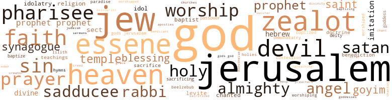

Judas, My Brother, by Yerby, Frank (1968)
132 music-related terms matched in this text.
Most frequent terms in this topic: line (27); phrase (12); sang (9); singing (8); instrument (6)
chant.n.01
Definition: a repetitive song in which as many syllables as necessary are assigned to a single tone
| word | sentence |
|---|---|
| chant | Was it in Athens , where we listened to Sophist and Singer , heard the hypokritoi chant immortal lines , frequented flute girls and hetairai , drank deep of life , gamed our youth away ? |
chapter.n.01
Definition: a subdivision of a written work; usually numbered and titled
| word | sentence |
|---|---|
| Chapter | I do n't know whether he chose the Sixty - first Chapter of Isaiah on purpose or not , but if he did , the choice was unfortunate . |
chorus.n.01
Definition: any utterance produced simultaneously by a group
| word | sentence |
|---|---|
| choruses | Then he stopped , looked at you , and his eyes swallowed the sun , he reared up twenty mountains tall , and all the Seraphim in heaven chanted murmuring choruses through his voice . |
croon.v.01
Definition: sing softly
| word | sentence |
|---|---|
| crooned | " Nathanaeus , " she crooned . |
| Croons | Croons lullabies . |
| crooning | But Telemarchos ' description of Shelomith , cuddling a bundle of rags , crooning lullabies to that pitiful substitute for the child I 'd cost her , rose up and tiptoed through my mind with icy feet , setting me ashiver . |
cymbal.n.01
Definition: a percussion instrument consisting of a concave brass disk; makes a loud crashing sound when hit with a drumstick or when two are struck together
| word | sentence |
|---|---|
| cymbals | " Later , Nathan --- 1 " Her voice made flute music , with cymbals underneath , velvety and warm . |
dance.n.01
Definition: an artistic form of nonverbal communication
| word | sentence |
|---|---|
| dance | " Well , Longinus , " I said , " shall we begin the dance ? " |
dance.v.03
Definition: skip, leap, or move up and down or sideways
| word | sentence |
|---|---|
| dancing | But now the tears were dancing on the upturned corners of her mouth as she smiled at me . |
| dance | I could see his eyes dance over the lines . |
| danced | Her tears caught on the comers of them , danced on that wild , hopeless quiver as though an invisible idiot were juggling jewels . |
| danced | She danced nervously , and her flank banged into the boy . |
| danced | I danced Bedu in close . |
| danced | I danced away from his blows until he was so out of breath that he could no longer strike or speak . |
exposition.n.04
Definition: (music) the section of a movement (especially in sonata form) where the major musical themes first occur
| word | sentence |
|---|---|
| exposition | But , seeing that I made no progress at all toward their peculiar and evident sanctity , they preached at and questioned me endlessly until they proved me into an exposition of my thought , to wit : That , logically speaking , if my father knows on the first day of the week that on the third I am going to bed with a tavern slut , get her with unlawful child , kill a man in a drunken quarrel over her unwashed favors , be strangled in due course by the authorities for my crime , if , 1 repeat , my father knows all tin 's beforehand and does not chain me to my bed on the morning of the third , he is guilty of unspeakable cruelty --- which , I pointed out to them , is exactly the behavior of which they piously accuse their God . |
glissando.n.01
Definition: a rapid series of ascending or descending notes on the musical scale
| word | sentence |
|---|---|
| glissando | As he wrote what I was sure by then was each man 's most private , secret sin upon the earth , judging each of them with uncanny accuracy , I could hear a slow glissando rain of stones upon the hard-packed clay , as unnerved fingers unlocked , released , gave . |
gong.n.01
Definition: a percussion instrument consisting of a metal plate that is struck with a softheaded drumstick
| word | sentence |
|---|---|
| gong | " I 'll take --- " But her voice made a dissonance , like a whipcrack cutting through the echoes of a temple gong . |
| gong | " Yisu ! " she cried out , and her voice was a temple gong , bronze-toned , almost golden . |
hymn.n.01
Definition: a song of praise (to God or to a saint or to a nation)
| word | sentence |
|---|---|
| hymns | Again their holy madness about the calendar served us well , for , to them , this was not the Shabbat , so they could bury him , perform some rarely moving rites , sing their weird and wondrous hymns above his grave . |
| Hymns | Did you not say to your maskil that the Hymns were nonsense ? " |
lullaby.n.01
Definition: a quiet song intended to lull a child to sleep
| word | sentence |
|---|---|
| lullabies | Croons lullabies . |
| lullabies | But Telemarchos ' description of Shelomith , cuddling a bundle of rags , crooning lullabies to that pitiful substitute for the child I 'd cost her , rose up and tiptoed through my mind with icy feet , setting me ashiver . |
lyre.n.01
Definition: a harp used by ancient Greeks for accompaniment
| word | sentence |
|---|---|
| lyre | Every vein she had made a pulse and beat ; every nerve she owned vibrated like plucked lyre strings until mine were screaming along with them . |
| lyre | Instead , with vine leaves in my hair , I was plucking insanely at my lyre and chanting a skolia , a drinking song of my own composition , whose lightest , least offensive word would have caused my Uncle Hezron to wash my mouth out with wood ashes and slaked lime . |
mezuzah.n.01
Definition: religious texts from Deuteronomy inscribed on parchment and rolled up in a case that is attached to the doorframe of many Jewish households in accordance with Jewish law
| word | sentence |
|---|---|
| mezuzah | He 'd even attached the mezuzah , the sacred sign , to the gunwale of the bireme we were on , having no doorpost to nail it to as the law required . |
music.n.01
Definition: an artistic form of auditory communication incorporating instrumental or vocal tones in a structured and continuous manner
| word | sentence |
|---|---|
| music | Yet she rose at the sound of the angel music in his voice , walked about , had her being . |
| music | " Later , Nathan --- 1 " Her voice made flute music , with cymbals underneath , velvety and warm . |
| music | " I 'm sorry , Father , " he said , and his voice became pure music , the quality of spring , bee-drone on a lazy day , a breeze moving among the lilies . |
musical.n.01
Definition: a play or film whose action and dialogue is interspersed with singing and dancing
| word | sentence |
|---|---|
| musical | Then , lowering his voice still further , but calling upon its full musical - ity , its depth , its remarkably rich timbre , he said : " It will be argued --- in fact it has been argued , notably by my own son here present among the spectators --- that Yeshu'a hen Yosef , called the Nazarene , is only a mild sort of lunatic , and therefore should not be held responsible for his crimes . |
musical_instrument.n.01
Definition: any of various devices or contrivances that can be used to produce musical tones or sounds
| word | sentence |
|---|---|
| instrument | Nathan was but his instrument . |
| instrument | Well enough , it would seem , to tumble his wife with impunity --- " " That 's not exactly the instrument I used , " I said solemnly , " but let it pass ! |
| instrument | A member of this time-serving , slavish Sanhedrin that 's but an instrument of Roman power , because ambition in you outweighed principle , so that you left the Pharisees , who , for all their faults , are still men of mercy --- as they 've proved by hedging the Law about with so many precautions against the too hasty shedding of possibly innocent blood , that were this a P'rushim court , condemning this poor , mad dreamer of dreams would be practically impossible --- to join the Zadokim , to whom mercy is but a word . |
| instruments | He made ready his instruments , and I dictated the following note : " To the Divine Lydia , wife of Quintus Valerius Caius , from her devoted son , Caius Nathanaeus , greetings ! |
| instrument | And if he 'd used my poor sinless chaste pure good kind tender loving Helvi as the instrument of my chastisement , the mildest term I could apply to him was Monster . |
| instrument | " Now put up that barbaric instrument of utter barbarians and come greet your mother . |
| instrument | For , to linger at this unsought-for depth , where the sudden , almost stupefying recognition that she was Claudia , and I , Nathan , began appallingly to matter , where other faces , breasts , vulvae , phalli , gonads simply would n't do , where the flesh became not the instrument of pleasure but of fusion , of making us twain one soul , was ( since that depth demands continuity , a future of sorts , an end to proceed toward , or to ) profoundly , even terribly --- a sin . |
phrase.n.02
Definition: a short musical passage
| word | sentence |
|---|---|
| phrase | I could see my mother moving her lips , struggling over Yohannah 's somewhat archaic Galilean turns of phrase . |
| phrase | I told them where to take the colt , and gave them the code phrase already arranged between Yeshu'a and me . |
| phrases | On the way we talked , using the broken phrases , the disjointed words , sentences that make the very air vibrate with tension , that shoot it through with the unseen lightning of what they do n't say , leave out . |
| phrases | Chapter X that next day , to employ one of my father 's favorite phrases , I was fit only to be bound hand and foot , thrown into a pit , and left to howl . |
| phrase | In that particular phrase , as you can readily see , the difference between " you " and " him " is enormous . |
| phrase | What this muttered disjointed phrase of mine referred to , what it was I needed to know , was a strange thing indeed : How it was that alone of all the great families of Israel , mine was the only house divided against itself , the sole princely clan in which two brothers were members of our nation 's most bitterly opposed sects : The Zadokim , whom you call the Sadducees , and the P'rushim , by interpretation , Pharisees . |
| phrase | By your sweet hand I --- " here a long phrase impossible to decipher --- " gladly . " |
| phrase | The rest of it was the word " please " repeated ten times , followed by a phrase that surely meant " come to me " and that by a line written with the greatest care , startlingly different from the rest , though I could see it was still her hand --- " I love you , Nathan . |
| phrase | She was fondling it , tracing upon my palm with her fingertip our private code symbol for the phrase " Let 's make love . " |
| phrase | And , because of that , all the words have been written , said , the coinage of language debased by overuse , making it , for instance , difficult , to say " I love you " to a woman whom you do love , because you have system - ically reduced the content of precious metal in those particular coins , robbed that phrase of meaning , by saying it to so many wenches you merely lusted after , so many facile little bitches who amused you . |
| phrase | No phrase , clever or dull , to tell you that my bowels yearned for that unborn child , who should have been mine ; that the knowledge that he was n't , that I 'd never hold him in my arms , say to him , " My son ! |
| phrase | I stared at her , and --- forgive me the the well-worn phrase ! |
| phrase | That last phrase was beautifully turned . |
| phrase | And that last phrase of bar Zachariah 's had had a strange effect on him . |
place.v.16
Definition: sing a note with the correct pitch
| word | sentence |
|---|---|
| place | " Look , good Captain --- let 's place some conditions on the outcome of this contest --- " He stared at me . |
rhythm.n.04
Definition: the arrangement of spoken words alternating stressed and unstressed elements
| word | sentence |
|---|---|
| rhythm | " You --- wo n't --- " she chanted , in rhythm with her blows , " look --- like him --- any --- more . . . . |
sing.v.02
Definition: produce tones with the voice
| word | sentence |
|---|---|
| singing | So now --- " I kept my face serious , although all the Seraphim in Heaven were singing hosannahs in my heart . |
| sing | It was early in die month of Adar1 and all die world was beginning to leaf , to bud , to flower , to sing . |
| sang | And , as always , the world renewed itself ; the air became smoky pearl , fragrant with flowers ; in the tamarisks , the nightingales sang , although it was still day . |
| sang | And , as always , we said the Grace after Meals , and sang the Hallel . |
| sang | A ruined landscape in which all the trees are bare and no bird ever sang . |
| sang | When I came up to Avidius Publius ' house , his nomenclator sang out my name . |
| sing | Again their holy madness about the calendar served us well , for , to them , this was not the Shabbat , so they could bury him , perform some rarely moving rites , sing their weird and wondrous hymns above his grave . |
| sang | As I rode toward the Holy City , words sang and leaped through my head : " I will render vengeance to mine adversaries , and will recompense them that hate me . |
| sing | The blood of those of whom you sing : ' Woe is me for the House of Boethus ; woe is me for their clubs ! |
| sung | Or less than thatl Had he appeared daily in the Temple , offering sacrifices to Invisible , Unutterable , Unknowable God , all Israel would have sung his praises . |
| sang | The blood leaped and sang in my veins at the prospect . |
| sang | " Ha ! " one of them sang out . |
| sang | Instead she sang snatches of love songs , gathered an armful of the wild roses that grew along that way . |
| sing | All he has to do is smile and the morning and the evening stars sing together , and all the Cherubim and Seraphim come down ! |
| sang | Remember a glance , swift seeking , a mute imploring look that conveyed more meaning than all the ink-profaned scrolls of this world , a silent gesture that sang or screamed ; a timbre of voice that deepened or belied the sense of what words we were at any given moment saying ; the tortured unto death grimaces of love ; the long sweet clinging lassitude of accomplished desire , when other voices , faces , limbs , circumstances , loves , have faded forever out of time and mind . |
| sing | Then find her a young husband , handsome and gay , who 'll tease her , pet her , sing love songs to her --- wear out a mattress with her every night , so that the blood will flow sweet and quiet through her veins and she 'll stop dying by inches of love for you , my friend ! |
singing.n.01
Definition: the act of singing vocal music
| word | sentence |
|---|---|
| singing | I got to my knees , and she had her arms about me , and was saying , '' Nathan oh Nathan oh Nathan Nathan --- " like that , over and over again , and was kissing my face with hot salt wet clumsy kisses that tore my heart to tiny singing bits with this absolute proof of her innocence , her purity , that she did n't even know so simple , so instinctive a thing as how to kiss , until I put my hands under her armpits and raised her to her feet . |
| singing | They should n't have been shouting and singing and drinking the way they were . |
| singing | I could bear birds singing in the palace gardens through all the noise of shouting ; a breeze tossed the lilies , laughing , laughing . |
| singing | I saw his whip cut dirough the wool of her robe like a knife , and under it her flesh open up like two long bluish white lips and turn scarlet in the middle and drip red , and he crossing that with another and that with still another until I was out of the bed and between them and the whip was whining and singing and whistling and biting into me too and I , going down into red fire into Sheol 's blackest pit into utter night , screamed at him : " You fool ! |
| singing | She was also singing to me , teasing me , saying things like : " Oh , Nathan ! |
| singing | Hurled the slender shafts upward , retaining their grips on those wickedly simple javelin launchers , so that the throwing sticks whipped around one hundred eighty degrees of arc still glued to the butts of the javelins , adding all that tremendous propulsive force to them before the singing spears left them , flew free . |
| singing | My blood went singing along my veins with joy . |
song.n.01
Definition: a short musical composition with words
| word | sentence |
|---|---|
| song | People who have neither wine nor sun nor song in them , who have nothing in them but their abysmal cruelty , who can never be civilized , who can only imitate , counterfeit civilization , while remaining northern barbarians to the end of time --- " " You 've a rough tongue in your head , Nathanaeus , " he said ; " but , I fear me , an honest one . |
| Song | I took the lock of pale sunlight hair I carried always in one of the tellifin along with a verse from the Song of Songs . |
| Songs | I took the lock of pale sunlight hair I carried always in one of the tellifin along with a verse from the Song of Songs . |
| song | Their song becomes --- silence . |
| songs | Instead she sang snatches of love songs , gathered an armful of the wild roses that grew along that way . |
| song | Instead , with vine leaves in my hair , I was plucking insanely at my lyre and chanting a skolia , a drinking song of my own composition , whose lightest , least offensive word would have caused my Uncle Hezron to wash my mouth out with wood ashes and slaked lime . |
| songs | Then find her a young husband , handsome and gay , who 'll tease her , pet her , sing love songs to her --- wear out a mattress with her every night , so that the blood will flow sweet and quiet through her veins and she 'll stop dying by inches of love for you , my friend ! |
swoop.n.01
Definition: (music) rapid sliding up or down the musical scale
| word | sentence |
|---|---|
| swoop | Then , seeing me stagger , totter , start to fall , she got up from there and started running toward me still screaming like that until she and the pain both crashed into me at the same time and the world slid out from under me with a sickening swoop and shudder and I was going down down down into blackest Sheol , into Gehenna , and her arms were around me and scalding droplets were falling onto my face and she was saying slowly , clearly : " I 've killed him . |
tone.v.01
Definition: utter monotonously and repetitively and rhythmically
| word | sentence |
|---|---|
| chanted | My heart chanted hosannas at the sight ; but I did n't relent . |
| chanted | Then he stopped , looked at you , and his eyes swallowed the sun , he reared up twenty mountains tall , and all the Seraphim in heaven chanted murmuring choruses through his voice . |
| chanted | " You --- wo n't --- " she chanted , in rhythm with her blows , " look --- like him --- any --- more . . . . |
| chanted | " Meretrice , Prostibtih , Lupct , Doris , Busluaria , Scorta Erratica , Ambulatnce Notiluca , Gallina , Foraria , Blitida , Diobolaia , Quadran - taria , " she chanted in her soft , delicate , little girl 's soprano . |
| chanting | Instead , with vine leaves in my hair , I was plucking insanely at my lyre and chanting a skolia , a drinking song of my own composition , whose lightest , least offensive word would have caused my Uncle Hezron to wash my mouth out with wood ashes and slaked lime . |
| chanted | I would n't marry him if he were --- " " The --- last --- man --- on --- earth ! " they chanted ; and dissolved into great gales of silvery feminine laughter . |
tune.n.01
Definition: a succession of notes forming a distinctive sequence
| word | sentence |
|---|---|
| line | The Mashiah is to come from David 's line ; and from Beth le Hem , The Bakers ' Village , David 's own town in Judea ! " |
| Line | Line by line , feature by feature , we were nearly twins , except --- For whatever it was he had inside him : that tenderness , that compassion , that awful anger , that shattering power . |
| line | Line by line , feature by feature , we were nearly twins , except --- For whatever it was he had inside him : that tenderness , that compassion , that awful anger , that shattering power . |
| line | Yet , all the prophecies say --- " " That he must be of David 's line , " I said , " and bom in Judea . |
| line | And even if , because of the miracles attributed to him , a fool or two in the lesser villages had already pronounced the word " Mashiah " in connection with his name , he himself had never publicly made such a claim , knowing as he did that he was not of David 's line , or house . |
| line | None of 'em can read a line . |
| line | Among us , when a man dies childless , his brother must lie with his widow in order to preserve his name and line . |
| line | If it pleases him , he can change his mind , you know --- just as he gave Abraham that sheep as a substitute for his son Isaac as a sacrifice . . . . 5 So maybe he 'll use a barefooted Galilean , son of a carpenter , bom in Nazareth , a town without a history , as his Anointed , instead of a Prince of Judea , born of The House of Bread , in David 's village , and of that kingly line . . . Yehudah caught the deep-hidden note of mockery in my tone at once . |
| line | Unless he can prove he is of David 's line , he 's guilty of it . |
| line | Had he fled so far from reality that he now believed himself of David 's line ? |
| line | The High Priest could n't , for unless my wild man brother - in-law really were the Mashiah , or could prove at least that he was of David 's line , the claim itself was , by a technicality too difficult to explain here and now , false prophecy , and punishable by death . |
| line | Briefly , it goes like this : Among us , a brother must marry the widow of his brother who has died childless , in order to preserve his name and line . |
| line | He just admitted he was n't of David 's line . |
| line | Because he coxild be of David 's line . |
| line | First scribe a horizontal line , perfectly straight and level . |
| lines | Connect the two lines with a capital letter U , so that the end of one line and the beginning of the other touch the tops of the U. Naturally , you 'll have to make one side of the U a little higher than the other to meet the elevation of the second line . |
| line | Connect the two lines with a capital letter U , so that the end of one line and the beginning of the other touch the tops of the U. Naturally , you 'll have to make one side of the U a little higher than the other to meet the elevation of the second line . |
| lines | To write the vowels , we have to " point " them with tiny symbols , usually dots , straight lines , or crosses , placed above , or below , or sometimes even inside the loops of the consonants , to indicate what particular vowel is to follow the consonant so vowel-pointed . |
| line | No wonder that even knowing it was not so , men could believe him of David 's line . |
| line | I was not as sunburnt , I was considerably fatter ; my hair was maybe a shade less kinky ; but , apart from that , line for line , our features were the same . |
| line | I was not as sunburnt , I was considerably fatter ; my hair was maybe a shade less kinky ; but , apart from that , line for line , our features were the same . |
| line | The firstborn we 'll dedicate to the priesthood , to be reared in your house , to continue your line . |
| line | --- had the aged Hyrcanus Second , another Hasmonacan and hence one of our hypothetical cousins , whom his own father Antipater had always liked and supported , slain ; murdered , in a jealous rage , his first wife Mariamne , or rather the first of his two wives to bear that name , the one who was not your grandaunt , but who was of the Hasmonaean-Maccabean line ; killed her mother , Shelom-Zion , whom the would-be Greeks call Alexandra , for plotting against him ; had Costobar , his sister Shelomith 's second husband , put to death for hiding and protecting the sons of Balas , who were reputed to have Maccabean blood , thereafter putting them to the sword as well ; had his own sons by Mariamne the First , Alexander and Aristoboulos , strangled at Sebaste ; and beheaded his dearly beloved son Antipater , his eldest , born of his very first wife , Doris --- though he never counted her as such , having put her by --- for plotting against him . |
| line | On his father 's , he is of Galilee 's noblest line as well , a descendant of the patriot and soldier Mattithias ; from the time of the Maccabees on down , that family has been famous --- " " So ? " |
| line | This child , this sweet child of imperial line , with the blood of divine Augustus coursing through her veins , should never have even heard of those utter obscenities , much less have known what they meant . |
| line | The rest of it was the word " please " repeated ten times , followed by a phrase that surely meant " come to me " and that by a line written with the greatest care , startlingly different from the rest , though I could see it was still her hand --- " I love you , Nathan . |
| lines | Was it in Athens , where we listened to Sophist and Singer , heard the hypokritoi chant immortal lines , frequented flute girls and hetairai , drank deep of life , gamed our youth away ? |
| line | The repentant sinners formed a line . |
| line | Strange : she was so perfect , so harmonious of line , so cleanly carved of feature that she looked --- cold . |
| line | I had to wed , preserve my father 's line . |
| line | She line ! |
upright.n.02
Definition: a piano with a vertical sounding board
| word | sentence |
|---|---|
| upright | She 'd stuck her torch upright into the ground . |
| upright | Among other things , the upright is almost never extended above the crossbar as it was in Yeshu'a 's case so that Pilatus could affix his blasphemous mockery above his victim 's head . |
violin.n.01
Definition: bowed stringed instrument that is the highest member of the violin family; this instrument has four strings and a hollow body and an unfretted fingerboard and is played with a bow
| word | sentence |
|---|---|
| fiddle | Of course we can piddle and fiddle away at it for half a lifetime with the hands we have . |
warble.v.01
Definition: sing or play with trills, alternating with the half note above or below
| word | sentence |
|---|---|
| quavered | " Well ? " he quavered . |
| quavered | " The bitch ! " he quavered . |
| quavered | " Nathan , " she quavered . |
| quavered | ' Thieves and harlots ! " he quavered , his voice breathless and sobbing , feeble with age , torn by grief . |
whistle.v.01
Definition: make whistling sounds
| word | sentence |
|---|---|
| whistling | I saw his whip cut dirough the wool of her robe like a knife , and under it her flesh open up like two long bluish white lips and turn scarlet in the middle and drip red , and he crossing that with another and that with still another until I was out of the bed and between them and the whip was whining and singing and whistling and biting into me too and I , going down into red fire into Sheol 's blackest pit into utter night , screamed at him : " You fool ! |
| whistling | He saw her teeth clench in mad determination and he hurled himself upon her just as she started blueglittering death whistling downward to end her , and my , world . |
| whistling | The vertical bar of the l catches the butt of the shaft , whips against it with a force at least triple of what you could manage to put behind your cast without it , sends the slender shaft whistling through the air to achieve a range rivaling that of the arrows of a Scythian bowman . |
| whistling | She was staring at Claudia as one might stare at the ax which will end one 's life , just before the executioner brings it whistling down . |
whistle.v.05
Definition: make a whining, ringing, or whistling sound
| word | sentence |
|---|---|
| sings | She --- sings to it , Nathanaios . |
834 violence-related terms matched in this text.
Most frequent terms in this topic: kill (55); killed (49); anger (37); dagger (37); sword (33)
abhor.v.01
Definition: find repugnant
| word | sentence |
|---|---|
| loathed | From the very first instant I met him , I instinctively loathed Pontius Pilate . |
| loathe | About what life , fate , necessity , even your eyeless , faceless , blind , three-headed son - sacrificing cannibalistic monster of a god had done to her by then that she should hate herself , loathe her glorious body so . |
abrasion.n.01
Definition: an abraded area where the skin is torn or worn off
| word | sentence |
|---|---|
| scratch | The scratch on his arm had already ceased to bleed . |
| scratch | For one thing , wre had of Shimeon how you spared his life when you had it in your power to revenge yourself on him for that scratch he gave you ; for another , dead , you 're but another lump of flyblown stinking carrion , vulture food ; alive you 're worth your weight in gold ! " |
affray.n.02
Definition: a noisy fight
| word | sentence |
|---|---|
| fray | 7 was the victor in that fray , so he 's mine . |
aggravation.n.01
Definition: an exasperated feeling of annoyance
| word | sentence |
|---|---|
| exasperation | He went on sitting there , while I tried desperately to talk to him , moving my lips like a mute , and he , lost in thought , in prayer , did n't notice it until the tears of pure exasperation had flooded my face , and a single ray of sun came through the window and made them blaze . |
| exasperation | Tears of pure exasperation stood in Yohannah 's eyes . |
anger.n.01
Definition: a strong emotion; a feeling that is oriented toward some real or supposed grievance
| word | sentence |
|---|---|
| anger | Brother in all things : pain , sorrow , confusion , anger , sin --- and doubt . |
| anger | My anger left me . |
| anger | Line by line , feature by feature , we were nearly twins , except --- For whatever it was he had inside him : that tenderness , that compassion , that awful anger , that shattering power . |
| anger | Even the explosive flare and flash of her anger enchanted me , because , I realize now , it was a trait she shared with Yeshu'a . |
| anger | Still , I feared that anger --- in both of them . |
| anger | Even his brothers --- except Yose --- shared the congregation 's anger . |
| anger | I could see the tiny flare of jealous anger getting into her eyes . |
| anger | His face darkened with real anger . |
| anger | I 'd known he 'd drink diat , just as I knew that the source of his anger was not die hurt to my poor flesh , but what he took to be Zealot defiance of Roman authority . |
| anger | 8 And the faces of most of the people , of the overwhelming majority of the multitude who were watching this ridiculous spectacle silently , went dark with anger . |
| anger | I could see that awful anger I knew so well kindle in Yeshu'a 's eyes . |
| anger | Ilis face flushed with his terrible anger , he was laying about him lustily with a whip of cords . |
| anger | But the effect of Yeshu'a 's clever answer was only to blunt the crowd 's anger enough to allow him to escape alive . |
| anger | Some --- the Zealots , I guessed --- were black with anger . |
| anger | Then he made another mistake : he lost his temper , and began to berate the P'rushim .10 The people listened to his tirade a while , but now they saw it for what it was , the anger and chagrin of a defeated man ; so it bored them . |
| ire | In fact , from the way they were staring at me now , I saw I had better offer them some reason for requesting that they sacrifice my lamb for me on the wrong day that would quell their curiosity , their suspicion and their ire . |
| anger | His anger was both sincere and terrible . |
| anger | '17 You have heard sober and truthful witnesses testify that the prisoner repeatedly has advocated the abolition of Shabbat observance , of Kashruth , and of the halakah Vmoshe concerning divorce . . . . " My father halted then , raised his eyes to mine ; but now I saw both anger and authority in them . |
| anger | The anger , his next words proved , w?as largely directed at me . |
| anger | And these things --- accompanied in great measure by all the P'rushim 's anger at Yeshu'a 's largely unwarranted attacks on them --- made him forget In 's habitual compassion , drowned it in his zeal to score a point in learning over Yosef . |
| anger | Condemn the innocent to --- " " Nathan ! " my father said again ; but this time the pain in his voice broke through my anger . |
| anger | I could see anger kindle in his eyes . |
| anger | They came up to me , and stood there staring at me in solemn anger . |
| anger | " We 've come , O Magi , " he said solemnly , but there was a twinkle in his eye , " that you tear away the veil that hides the future , and tell us what fate will befall usl " A flicker of anger rose in me . |
| anger | But Yeshu'a smiled at me , and my anger vanished . |
| anger | Ilis anger was terrible . |
| anger | So I attempted to take refuge in anger . |
| anger | Said : " Forgive me my anger , Nathan . " |
| anger | Your father does n't want you in Jerusalem until the anger touching your involvement with the procurator , and die scandal over your relations with his wife , have died down . |
| anger | He stared at me with sorrowful anger . |
| anger | It rolled , mouth open in a silent scream that , lacking lungs , no longer had air to give it sound ; eyes glaring in ferocious anger upon death , blood pouring from the severed neck . |
| anger | Not in anger , but in grief . |
| anger | I stared at him , and hot anger rose and beat inside my skull . |
| anger | The anger drained out of me . |
| anger | But , when I was close enough , I could see the anger in them . |
| anger | By showing me not anger , but contempt . |
| anger | Sat there looking at her , until I saw that cold , still anger in her dark eyes thaw . |
| anger | Instantly they whirled upon me , their faces black with anger . |
assail.v.01
Definition: attack someone physically or emotionally
| word | sentence |
|---|---|
| assaulted | Third , he himself physically assaulted worthy and honest merchants and traders in sacred things in the very outer courts of the Temple ! |
| assaulted | But never until that hour had I known what it was to have my being , my identity , my pride of self , my will , drawn out of me through every pore of the underflesh of my sweetlyhotlywetlysavagely - tenderly assaulted mouth . |
battle.v.01
Definition: battle or contend against in or as if in a battle
| word | sentence |
|---|---|
| battling | I found out then that a good many of the P'rushim among the priests held that the Essenes were right in this matter of the calendar .7 These fell to battling with their colleagues , both the Zadokim and some priests of their own party --- for , within certain limits , the P'rushim embraced many different degrees or shades of opinion - brandishing quotations from this or that sage as though they were so many swords . |
bleeding.n.01
Definition: the flow of blood from a ruptured blood vessel
| word | sentence |
|---|---|
| bleeding | Of course Yohannah washed it , applied herbs , changed the bandages constantly once the bleeding had stopped ; of course Miriam , herself , bathed me , fed me , tended me with her strong and capable hands while I lay there unconscious ; of course my Uncle Hezron spent day and • night upon his knees beseeching the Almighty to spare my life . |
| bleeding | The loss of belief , of faith , is a painful thing , Nathan --- " " So 's the loss of virginity , Yehudah , " I quipped ; " but once the bleeding stops , the soreness is gone --- " " Your comparison is false , " he said dryly . |
| bleeding | I groaned ; but , by then , she had my right hand , the one I 'd hit her with , between both of her own , and was pressing her hot salt-wet bleeding mouth to it in an agony of tenderness , in gratitude for its having granted her this kind of pain : hard , bright , hurtful , sudden , physical , which broke through and dulled for the moment the other which was none of these , and of which she was very slowly and terribly dying . |
| bleeding | Pain made a fist , and slammed itself into my bleeding gut . |
| bleeding | Dumb with weariness , numb with grief , I started out , and , quite by accident , passed by the tomb in which we 'd laid Yeshu'a 's bleeding body for an hour . |
blister.v.02
Definition: subject to harsh criticism
| word | sentence |
|---|---|
| scald | They scald my throat . |
| scalded | I only stopped crying when my eyes were scalded blind ; when I could squeeze out not one more single tear . |
bloodshed.n.01
Definition: the shedding of blood resulting in murder
| word | sentence |
|---|---|
| bloodshed | " Because , if you wait a week or two and let those fools find out his pacificism , his total horror of war and bloodshed , his mystical , spiritual concepts of kingship --- he thinks of himself as a priestly Mashiah , a sacerdotal Christos , not a warrior king --- they 'll kill him for you , if I ca n't get him away from them first , out of their disappointment and their rage . |
bruise.n.01
Definition: an injury that doesn't break the skin but results in some discoloration
| word | sentence |
|---|---|
| bruise | Her mouth was one great bruise . |
| bruise | I wanted her to reflect upon it , feel it like a bruise deep in her heart , her mind . |
butcher.v.01
Definition: kill (animals) usually for food consumption
| word | sentence |
|---|---|
| slaughtered | " Herod the Great died two years before Yeshu'a and I were bom .14 So , if he ordered any babies slaughtered , he did it from beyond the grave . |
| slaughtered | For Yu-Ann 's sake , for the sake of your unborn nephew , do n't get yourself slaughtered for the imaginary kingdom of your mythical god ! " |
| butchered | When you butchered my gladiator so tidily --- that was unkind of you , Nathanaeus ! |
| slaughtering | Your community of interests with me --- you 'd save me from an error that might threaten my career because you do n't want your wife 's brother killed , because if I 'm recalled , the Zealots will murder you , because your patriotism extends to treason against your people 's ideals , knowing as you do that the practice of those ideals would give us the exquisite pleasure of slaughtering the most exasperating race of prickly bastards we 've ever encountered anywhere to the last bearded , louse - infected man --- is just too neat . |
| slaughtered | Another crazy prophet come down from Galilee to stir the people up , to set them mad , to send them howling to the attack once more , once more to die like slaughtered animals under die swords of the best , the most efficient butchers in all the world . |
| slaughtered | Went limp , inert --- a slaughtered lamb --- a poor little creature already killed . |
| slaughtered | When even that device failed them , they lifted me like a slaughtered goat , with my tunic in ribbons , sticking to my shredded back , blood coming out of my ears , nostrils , mouth , even the corners of my eyes , walked with me as though I were weightless , and slung my broken carcass into the street . |
| butchered | " --- her poor little tripes out of her belly like a butchered she-goat . |
| butchered | Then she did stop , and lay there looking at me and smiling a little with that knife in her so deep that to get it away from her I would have had to ruin her , leave that sweet flesh butchered tom . |
| butchering | And that Shimeon had no stomach for butchering a woman . |
| butchered | If you 'd killed Thor they 'd have butchered you like a sacrificial lamb no matter what they 'd promised . |
| slaughtered | Outside it , he executed the ten P'rushim who had plotted a revolt against him ; slaughtered the old soldier Teron and three hundred of his followers for daring to verbally defend tbe obvious innocence of Alexander and Aristoboulos , his , Herod 's , sons by Mariamne the First ; he had the two rabbin , Yehudah ben Sephoriah and Mattathiah ben Margaloth , burned alive with numerous followers of theirs for daring to tear down the golden eagle he 'd fixed above the Temple gate in defiance of all our laws ; and , last of all , feeling his own death upon him , he had members of every prominent family in Judea confined in the arena at Jericho , there to be put to the sword the moment his death should be announced , thus making sure that all Jewry should weep his passing ! |
| butchered | " And for that he butchered you like a calf ? " he said . |
| slaughtered | And , as for the letter to Claudia --- written in my purest Greek , employing the blood of a freshly slaughtered goat as ink --- my resentment over the casual way she 'd used my body as an instrument for achieving pleasure caused me to make a little masterpiece of it . |
| butchered | By accident or design , Longinus had worked me into that part of the arena where my predecessor had been butchered . |
| butchered | You merely butchered a Roman swine who 'd killed too many of our people already . |
character_assassination.n.01
Definition: an attack intended to ruin someone's reputation
| word | sentence |
|---|---|
| assassinations | Perform judicial assassinations ? |
| assassination | Unless I could supply them with the weapons in quantity and quality to equal the legions ' , and procure enough of perfectly trained , perfectly armed young fighters to outflank at least a cohort , it was assassination to send them into battle . |
choking.n.02
Definition: the act of suffocating (someone) by constricting the windpipe
| word | sentence |
|---|---|
| strangling | A pair of tits bursting out of her tunic , hips --- " " I know , " I said , forcing the words out through the strangling in my throat , the constriction in my lungs , the pain in me like a death-stab to my gut . |
contemn.v.01
Definition: look down on with disdain
| word | sentence |
|---|---|
| despised | Tire rest of them I did n't really know except Matthya the publican ; and him I despised . |
| scorn | But , before you scorn her for her ignorance , allow me to point out , in her defense , that the languages she had to read were not Latin and Greek , but Aramaic and Hebrew . |
| despise | Maybe then you 'll despise me . |
| despise | How can you make me despise you , when you 've never been able to make me stop --- loving you , Shelom ? " |
| despises | Loving , lusting after a woman who despises me . |
| scorn | For , Pharisee that he was , Uncle Hezron did n't scorn the Amme ha aretz , the unlettered ones , when they were as godly and pious as the carpenter was . |
| despise | I was being submitted to the most fiendish of tortures ; I hoped she would not despise me when she saw how hideously I 'd be scarred . |
| despise | Now the Romans , as you Greek did before them , rather despise light-armed missile troops . |
| despise | I do n't mean they despise the use of missiles . |
| despised | Without beauty , without majesty no looks to attract our eyes a thing despised and rejected by men a man of sorrows and familiar with suffering a man to make people screen their faces ; he was despised and we took no account of him . |
| despised | Without beauty , without majesty no looks to attract our eyes a thing despised and rejected by men a man of sorrows and familiar with suffering a man to make people screen their faces ; he was despised and we took no account of him . |
| scorn | You see , I was only too well aware that in my birthplace I was an object of contempt , of scorn . |
| scorn | And I ask you to consider this , as men who 've worked long hours at backbreaking tasks , and still , despite your labors , have suffered privation , want , and the scorn of those who hold you their inferiors : What real harm can come to the House of the banim Yosef by linking itself through marriage to the House of the banim Mat - tathiah ? " |
| scorn | Who in Galilee would dare scorn a family any longer whose daughter had married into the House of Matthya ? |
| despises | She --- she despises me . |
crucify.v.01
Definition: kill by nailing onto a cross
| word | sentence |
|---|---|
| crucify | At worst , turn you over to the Romans and let them crucify you ! |
| crucify | When the Romans crucify him the week after Pesach , I 'm going to watch . |
| crucify | " The Romans are going to crucify Yeshu'a bar Abbas ? " |
| crucify | Second , the people , led by the Zealots , will flock to him , and proclaim him King , tlius forcing you to crucify him , which you 'll do only if you 're an utter idiot --- " " Why so ? " |
| crucifying | And I do n't think crucifying a man whose every teaching reinforces Caesar 's rule , as his followers can produce hundreds of witnesses to prove , will help your standing with the Imperator --- " " Interesting --- if true , " Pilatus said . |
| crucify | They make you crucify this harmless idiot of a brother-in-law of mine , and afterward they force Vitellius to have you recalled by proving , as they can , that Yeshu'a ha Notzri , was a friend of Caesar 's --- " " There 's something wrong with this , " Pilatus mused ; " but 1 ca n't put my finger on it . |
| crucified | If you 'd got poor Shelom battered to death , some of her clients among the Roman legionaries would have seen to it that you 'd be crucified for murder . " |
| crucified | Could any man of woman born bear the obscene horror of being crucified ? |
| crucified | But then I remembered that bar Abbas was in jail , doomed , Shelom had told me , to be crucified . |
| crucifying | Who 'll gladly oblige by crucifying --- " " The bar enosh . |
| crucify | Maybe I 'd better crucify him " Yohannan turned white . |
| Crucify | " Crucify him ! " the crowd bellowed . |
| Crucify | " Crucify him ! " |
| crucify | ' Take this little Jew bastard out and crucify him , " Lucius Pontius Pilatus said . |
| crucifying | In another moment , crucifying him was going to be an anticlimax . |
| crucified | Ask her what a woman and a mother would do at being told her son 's being crucified ? |
| crucify | Therefore I propose that you --- crucify him . " |
| crucified | I know , because I was crucified . |
| crucify | And afterward I got them to crucify you because I figured that since they were sure to do something awful to you anyhow that was the only thing I could think of that would give me time enough to come back and save you . |
| crucify | Shall I crucify him outside your bedroom window so that you may enjoy his groans the while ? " |
| crucified | He 'd have been only too happy to have your father crucified or worse , in order to confiscate the Boethus ' fortune . |
| crucified | Ask my father what it 's like to see two thousand men being crucified at the same time .12 So many that no matter which way you looked from Jerusalem , the horizon was black with crosses , and the air itself darkened with the carrion birds come to beak their eyes , their poor blackened , swollen tongues , while yet they lived ! |
| crucified | " My father will order you crucified ! " |
cut.n.05
Definition: a wound made by cutting
| word | sentence |
|---|---|
| gash | That razor-sharp blade slid along my rib and made a gash fully twenty unciae long , from which a river , a flood , a sea of blood ran down . |
dagger.n.01
Definition: a short knife with a pointed blade used for piercing or stabbing
| word | sentence |
|---|---|
| dagger | I had n't even a dagger . |
| dagger | I stopped near the top , and hid my curved Arabian sword and my dagger among the rocks where I could find them readily enough should the necessity of making use of them arise . |
| dagger | Considering where he came from , I was practically certain that he must have , so I wasted another minute or two debating the advisability of moving the sword and dagger to another hiding place . |
| dagger | I did what I had to , what was , I knew , the wisest thing to do : I dashed through the door , out into the street , and started up the hill to get my sword and dagger . |
| dagger | I could n't find the dagger , but that scarcely mattered . |
| dagger | I looked down over my own shoulder , twisting my neck until I could see the handle of my own dagger protruding diagonally from the small of my back . |
| dagger | Took my dagger from its sheath . |
| dagger | She has been ever since Abal stuck my own dagger into me --- " " For my sake , " he said quietly . |
| dagger | " Give me the dagger , Nathan . |
| dagger | I put a dagger beneath my robe and went . |
| dagger | So now I loosed my dagger in its sheath . |
| dagger | I tell you --- " I moved in close to him , my hand on my dagger . |
| dagger | If I had had one ounce of intuition in me , I should have drawn my dagger and killed him then . |
| dagger | I dressed quickly , took a dagger , and hid it in my robes . |
| dagger | So when those murdering swine made camp and the one wKo 'd won her by lot tried to make use of her , she pretended to give in long enough to get her hands on his dagger . |
| dagger | The retiarii fought stark naked , armed only with a weighted net , a trident , and a dagger . |
| dagger | I knelt before his struggling , net-entangled carcass , the dagger in my hand . |
| dagger | At her first little scream , I put my dagger against her throat . |
| dagger | " That is n't the blade I 'd have you stab me with . . . I took the dagger away . |
| dagger | Therefore I chose the one weapon that requires only an arm 's length for its employ , and that can easily be concealed , the sica or dagger , which I realized even then was a poor choice against men who had served one and all with Caesar 's legions , and the smallest of whom outweighed me by twenty pounds . |
| dagger | He heard the dagger clatter to the floor ; and hurled me away from him with tremendous force . |
| dagger | But I took my dagger . |
| dagger | If it came to that , as it damned well could , a self-inflicted dagger thrust was n't the worst known way to die . |
| dagger | I drew my dagger and started toward them . |
| dagger | I do n't know what , in the name of everything unholy , I thought I was going to be able to do with a dagger against a decuria of armed and armored Roman legionaries . |
| dagger | It was a wonder I did n't kill her with that dagger I had in my hands . |
| dagger | Then I sheathed die dagger and we stood there holding each other and rocking back and forth , and I heard those ditch-delivered sons of filth grunting and cursing , and that cross was swaying up , rising up , black against the sky , shutting out all the light there 'd ever been in the world . |
| dagger | So I dropped my other hand toward the hilt of my dagger --- or rather , toward where my dagger would have been if I had n't forgot and left it at Khirbet QumrSn with my normal robes . |
| dagger | So I dropped my other hand toward the hilt of my dagger --- or rather , toward where my dagger would have been if I had n't forgot and left it at Khirbet QumrSn with my normal robes . |
| dagger | " And a trident and a net , plus this dagger I already have , are enough and to spare to do it with . |
| dagger | I stooped , picked up my dagger , sheath and all , and buckled it about my waist . |
| dagger | At once I was upon him , dagger raised and glittering ; but at the last moment , I stayed my hand . |
| dagger | It snaked for my uncle 's belt , closed around his dagger . |
| dagger | But it took all his strength to get that dagger away from her . |
| dagger | " A fishnet , a dagger , and a trident . " |
| dagger | What use would we have for --- " " Then a spear , four square rods of tentcloth , and a dagger , " I said . |
| dagger | His hand flashed downward toward the hilt of his dagger . |
decapitate.v.01
Definition: cut the head of
| word | sentence |
|---|---|
| beheaded | --- had the aged Hyrcanus Second , another Hasmonacan and hence one of our hypothetical cousins , whom his own father Antipater had always liked and supported , slain ; murdered , in a jealous rage , his first wife Mariamne , or rather the first of his two wives to bear that name , the one who was not your grandaunt , but who was of the Hasmonaean-Maccabean line ; killed her mother , Shelom-Zion , whom the would-be Greeks call Alexandra , for plotting against him ; had Costobar , his sister Shelomith 's second husband , put to death for hiding and protecting the sons of Balas , who were reputed to have Maccabean blood , thereafter putting them to the sword as well ; had his own sons by Mariamne the First , Alexander and Aristoboulos , strangled at Sebaste ; and beheaded his dearly beloved son Antipater , his eldest , born of his very first wife , Doris --- though he never counted her as such , having put her by --- for plotting against him . |
| decapitated | A man who tells his wife that three of his uncles were decapitated as brigands , and that his family probably got started by a remote ancestress crawling into another woman 's husband 's bed is a fool . |
desecrate.v.01
Definition: violate the sacred character of a place or language
| word | sentence |
|---|---|
| profaning | By the middle of the next week , when it was obvious that I was going to go on profaning the world for a good long time , she marched into my bedroom and said : " Nathan , will you give me a bill of divorcement ? " |
| profaned | Not only have your false priesthood profaned the Temple with their unlawful practices , but how can you expect the Lord to bless festivals celebrated according to the calendar of those worshipers of Gillulim , of idols , the Greeks . |
| profane | At that the Rabbi Gamaliel , surely the most distinguished member of the Court ,10 rose very quietly and said : " It is true , good Judge from Arimathaea , that the Pikuah nefesh doheh shabbat commands us to profane the Shabbat to save a man in danger of death even when that danger is somewhat remote . |
| profaned | It seems to me the charge stands : ben Yosef , called ha Notzri , both profaned the Shabbat and abrogated the Law . |
| profaned | 11 Still others , that he 'd openly abrogated the Law of Divorce .12 And finally , the last two witnesses reminded the Court that he had profaned the Shabbat not only by gathering corn on the Holy Day ,18 but also by kneading , since he 'd spat on the ground , mixed earth with spittle , and anointed a blind man 's eyes ,14 both of which acts being listed among the thirty-nine classes of work forbidden us on the Shabbat . |
| profaned | Further , we do charge him with personally having profaned the Shabbat by curing people of illnesses which in no way threatened their lives , and also by performing two of the thirty-nine forbidden classes of labor upon the Holy Day , in defiance to the Fourth of the Ten Commandments . . . . " For in the Book of Exodus it is written : ' Six days shall you labor and do all your work , but the seventh is the Shabbat of the Lord your God . |
| profaned | They profaned life and death both , it seemed to me . |
| profaned | Call it total horror , insupportable grief , and you have but profaned it by setting labels thereto . |
| profane | To have the bodies hanging there after sunset would be to profane it , since one minute after sunset , that Shabbat would begin . |
| profane | The essence of a man is his pride ; and , among the things this featherless biped God has made to profane his earth can and does take pride in is his randy he-goat 's capacity to mount every female who carelessly leaves her thighs agape . |
| profane | I ask only that should I lose , you do not profane my body --- " " And should you win ? " a gigantic , brutal Goth said mockingly . |
| profaned | That our bodies --- hers and mine --- were temples , sacred to each other 's worship --- and hence not to be profaned . |
| profane | But there was one who could , because his piety was not of the Law , because it stood above and beyond any law , and hence nothing could profane it . |
destroy.v.04
Definition: put (an animal) to death
| word | sentence |
|---|---|
| destroyed | His all but destroyed it . |
| destroyed | In Tyre , wickedest city under heaven since Sodom and Gomorrah were destroyed , all things could be bought , even a no - questions-asked passage for two obvious runaways lacking even baggage on a swift coastal vessel bound for Alexandria . |
| destroyed | I think that was what gave the P'rushim their matchless idea , the exquisitely subtle tactic by which they destroyed him . |
| destroyed | Who was it that destroyed us finally ? |
| destroyed | As I did so I saw Shimeon Kcpha and that young Pharisee priest --- who had surrendered his heart to Yeshu'a in the Temple courts that same day his colder fellows had destroyed your Lord with that question about Caesar 's taxes , had become a devoted follower , and afterwards wrote the few short simple pages that the madman you call Iohannos has expanded , and changed into the most insane of your Besorahim --- racing toward the tomb . |
| destroy | But their excessive concern with celibacy would destroy the race --- " " Ho ! " |
| destroyed | Hath a pest destroyed the vineyards ? |
| Destroy | " Destroy them ? " |
| destroy | And what I see is that Israel should lie quiet , like a field left fallow , until the Romans destroy themselves , as they will , as the power-drunken always do . |
| destroy | You ca n't destroy yourself , nor destroy Nathan , the way you 're doing now . |
| destroy | You ca n't destroy yourself , nor destroy Nathan , the way you 're doing now . |
displeasure.n.01
Definition: the feeling of being displeased or annoyed or dissatisfied with someone or something
| word | sentence |
|---|---|
| displeasure | Until then he 'd not even show his displeasure . |
draw.v.23
Definition: pull (a person) apart with four horses tied to his extremities, so as to execute him
| word | sentence |
|---|---|
| draw | 1 " The Author to Theophilos : * Many writers have undertaken to draw up an account of the events that have happened among us , following the traditions handed down to us by tire original eyewitnesses and servants of the Gospel . |
| drawn | If I had had one ounce of intuition in me , I should have drawn my dagger and killed him then . |
| drawing | Which means they were highly educated men , for among us , the duties of a Sopher , or scribe , range from the copying of manuscripts to the teaching of children , from the drawing up of texts , to expert analysis of the Law . |
| drawn | I saw the boatmen with their boats drawn up along the shore . |
| drew | When I had disentangled myself at last from her embraces , my father drew me away with the pretext of taking me to the Temple to receive the High Priest 's blessing . |
| drew | I cast the lots , drew up the signs . |
| draw | That I should draw my final breath in pain , lie blinded to any other face by those Tishri eyes upon my deathbed itself , I was sure beyond all question , hope , or doubt . |
| drew | Pontius Pilatus chuckled at that , drew up a chair , sat down , said : " She 's not a slave girl , dear . " |
| draw | Bending there , fighting for breath , trying to draw air into my tortured lungs , I saw why . |
| draw | If you can stomach killing a man who refuses to draw steel , go ahead . |
drown.v.04
Definition: kill by submerging in water
| word | sentence |
|---|---|
| drown | You will drown your people , Israel , in blood . |
eliminate.v.03
Definition: kill in large numbers
| word | sentence |
|---|---|
| decimate | They 'd maintain their policy --- their only policy --- that it 's far better for one poor deluded Galilean madman to die than to have the Romans decimate us . |
| annihilated | She carried him by sheer force of her indomitable will up to the Holy City , where in the month of Shivan of that same year that Yehudah Maccabaeus annihilated the Syrians under Nicanor8 Demetrios submitted to circumcision --- proof enough of his love , it seems to me , Nathan , for you ca n't even imagine how hideously painful that operation is for a grown man . |
engage.v.07
Definition: carry on (wars, battles, or campaigns)
| word | sentence |
|---|---|
| waged | Inside my ravished carcass , my head and my heart waged bitter fratricidal war . |
envy.n.01
Definition: a feeling of grudging admiration and desire to have something that is possessed by another
| word | sentence |
|---|---|
| envy | The disease of envy is almost as ugly as leprosy , I thought . |
| envy | But my envy had no malice in it . |
| envy | I felt a twinge of envy at not having thought of that one myself ; but the black-bearded visitor from the nether world answered imperturbably : " Hot ! |
| envy | " I was merely envying that woman over there . " |
| envy | Is it my sins that offend you , or your envy of them ? |
| envy | One of the dearest of a woman 's pleasures is the opportunity to kill her neighbors with pure envy ; and it was that opportunity I provided Miriam ha Yosef then . |
ferocity.n.01
Definition: the property of being wild or turbulent
| word | sentence |
|---|---|
| ferocity | The sun is a naked , blazing ferocity . |
fight.n.02
Definition: the act of fighting; any contest or struggle
| word | sentence |
|---|---|
| combats | During the next six months , I lived at the school , trained endlessly , engaging in ferocious mock combats against the others , usually , when I could manage it , for safety 's sake , against my new friend Andrai ; ate well , slept without dreams . |
| fighting | He 'd been a centurion in the legions ; his training in hand-to-hand fighting made his countermoves instinctive . |
| combat | '' Meet me in single combat ! |
| combat | To try to fight men equipped with the world 's best weapons , trained all their lives in hand-to-hand combat , was folly . |
fight.n.05
Definition: a boxing or wrestling match
| word | sentence |
|---|---|
| fight | I was more than a match for any of the Nazarenes in a fight ; I had a better-than-even chance of standing olf the lot of them if it should come to that , yet the ugly , acrid stink of fear oozed from my pores , rose up and stung my nostrils . |
| fights | It was they who were engaging in fist fights over the spoils . |
| fight | " The harm , my General , " I said quickly , trying to head off a screeching cat fight , " lies not in the Baptist 's teachings , but in his prophecies . |
| fight | This is no day for a lovers ' fight . . . . " " We were n't fighting , Myrtilene , " Claudia said . |
fight.v.02
Definition: fight against or resist strongly
| word | sentence |
|---|---|
| fight | But having to fight against your memories of one who did n't live long enough for you to get tired of her , is too much , to my way of thinking . . . I stared at her . |
| fighting | About fighting ? " |
| fought | I tightened my hands on her bridle , dug my knees into her sides , hung on , fought her down again . |
| fighting | That way maybe he 'd live a day or two longer , giving me at least the chance to forestall the Zealots --- who had always rejected that conception of the Mashiah , logically enough considering that what we needed to free us of the Romans was a fighting hero-king , and certainly not a suffering , sacrificial lamb --- before they fell upon him in their fury ; and perhaps even the chance to talk the P'rushim , my uncle 's sect , and the Zadokim , my father 's , out of stoning him to death for the monstrous blasphemy of claiming that he , a lowly Galilean carpenter , was , or even could be , a rod of Jesse , a branch out of David , the expected Mashiah , a Judean , and a King . |
| fight | And that 's why I fight the Zealots ; why I 've twice been at the door of death from their blades . |
| fight | ' That I --- wo n't fight too hard ! " my Helvetia said . |
| fight | I fight the similes ( night descending from heaven without a star , the darkness of the deep before light was , the blackness of deepest Sheol ) and write : It is very long , and very black , and thick , and wild , and beautiful . |
| fighting | When I talked to you , I was fighting against that feeling . |
| fighting | Besides , I 've more serious problems than the possibility of fighting with my wife . |
| fought | But they fought against it , against what they considered an unmanly weakness in themselves ; and hence their murderous rage . |
| fight | I did n't fight . |
| fought | The retiarii fought stark naked , armed only with a weighted net , a trident , and a dagger . |
| fight | And one day , before Great Caesar himself , we were forced to fight each other --- to the death . |
| fight | I could , I was sure , climb the highest wall , break open the strongest treasure chest , fight my way out of --- Do you know whose was the first patrician villa I broke into ? |
| fight | Said : Why do you fight , Gallic Rose ? |
| fought | But I went into your house , fought them all . |
| fought | On the day that my history begins --- for life commences not with birth , but with the onslaught of awareness --- I remember climbing for hours away from the flatlands of my uncle 's estate , up among the hills that encompassed it round about , coming breathless at last to the top of a slope , and sitting there lost and dreaming as the sun slanted across the camel humps of tire little hills to die westward , and turned the waters of the Mare Internum ,1 the Great Sea , burnished silver like a shield , so bright I had to turn my eyes from them and cool my smarting gaze upon the soft green Valley of Jezreel to the south , crowned and surrounded by stark naked mountains , among them Moreh where our great Gideon fought , and those of Gilboa , where mighty and piteous Shaul was slain . |
| fought | When I got there , I had n't any breath to talk with , and my legs weighed twenty tons each , and a nest of vipers fought a pitched battle with a swarm of fire lizards inside my gut . |
| fighting | I lay there fighting the death in me and watching a true miracle : the human spirit dominating death , a cadaver moving , walking , tottering over ground , under that crushing weight , upheld by whatever it is that defines manhood , clawed up by nerve-naked will from his guts , his testicles --- or , if you prefer , sent down from heaven , by his father , God . |
| fought | We fought like a pair of savage dogs . |
| fighting | But neither can we afford the folly of fighting them with their own weapons . |
| fight | My father was right : To try to fight them was suicidal folly . |
| fight | I wo n't fight anymore . |
| fight | What have I got to fight for anyhow ? |
| fight | Alone of all Israel the Zealots continued to fight and die for what they believed . |
| fighting | " That 's why I say that to enter Shimeon ben Boethus ' house as a secretary , as your father did --- easily defeating the numerous candidates for that post by his perfect knowledge of the Law , his beautiful penmanship in Hebrew and Aramaic , and , most of all , by his flawless Greek --- was to betray the very principles for which his fathers shed their blood ; for , whether we are truly Maccabees or not , the fact remains that your granduncles died fighting Herod and the Hellenism he stood for , and your grandfather Mattathiah escaped sharing their fate by but the thickness of a single hair . |
| fight | I exerted all my newly acquired strength , tore free of my assailant , slammed my fist down to my belt , closed it around die hilt of my sica , held it there ; for a broad-bladed gladius , a sword , was already pressing into my throat ; a half dozen spearpoints bit my flesh simultaneously --- not fatally , or even deeply , but enough to bring blood , to convince me that to try to fight was folly . |
| fighting | She seemed to he fighting back her tears . |
| fight | He 'd assembled all those sturdy little beggars between Bar Mitzvah age and --- seventeen , I guessed , and was making them fight each other in companies . |
| fight | They 'd fight better without it . " |
| fighting | " You 'd hold me to fighting with this mountebank 's combination of yours ? " he said . |
| fight | " You --- you 're going to --- to fight somebodyl " " Yes , " I said peacefully ; " bar Abbas --- " " Oh , Nathan , no ! " she wailed . |
| fight | It 's enough to say that I bloodied him all over with dozens of spearpoint pricks , netted him with the tentcloth , tripped him with the spear shaft , hurling him to earth while he was trying to fight free of it , put the spearpoint against his throat , held him there . " |
| fight | To try to fight men equipped with the world 's best weapons , trained all their lives in hand-to-hand combat , was folly . |
| fighting | This is no day for a lovers ' fight . . . . " " We were n't fighting , Myrtilene , " Claudia said . |
| fight | She 'd even seen me fight as one . |
| fought | I fought the word out , clawed it bloodily out from where it was tangled in my lungs , my guts . |
| fighting | Bending there , fighting for breath , trying to draw air into my tortured lungs , I saw why . |
| fought | That jealousy , that dislike , had a most understandable basis : Everything I was --- rich , well born , even handsome --- they would have liked to be ; everything I 'd done --- traveled , drunk deep of life , fought and killed the bravest foemen , lain with the most excitingly forbidden of foreign women --- titillated their dull imaginations , and awoke in them that most miserable of all emotions --- envy . |
| fight | " Beyond the fact that you would n't have a chance against me , I set another , more important now : I wo n't fight you . |
| fight | But I wo n't fight you . |
| fighting | I wondered bitterly if the bastard had had to come that way , or whether , having heard of the wedding , he 'd offered us this deliberate insult to our customs and our laws --- but then I pushed the matter from my mind , and went up to where Yohannah bent over the gate fighting back what were , I saw now , spasms of actual nausea . |
fury.n.01
Definition: a feeling of intense anger
| word | sentence |
|---|---|
| rage | Yaakob 's and Yose 's from shame , because they shared --- to a lesser degree , of course --- that curious purity of their elder brother 's ; but Shimeon 's and Yehudah 's from rage , from grief , at the awareness of what this was very likely going to cost them . |
| rage | I could picture her lovely face streaked with the tears of rage and shame . |
| rage | Then they were upon him , worshipers in the Temple of the Most High , transformed into a howling mob , committing sacrilege themselves in their terrible rage . |
| Fury | The Boane Ragsha , Sons of Fury , were being precisely that , and themselves , as usual . |
| fury | 2 Then Yeshu'a spoke , and all the shouting died in that instant , all the upraised fists and staves remained in midair in a sudden arrest of motion , a kind of halting , a petrifying of fury that should have been comic , but , strangely , was n't . |
| fury | That way maybe he 'd live a day or two longer , giving me at least the chance to forestall the Zealots --- who had always rejected that conception of the Mashiah , logically enough considering that what we needed to free us of the Romans was a fighting hero-king , and certainly not a suffering , sacrificial lamb --- before they fell upon him in their fury ; and perhaps even the chance to talk the P'rushim , my uncle 's sect , and the Zadokim , my father 's , out of stoning him to death for the monstrous blasphemy of claiming that he , a lowly Galilean carpenter , was , or even could be , a rod of Jesse , a branch out of David , the expected Mashiah , a Judean , and a King . |
| rage | Let him come as the man of peace , and the mob themselves will kill him in their disappointed rage . |
| rage | " Because , if you wait a week or two and let those fools find out his pacificism , his total horror of war and bloodshed , his mystical , spiritual concepts of kingship --- he thinks of himself as a priestly Mashiah , a sacerdotal Christos , not a warrior king --- they 'll kill him for you , if I ca n't get him away from them first , out of their disappointment and their rage . |
| rage | What he was , actually , was mad , of rage , of hurt , of grief . |
| rage | Beside him walked an old man , his weak white-bearded chin trembling and jerking in his rage . |
| rage | On the other hand , should my lordly kinsmen and venerable priestly fathers reply , " From men , " the mob would set up such a howl of rage as to cause the very walls to shake : for that answer was tantamount to declaring their beloved and martyred Yohannan had n't been a Prophet . |
| rage | Yeshu'a stood there , looking at the P'rushim ; and his dark eyes went sick with rage and grief . |
| fury | '" --- they were all gone , and only the P'rushim stood there listening to his words , hearing his fury - shaken voice with complacency , with contempt . . . . |
| rage | I got out of there , leaving them at it ; but I had scarcely gone beyond the outer courts before one of the P'rushim rabbin came flying after me , his tzitzith shaking in his rage . |
| fury | I sat there , looking at Yeshu'a and wondering if he would perform the rites , or ignore them , as he often had , to the fury and the despair of the Prushim . |
| Fury | You mean you actually believed that the Sons of Fury , or Zealotes , or Yehudah ben Yaakob , the Shaggy Beast , or I would have let ish Kriyoth get out of that house alive if we had ? |
| rage | More , she guessed another thing , correctly , it turned out : that the centurion Helvetius , sacrificing his pride to his rage , his grief , had had her description , and mine , sent by coasting galleys to every Roman garrison within a thousand milia passunm of Jerusalem . |
| rage | The rage that tore me left me all but blind . |
| rage | Do you believe that they --- the same Levite porters who stood helplessly by , clubs in hand , chewing upon their rage while Yeshu'a upset the money changers ' tables , smashed the cages of the dove sellers --- had forgot how he looked ? |
| rage | And the word they were uttering with the accents of horror , shock , and rage was mesith . |
| rage | But they fought against it , against what they considered an unmanly weakness in themselves ; and hence their murderous rage . |
| fury | I could see them shake with the silent desolate fury of her weeping . |
| rage | Going up on tiptoe , she began to kiss me , those hot , wet , open-mouthed kisses that had never before failed to awake a riot , a rage , a fury of lust in my blood . |
| fury | Going up on tiptoe , she began to kiss me , those hot , wet , open-mouthed kisses that had never before failed to awake a riot , a rage , a fury of lust in my blood . |
| rage | The rage that rose in me was , strangely , a healing thing . |
| rage | Pilate stood there , strangling upon his rage , until his face purpled , turned black . |
| Fury | These were Shimeon KephaB --- that last was not his name , but a nickname meaning the " Rock " because of his immense size and strength --- and his brother Netzer ,6 as well as those bull-tongued , bellowing sons of Zebediah , Yaakob and Yohannan , W'hom everybody called the Bocine Ragsha , " Sons of Fury , " 7 because of all the noise they made . |
| fury | Actually , they were the best-hearted big , stupid Galileans imaginable , with no fury in diem at all . |
| rage | For only such as the Zealots , inflamed with the rage of a man forced to watch helplessly the brutal ravishment of a beloved bride , were likely to provoke or force the Romans into destroying the Land , the Nation of Judea . |
| rage | The rage that tore me left me almost blind . |
| Fury | I think the Sons of Fury , the Boane Ragsha , Yaakob and Yohanna , were going to , because their faces turned black with rage . |
| rage | I think the Sons of Fury , the Boane Ragsha , Yaakob and Yohanna , were going to , because their faces turned black with rage . |
| rage | --- had the aged Hyrcanus Second , another Hasmonacan and hence one of our hypothetical cousins , whom his own father Antipater had always liked and supported , slain ; murdered , in a jealous rage , his first wife Mariamne , or rather the first of his two wives to bear that name , the one who was not your grandaunt , but who was of the Hasmonaean-Maccabean line ; killed her mother , Shelom-Zion , whom the would-be Greeks call Alexandra , for plotting against him ; had Costobar , his sister Shelomith 's second husband , put to death for hiding and protecting the sons of Balas , who were reputed to have Maccabean blood , thereafter putting them to the sword as well ; had his own sons by Mariamne the First , Alexander and Aristoboulos , strangled at Sebaste ; and beheaded his dearly beloved son Antipater , his eldest , born of his very first wife , Doris --- though he never counted her as such , having put her by --- for plotting against him . |
| rage | The black , sulphuric rage that had flamed in my darling 's eyes was dimming , dying down . |
| rage | And now the rage was gone from Shelomith 's eyes . |
| rage | Lying there in Shelom 's arms beneath the black canopy of the Zealot brigand 's tent in the Judean desert , listening to her tell it , I found that my rage , my jealousy were vanquished by my admiration for the absolute brilliance of his tactics . |
| rage | The hurt , the grief , the rage in me , needed some surcease , some relief , if nothing more original than thrusting mindlessly into Claudia 's scalding , undulant , wildly twisting loins , closing my ears against her algolagnic screams , arming my tortured nerves , my lacerated flesh against the red murder in her teeth and nails . |
| rage | I could hear Yosef 's voice thickening with pure rage . |
| rage | The house where she and Telemarchos --- The rage that tore me was all the more hurtful for being cold . |
| fury | Tears , fury , passion , yes ; but weakness , no . |
| rage | The rage that hit me was like a poniard hard-driven and quivering in my gut . |
| rage | But not into rage this time . |
| fury | But my lifelong devotion to Yeshu'a must have given Miriam some hope , my hurrying down to Judea to search for him had surely added to it ; and , as for my sins --- no real woman is every truly or deeply offended by male sinfulness , with the sole exception of infidelity to her fair self , which , without knowing it consciously was how Yohannah looked upon my behavior , hence her fury . |
| rage | Miriam 's broad face was turning slowly purple with the purest , most exquisite rage . |
gag.v.06
Definition: cause to retch or choke
| word | sentence |
|---|---|
| choked | I choked it back down again , said : '' Leave it there on the table , Hagar , and get out of here ! " |
| choked | I lad I tried , my own tears would have choked my voice . |
| choked | Every time 1 looked at that close-cropped little pinkish globe that was her head --- delicate and fair like all of her --- the bile and blood and grief rose in my throat and choked me . |
| choked | Until my guts tore and the shreds of them tangled in my throat and choked me . |
| choked | The next morning , when we set out , afoot , for Caesarea , all the roads were choked with men . |
| choking | And over all the earth , your people , my people , will twist in the fire , scream from the wrack , die in the chambers of the choking smoke --- " " Stop it ! " he said . |
| choked | " I --- " Then the brine and bile in my throat , a whole Dead Sea of stinging salt behind my eyes , both choked and blinded me . |
| choking | I rode along behind them choking on both the dust they raised and their collective stench . |
| choking | down they 'd go , to come up choking and spluttering , with their sins , presumably , washed away . |
grapeshot.n.01
Definition: a cluster of small projectiles fired together from a cannon to produce a hail of shot
| word | sentence |
|---|---|
| grape | So I moved noiselessly around the grape arbor until I was just back of them . |
harm.v.01
Definition: cause or do harm to
| word | sentence |
|---|---|
| harming | And a couple o ' busy belly bumpers ai n't got harming nobody in their little lusty heads , so come on ! " |
| harm | We 'll pass through the forest ,8 and no man will harm us . " |
| harm | But you we will not harm . |
hate.n.01
Definition: the emotion of intense dislike; a feeling of dislike so strong that it demands action
| word | sentence |
|---|---|
| hatred | In all my life , I have never again seen so much hatred contained and concentrated in a single gaze . |
| hate | His glittered --- it seems to me now in retrospect , though almost surely I did n't notice it then --- with madness and with hate . |
| hate | My father loved me , desired my love , and he feared now that he was going to earn my hate . |
| hate | The rotting carcass of a hate , now dead , for man and all his works turned inward upon themselves . |
| hate | He had tried to kill me , but I felt no hate for Shimeon Zealotes . |
| hatred | So once driven by despair , by self - hatred into that life --- from which there is no escape , you know , Nathan - aios --- she evaded it by --- " " Training her mind to leave her body . |
hate.v.01
Definition: dislike intensely; feel antipathy or aversion towards
| word | sentence |
|---|---|
| hate | And I hate her ! |
| hate | I --- I hate her --- and that 's grave , is n't it ? |
| hate | I have n't any right to hate her . |
| hated | Only , I hated to run . |
| hated | I think he sensed my opposition , knew how I hated charlatanry . |
| hate | So , as I turned from glittering eye to quivering nostril to hard-clamped mouth on every side of me , I simply could n't fathom why they should hate him so . |
| hated | Why think you he hated so for the reports of his signs and wonders to be spread abroad ? |
| hate | I hate it ! |
| hate | Not necessarily their love , for a good many amme ha aretz fear and even hate them . |
| hate | He attacked the P'rushim , who did n't hate him , who were ready to claim him as one of themselves until they saw how he played fast and loose with the Law . |
| hate | Ugh , how I hate him ! |
| hate | Funny --- I ca n't even hate her . |
| hate | I hate the slavery you impose on us . |
| hating | Oh , I know what you 're doing : you 're trying to make ine quit hating myself . |
| hated | For nothing was so oppressive or so hated as those taxes , which was why the nation had risen in revolt against Publius Sulpicius Quirinius , the Governor of Syria , when he 'd called a census to count us for the tax in the year when Yeshu'a and I were eight years old .8 They violated our belief that we owed allegiance only to God ; and made , from the economic standpoint , the lives of the people all but unbearable . |
| hate | That 's one of tire reasons I hate his unnatural guts --- " " Yehudah - '' I said . |
| hate | And the first one , the white , spotless innocent one , is killed before the altar of the Most High God , while the other one , the mottled , ugly one , goes free . . . . " Yet , " I said , " you hate him . " |
| hated | Had n't they repeatedly violated even the Shabbat to strike a hated traitor down ? |
| hate | I had n't then learned to hate everything Roman . |
| hated | Even the people who thought they hated him , loved him . |
| hate | " I --- I hate these things , too . |
| hate | I hate our cruelty . |
| hated | The Imperator hated our Holy Race . |
| hate | And , at last , Paulus having deemed me ready , I was sent into the arena , where I killed men I did n't hate , some of them my own fellows , for the benefit of that obscenely howling mob , the Romans . |
| hate | About what life , fate , necessity , even your eyeless , faceless , blind , three-headed son - sacrificing cannibalistic monster of a god had done to her by then that she should hate herself , loathe her glorious body so . |
| hate | As I rode toward the Holy City , words sang and leaped through my head : " I will render vengeance to mine adversaries , and will recompense them that hate me . |
| hated | Down to my bones ' marrow , I hated killing --- even such a beast as this . |
| hated | In this they are correct , for so did my loved and hated friend/brother/foe actually die . |
| hate | " Uncle Hezron , tell me another thing : Why does Father hate even the name of Ilerod so ? |
| hate | In itself , that was enough to make me hate him . |
| hate | Be --- a good --- and faithful wife to him --- all the rest of my days --- " And it was then , at that precise instant , that I began to hate Yeshu'a ha Notzri a little . |
| hated | I simply hated him on top of that . |
| hate | I honestly believe I would have starved first , so much did I hate the very idea . |
| hates | " But --- she hates me ! " |
| hate | But I , " and she shuddered visibly , " would sure hate to be in ' Bekka 's place tonight ! |
| hate | " That they hate men . |
hostility.n.01
Definition: a hostile (very unfriendly) disposition
| word | sentence |
|---|---|
| hostility | But I became aware , almost at once , of the intense hostility toward him that showed on the faces of the would be worshipers . |
hostility.n.02
Definition: a state of deep-seated ill-will
| word | sentence |
|---|---|
| enmity | Heaven witness he had earned their enmity ! |
hurt.v.04
Definition: cause damage or affect negatively
| word | sentence |
|---|---|
| hurt | Last week , I tried a knife , but it hurt so I could n't finish the job . |
| hurt | I , like all men born of women , was powerless against him when he stood tall in that power of his , that awful simplicity that cut through to the bitter bone of things , and counted not what hurt it did to tender flesh . |
| hurt | I do n't know which hurt my ears worse : her hot little hand , or her brothers ' roars of laughter . |
indignation.n.01
Definition: a feeling of righteous anger
| word | sentence |
|---|---|
| outrage | And you might also ask him --- if they do n't take him tonight , if he has n't been delivered to Pilatus for this outrage before morning --- where pilgrims coming from all over Israel , from the Decnpolis , even from abroad , are going to get coins that do n't have Caesar 's image on them to buy the seals for the Temple offerings . |
| outrage | Did he have to commit a major outrage to cure a minor one ? " |
| outrages | So once they 'd produced witnesses to his outrages against Torah in Antipas ' Tetrarchy , he was , to put it simply , doomed . |
| outrage | Of course he had taken no part in the outrage against Helvetia ; but he was of that dissolute band . |
| outrage | For , to follow my father 's example and to enter into the priesthood as cynically as he had , or more so , because he , at least , retained some faint vestiges of belief , while I had none , seemed to me an outrage against my personal integrity , my dignity as a man . |
infuriate.v.01
Definition: make furious
| word | sentence |
|---|---|
| infuriate | That claim , of course , would infuriate any pious Jew ; first , because in the son of a Galilean carpenter , it was patently absurd ; and second , because an attempt to take upon himself the prophecies , the powers and honors due the Anointed of God would clearly be false prophecy on the part of this am ha aretz carpenter , and , as such , punishable by death . |
| infuriate | How was I to know that he was going to lose even that , and infuriate the Pharisees of Jerusalem --- the one group who might have defended him , since his teachings only differed from theirs in emphasis , in detail --- as well ? |
injury.n.01
Definition: any physical damage to the body caused by violence or accident or fracture etc.
| word | sentence |
|---|---|
| harm | He 's possessed of so many of them that he calls them Legion .5 We 're only trying to drive them out of him before they can do some more harm --- " " Harm ? " |
| harm | " What harm can this poor idiot 's imaginary devils do ? " |
| harm | So I have to ask Mama if it does any harm to --- " " Poke the little bastard here and there and jiggle him about ? " |
| injuries | He 'd come out to Qumr ^ n for a period of meditation while I was recuperating at the monastery from my physical injuries and the soul-sickness my Helvetia 's death had left in me . |
| hurt | Then she turned her head sidewise , cradling it against my feet ; and flooded them both with the slow brim and scald of her hurt , her shame . |
| hurt | And I ca n't even get into any building that 's high enough to throw myself ofF , make sure I would n't only be bad hurt and crippled --- " " Shelom , child , listen to me --- " I began . |
| hurt | I 'd known he 'd drink diat , just as I knew that the source of his anger was not die hurt to my poor flesh , but what he took to be Zealot defiance of Roman authority . |
| harm | I had to persuade the Medical Paqid that no harm would come to the New Covenanters by lending me a detail from his vast knowledge of drugs in order to balk , to frustrate the Kittim , the Romans . |
| harm | But what harm is there in a little extra insurance against your compatriots ' folly , my dear Caius Nathanaeus ? |
| hurt | What he was , actually , was mad , of rage , of hurt , of grief . |
| hurt | A sinner and --- " 2 And , at my side , my brother Yehudah began , speaking out of his hurt , his jealousy , his grief : " What a waste ! |
| injuries | Before , upon my return from Rome , I had almost died , not of my physical injuries --- which were grave enough , God knows --- but of what intolerable horror , unspeakable grief , the loss of hope , had done to my insides , which was to claw them into bloody shreds . |
| hurt | I saw the rolled-up scroll of the written indictment in his hand and my gut hurt . |
| injuries | But it was not of my physical injuries that I was dying ; it had n't been the Numidians ' merciless beating which had reduced me to a rack of quite visible bones straining to burst through the yellowish gray parchment of skin that was all that covered them . |
| hurt | That hurt . |
| hurt | And since she could n't find herself a Jew to marry , she made herself one to the terrible hurt of poor Demetrios - Mattathiyahu 's male flesh . |
| harm | Because , although I offered no resistance to being sent to Galilee , for , to tell the truth , I loved to go , the fact remains that this alternation , this perpetual tearing loose of my existence each time I felt myself firmly rooted to a known , familiar world , did me , I am sure , permanent harm . |
| hurt | My mouth hurt . |
| harm | Surely no harm could come of his learning my identity ; and , besides , I was in neither the position nor the condition to resist . |
| hurt | Poor , poor Nathan ! " she said , and wept , too , moved by my naked hurt . |
| hurt | The hurt , the grief , the rage in me , needed some surcease , some relief , if nothing more original than thrusting mindlessly into Claudia 's scalding , undulant , wildly twisting loins , closing my ears against her algolagnic screams , arming my tortured nerves , my lacerated flesh against the red murder in her teeth and nails . |
| harm | Baptized a few legionaries , told 'em to stop extorting and bullying ; 2 damned if I see the harm in that . |
| harm | " The harm , my General , " I said quickly , trying to head off a screeching cat fight , " lies not in the Baptist 's teachings , but in his prophecies . |
| harm | And I ask you to consider this , as men who 've worked long hours at backbreaking tasks , and still , despite your labors , have suffered privation , want , and the scorn of those who hold you their inferiors : What real harm can come to the House of the banim Yosef by linking itself through marriage to the House of the banim Mat - tathiah ? " |
invade.v.01
Definition: march aggressively into another's territory by military force for the purposes of conquest and occupation
| word | sentence |
|---|---|
| invaded | For one thing , I 'd downed enough wine at the wedding to drown a medium-sized camel in ; for another , the obscenely precise vision that invaded my mind --- complete with sight , sounds , smells , all of which my own brilliant career of lechery afForded me --- of my Yu-Ann twisting enraptured and naked in another 's arms , hit me in the gut like the yoke pole of an oxcart . |
| invaded | Though she had every right to --- " I stopped short then , because the joy that invaded me at that moment was almost as hurtful as my grief had been . |
| invade | Then I saw that they were arresting nobody , and not even cracking a few heads with their clubs as , under the present , sickeningly shameful circumstances , they should have , as I would have had I been in their place , as you would today if a Jew were to invade one of your ekklesia , and start throwing down your collection plates , and beating your ushers . |
| invaded | Love , tenderness , devotion , invaded it . |
| invaded | Something like honor invaded it . |
jab.n.02
Definition: a quick short straight punch
| word | sentence |
|---|---|
| jabs | All with lighting-fast jabs of that wicked three-headed spear . |
jealousy.n.01
Definition: a feeling of jealous envy (especially of a rival)
| word | sentence |
|---|---|
| jealousy | A sinner and --- " 2 And , at my side , my brother Yehudah began , speaking out of his hurt , his jealousy , his grief : " What a waste ! |
| jealousy | Thou shalt not make unto thee any graven image , nor any likeness of anything that is in the heaven above , or that is in the earth beneath , or that is in the waters under the earth --- 1 " and went on with the rest of it , compelled by its sonority , its majesty , saying that part about God 's jealousy , his laying the fathers ' sins even to their great-great-grandchildren 's charge ,3 Helvetia said a thing that shocked me , but which , it has seemed to me ever since , is true : " I do n't think I like your god very much , Nathan . |
| jealousy | I know what jealousy is like . |
| jealousy | Perfectly harmless conversation , a mite flirtatious , perhaps ; but that old fool of a carpenter went wild with jealousy . |
| jealousy | Lying there in Shelom 's arms beneath the black canopy of the Zealot brigand 's tent in the Judean desert , listening to her tell it , I found that my rage , my jealousy were vanquished by my admiration for the absolute brilliance of his tactics . |
| jealousy | The result of my youthful jealousy was disastrous : it tipped the scales in favor of my father 's influence over me . |
| jealousy | Not out of jealousy . |
| jealousy | But I had n't counted upon two factors that , knowing men , I should have : plain rut-dog male jealousy , and the unexpected depdi of Shimeon 's and Yehudah 's dislike for me . |
| jealousy | That jealousy , that dislike , had a most understandable basis : Everything I was --- rich , well born , even handsome --- they would have liked to be ; everything I 'd done --- traveled , drunk deep of life , fought and killed the bravest foemen , lain with the most excitingly forbidden of foreign women --- titillated their dull imaginations , and awoke in them that most miserable of all emotions --- envy . |
kick_back.v.02
Definition: spring back, as from a forceful thrust
| word | sentence |
|---|---|
| kicked | Yeshu'a ben P'iabi , who was kicked out of the High Priesthood by Herod , in order to put another great-granduncle of mine , Shimeon ben Boethus , in . |
| kicking | Tell her I had you dragged kicking and screaming before me by a whole century of the Legion . |
| kicked | They kicked my poor trussed-up carcass through the town , and out upon the northbound road . |
| kicking | And he did n't think to ask which way my captors had taken me , nor did those thick-skulled Galilean bumpkins remember to say that when they 'd seen the so - called arrest , the Sebastians were clouting and kicking me northward toward Migdal-Nunaya , directly opposite the direction they 'd have had to go to take me to Caesarea . |
| kicked | He pointed to the spray of Sharon roses she had picked along the way as her louts had kicked and dragged me toward Migdal . |
kill.v.10
Definition: cause the death of, without intention
| word | sentence |
|---|---|
| kill | " Do n't make me waste time having to half kill you . |
| kill | " But he thought he did , and it was enough to kill him . |
| killed | " She killed herself . " |
| kill | Now I was genuinely fond of Shimeon the Rock , his brother Netzer , and the banim Zebediah ; I respected that sturdy old brigand , Shimeon Qana ,1 or Zealotes , in spite of the fact that he had tried to kill me --- and I pitied ish Kriyoth . |
| kills | It will grieve him terribly if he kills me . |
| killed | Then he blurted out : " She said I was to tell you she was going to visit Rebekkah ha Boaz at Cana this afternoon , and if you wanted to come , she 'd --- " I could have killed him . |
| kill | " They 're going to kill him ! " she sobbed . |
| kill | And that will get him so wild that he probably will kill me . |
| kill | They 'll kill youl They 're angry at the very idea that you , Yosef 's son --- " " I know , " he said sadly ; " not even my brothers believe in me . . . , " u " Then stay away ! " |
| kill | Miriam , I could see , was dressed to kill ; and from the triumphant expression on her face , all set to fill her conversations for weeks thereafter with irritating digs at her female neighbors , demonstrably mothers of lesser men . |
| Kill | " Kill the blasphemer ! " |
| killed | Then , seeing me stagger , totter , start to fall , she got up from there and started running toward me still screaming like that until she and the pain both crashed into me at the same time and the world slid out from under me with a sickening swoop and shudder and I was going down down down into blackest Sheol , into Gehenna , and her arms were around me and scalding droplets were falling onto my face and she was saying slowly , clearly : " I 've killed him . |
| killed | I 've killed --- Nathan . |
| killed | You who killed him . |
| killed | " No , Yesu ; they 've killed him ! " |
| kill | " Whereupon , " I said calmly , " you have absolutely no desire to kill people over such esoteric questions as whether his name is YHWH , Zeus , Jupiter , or even Ba'al . |
| killed | " Do n't get killed . |
| killed | Do n't you get killed . |
| kill | They 'll kill you ! |
| Killed | Killed the old ugly ones like me . |
| kill | Let him come as the man of peace , and the mob themselves will kill him in their disappointed rage . |
| killed | That listening to was n't the kind of torture that killed you , but something worse : the kind that did n't , that was n't even merciful enough to . |
| Killed | He got caught robbing a storehouse .1 Killed a guard . |
| killing | I had publicly humiliated him by killing his gladiator in the games at Caesarea ; all the world whispered I was his wife 's lover still . |
| killed | He might have me killed , but not in the palace , and not today . |
| kill | " Because , if you wait a week or two and let those fools find out his pacificism , his total horror of war and bloodshed , his mystical , spiritual concepts of kingship --- he thinks of himself as a priestly Mashiah , a sacerdotal Christos , not a warrior king --- they 'll kill him for you , if I ca n't get him away from them first , out of their disappointment and their rage . |
| killed | Your community of interests with me --- you 'd save me from an error that might threaten my career because you do n't want your wife 's brother killed , because if I 'm recalled , the Zealots will murder you , because your patriotism extends to treason against your people 's ideals , knowing as you do that the practice of those ideals would give us the exquisite pleasure of slaughtering the most exasperating race of prickly bastards we 've ever encountered anywhere to the last bearded , louse - infected man --- is just too neat . |
| kill | His mouth came open , pouring enough wine and garlic stench out into the air to kill a passing fly . |
| killing | Ish Kriyoth had n't had the balls to use a blade , take upon himself the consequences of killing Shelom , as --- had he been possessed of manhood , male pride --- he 'd have been forced to do . |
| kill | They , these imposing , godly men , were prepared to kill him . |
| killed | When he had first started to teach , the P'rushim had welcomed him as one of them , warned him against his foes ,5 invited him to their houses .5 But when they 'd ventured to rebuke him , mildly enough , God knows , for making light of , and even setting aside , the Law , things for which they could have stoned him to death in the purest , most indisputable legality had they wanted to , he , instead of accepting a reprimand very largely just , had turned upon them in one of his towering rages and called them things I 'd have killed him for , or at least been tempted to , if he 'd said them to me . |
| kills | By the time he got to the ^ end of it , repeating the same words he 'd said that morning --- " O Jerusalem , Jerusalem , city that kills the prophets and stones the messengers sent her ! |
| kill | On it , the priests kill the paschal lamb for us according to the Holy Ritual , and that , surely , was what Shimeon had come to remind me of ; but what I could n't figure out was why , in the name of everything unholy , he had come to me so far ahead of time . |
| kill | It was n't long after I 'd accomplished the major feat of getting a Jewish priest to kill the Passover lamb on the wrong day that I ran into my Brother in Sorrow , Yehudah ish Kriyoth . |
| killed | If I had had one ounce of intuition in me , I should have drawn my dagger and killed him then . |
| killed | --- mule dung , excreta of bom castrates , to them , and grudgingly they accepted that idea of the scapegoat Mashiah --- " ' The scapegoat is n't killed , " I pointed out . |
| killed | And the first one , the white , spotless innocent one , is killed before the altar of the Most High God , while the other one , the mottled , ugly one , goes free . . . . " Yet , " I said , " you hate him . " |
| killed | --- was the mashiah , this beguiler , this deceiver --- " " --- who leads astray , " I finished for him , " the Law commands to be killed without pity or compassion or forgiveness . |
| killed | One second more , and 1 should have killed him . |
| kill | How would they , the priests , even find time to gather enough people together to kill a man by throwing rocks at him ? |
| kill | They have to kill hundreds , even thousands of paschal lambs for the Passovers of not only the citizens of Jerusalem , but all the pilgrims , too . |
| kill | When rebuked , be declared in mockery or in ignorance : ' Is it permitted to do good or to do evil on the Shnbbat ; to save life or to kill ? ' " |
| killed | Because , young Master Nathan , those pig-eaters killed the good Rab on his wedding night , before he 'd properly had time to get brats on poor Bernice --- " " Then --- the --- the Goyim --- ? " |
| killed | I took the gladiators oath that I would suffer myself " to be whipped with rods , burned with fire , killed with steel . " |
| killed | And , at last , Paulus having deemed me ready , I was sent into the arena , where I killed men I did n't hate , some of them my own fellows , for the benefit of that obscenely howling mob , the Romans . |
| Kill | " Kill him ! " the mob roared . |
| killed | I killed him . |
| killing | And what with the Goyim killing our people off night and day without letup , by the end of that year , there were n't more than two , three thousand left in the Whole province . |
| killed | Helvetia had n't killed herself because I --- weak and spineless sot , witless slave to my dangling gut --- had gone down to Baiae with Lydia . |
| killing | Freed me of my self-loathing , even could be assuaged by the simple act of killing the swine who 'd done this tiling . |
| killed | Went limp , inert --- a slaughtered lamb --- a poor little creature already killed . |
| killed | I should have held it low , as every expert knife fighter knows , close to my thigh , and killed him with an underhanded , upward thrust which would have greatly lessened his chances of seizing my wrist . |
| kill | " Shall we kill him , master ? " he said . |
| kill | They 'd kill him themselves for less --- " Besides , they could n't . |
| kill | It was a wonder I did n't kill her with that dagger I had in my hands . |
| killing | More important than killing me . " |
| killed | She 's killed a Roman . " |
| killed | Shelomith had killed him with a single , wonderfully expert thrust to the base of his throat that had n't even bled much . |
| kill | Or kill him , which ? " |
| killed | And she killed the decurion , slew that peerless representative of Imperial Glory because the bastard boasted about poking his lance into poor Yeshu'a . |
| killed | " She killed him . |
| kill | But , seeing that I made no progress at all toward their peculiar and evident sanctity , they preached at and questioned me endlessly until they proved me into an exposition of my thought , to wit : That , logically speaking , if my father knows on the first day of the week that on the third I am going to bed with a tavern slut , get her with unlawful child , kill a man in a drunken quarrel over her unwashed favors , be strangled in due course by the authorities for my crime , if , 1 repeat , my father knows all tin 's beforehand and does not chain me to my bed on the morning of the third , he is guilty of unspeakable cruelty --- which , I pointed out to them , is exactly the behavior of which they piously accuse their God . |
| kill | --- to kill me , that danger was greatly lessened . |
| killing | One of him is killing me by inches now , but two --- " I smiled then . |
| killed | " What would you do to even die score with them as killed your lady , master ? " he said . |
| killed | " Nobody killed her , " I said evenly . |
| killed | " She killed herself . " |
| killed | Men called them brigands , sicarii .4 But it was the Romans , and those who supported them , whom they robbed and killed . |
| kill | " If my uncle sees me returning to that way of life , it may kill him , Yehudah . |
| killed | You must know that that Idumsean dog killed every member of the Hasmonaean family he could find for fear they might rally the people against his entirely illegal rule . |
| killed | I could have killed Thor within the first five minutes had I wanted to ; but the vein of cruelty in me stood up and beat with my ardent blood . |
| kill | " That way she can kill me ! " another legionary roared . |
| kill | I tore my mouth free of hers , said : " If you use my body as a substitute for his , I 'll kill you , Shelomith . |
| kill | Some people think it is the flies that kill you finally . |
| killed | If you 'd killed Thor they 'd have butchered you like a sacrificial lamb no matter what they 'd promised . |
| killed | And , Oh Lord , I was so afraid I 'd killed you ! |
| kill | He reeled back from her , sure that she meant to kill him . |
| kill | It was not him she meant to kill . |
| kill | How the Zealots tried to kill you because you 're the only man in Galilee who knows how to build aqueducts --- " " It was less than that , " I croaked , in order to plague him . |
| killed | --- had the aged Hyrcanus Second , another Hasmonacan and hence one of our hypothetical cousins , whom his own father Antipater had always liked and supported , slain ; murdered , in a jealous rage , his first wife Mariamne , or rather the first of his two wives to bear that name , the one who was not your grandaunt , but who was of the Hasmonaean-Maccabean line ; killed her mother , Shelom-Zion , whom the would-be Greeks call Alexandra , for plotting against him ; had Costobar , his sister Shelomith 's second husband , put to death for hiding and protecting the sons of Balas , who were reputed to have Maccabean blood , thereafter putting them to the sword as well ; had his own sons by Mariamne the First , Alexander and Aristoboulos , strangled at Sebaste ; and beheaded his dearly beloved son Antipater , his eldest , born of his very first wife , Doris --- though he never counted her as such , having put her by --- for plotting against him . |
| kill | He had tried to kill me , but I felt no hate for Shimeon Zealotes . |
| kill | Do you promise not to try to kill me anymore ? " |
| kill | To kill you ? |
| killed | Your father killed him with a poniard thrust to the base of the throat , the hard-driven blade itself shutting off the escape of breath that would have made audible his stuck pig 's dying screech . |
| killing | And by killing that sentry , Yehudah had given him excuse enough . |
| killed | " Because , " Yosef said sternly , " people were killed , Nathan . |
| kill | And maybe if you do , you will kill me . |
| kill | I wondered how , in what manner , they would kill me . |
| kill | " Take it , " she said harshly , " and kill me , Nathan . |
| killing | Finish killing me , I mean . |
| kill | So kill me ! |
| Kill | Looked up at me and said : " Kill me . |
| killed | You put the blade here and --- " I , who was already killed . |
| kill | To kill a bad-hurt she-dog is --- a kindness , Nathan . |
| kill | Her eyes turned inward , then , as she considered the matter , " I ca n't kill him , " she said , talking to herself , not to me ; " I ca n't kill my little Yeshu'a . |
| kill | Her eyes turned inward , then , as she considered the matter , " I ca n't kill him , " she said , talking to herself , not to me ; " I ca n't kill my little Yeshu'a . |
| kill | So he threatened to kill me if I --- I did n't betray you into his hands this way . |
| killed | Somehow , on that dreadful night , we 'd killed it . |
| kill | It 's a chore I do n't have time enough for , really --- " I saw then , with some relief , that he meant neither to kill nor maim me . |
| killed | They often killed desert hares with their stones . |
| kill | But to hit hard enough to kill a man , you need something far heavier than a stone in your sling . |
| killed | From the highest rock of all , I killed the centurion leading the Sebastians with a single javelin hurled over a distance so great that I myself could scarcely believe my luck when I saw him reel from the saddle with that shaft protruding from his throat . |
| kill | Pontius was sure they 'd kill you . |
| killed | It was awfully unflattering but instead of being happy to see the man who 'd cuckolded him killed , he put three whole cohorts out to search for you ! " |
| kill | He 'd have to kill you then . |
| kill | But he would n't dare kill me . |
| kill | Which is why I tell you now , that if you go near her , I 'll kill you . |
| kill | " So that you can kill him , because Shelom loves him ? |
| killing | It 's killing me ! |
| killed | You merely butchered a Roman swine who 'd killed too many of our people already . |
| killed | I had killed , to my certain knowledge , at least three men --- no , more , if I counted , as I had to now , those I 'd cut down in the games at Rome . |
| killing | " Did yourself a lot of good hereabouts with the younger men by killing Pilatus ' butcher . |
| kill | " He --- of whom they say --- that --- Shelom the harlot tried to kill herself over ! |
| killed | That jealousy , that dislike , had a most understandable basis : Everything I was --- rich , well born , even handsome --- they would have liked to be ; everything I 'd done --- traveled , drunk deep of life , fought and killed the bravest foemen , lain with the most excitingly forbidden of foreign women --- titillated their dull imaginations , and awoke in them that most miserable of all emotions --- envy . |
| killing | If you can stomach killing a man who refuses to draw steel , go ahead . |
| kill | One of the dearest of a woman 's pleasures is the opportunity to kill her neighbors with pure envy ; and it was that opportunity I provided Miriam ha Yosef then . |
| kill | " But they 'll kill you , Yeshu'a ! |
| killed | They 'll put you in prison just like Yohannah --- " " They have n't killed him , at least , " Yeshu'a said . |
| kill | " They 'll --- they 'll kill you ! " she breathed . |
| killed | I 'd say that when a girl like Shelom , who knows more about men than any of us will ever learn --- throws herself headfirst down a flight of twenty stairs because she thinks he 's been killed , that man 's got something little Rhoda is perfectly willing to partake of . |
| kill | " If you clo --- I --- I 'll kill myself . |
killing.n.02
Definition: the act of terminating a life
| word | sentence |
|---|---|
| killing | They had heard about my killing Pilatus ' gladiator at Caesarea --- as who had n't ? |
| killing | " No , " he said quietly ; " burning and killing is not our way . |
| killing | He who brought a mob to stone Shelom , not having testicles enough to do his own killing ! |
| kill | A brave man , as you demonstrated by killing Pilatus ' imported butcher before his eyes . |
knife.n.02
Definition: a weapon with a handle and blade with a sharp point
| word | sentence |
|---|---|
| knives | If any man look upon my countenance and find it fair so that it awake desire in him , I shall cut my cheeks with knives , bum my lips with coals , rub salt and earth into the wounds until my beauty 's gone . " |
| knife | " Abal the idiot put a knife through his back --- just after you left . |
| knife | For not even knowing what a knife was , really . |
| knife | Last week , I tried a knife , but it hurt so I could n't finish the job . |
| knives | I had n't even one of those little knives you use to cut writing quills with . |
| knives | There were fishhooks in my gut now , brambles , thorns , broken crockery , knives . |
| knife | I should have held it low , as every expert knife fighter knows , close to my thigh , and killed him with an underhanded , upward thrust which would have greatly lessened his chances of seizing my wrist . |
| knife | She 'd pushed that knife into her navel , and then hacked and sawed downward until --- I ca n't . |
| knife | She was still shoving feebly against the handle of the knife . |
| knife | Pulled She - lom 's hands away from the knife , drew it out , dropped it to the floor , stuffed half that sheet --- semen stains and all --- into her , into the rent that she had made . |
| knife | and pulled that knife out of his neck and started for me with it . |
| knife | Her hand blurred sight as it plunged beneath the pillow to come out with a knife . |
| knife | Then she did stop , and lay there looking at me and smiling a little with that knife in her so deep that to get it away from her I would have had to ruin her , leave that sweet flesh butchered tom . |
| knife | She kept her fist curled around the hilt of the knife as she spoke . |
| knife | I 'd have to --- " I saw her hand tighten on the knife handle , and screamed : " Shelomith ! " |
| knife | " Get a knife ! |
| knife | When he saw who I was , he drew his knife . |
| knife | I saw his whip cut dirough the wool of her robe like a knife , and under it her flesh open up like two long bluish white lips and turn scarlet in the middle and drip red , and he crossing that with another and that with still another until I was out of the bed and between them and the whip was whining and singing and whistling and biting into me too and I , going down into red fire into Sheol 's blackest pit into utter night , screamed at him : " You fool ! |
| knife | And that knife wound had come open . |
| knife | Her hands went beneath her cloak , came out with that knife . |
| knife | So he put his knife against my belly , swore he 'd disembowel me . |
| knife | For Pilatus ' prohibition against my entering the capital had been lifted by then , for the very simple reason that , his aqueduct finished and my relations with his wife being what they notoriously were , to have the Zealots knife me in some crowded street would save him both tire trouble and the expense of having to hire someone to do it himself . |
| knife | And that knife was n't in my big gut anymore . |
| knife | I saw his hand snake for his knife . |
laceration.n.01
Definition: a torn ragged wound
| word | sentence |
|---|---|
| lacerations | Then she was in my arms , and climbing all over me , kissing me everyplace she could reach , grinding the harrier of our clothing into her own flesh and into mine so that afterward I found actual lacerations on my hide from die terrible , agonizing , and real --- I swear it ! |
madden.v.03
Definition: make mad
| word | sentence |
|---|---|
| madden | It was enough to madden saints , which the Pharisees , for all their self - righteousness , had never claimed to be . |
malice.n.01
Definition: feeling a need to see others suffer
| word | sentence |
|---|---|
| spite | Now I was genuinely fond of Shimeon the Rock , his brother Netzer , and the banim Zebediah ; I respected that sturdy old brigand , Shimeon Qana ,1 or Zealotes , in spite of the fact that he had tried to kill me --- and I pitied ish Kriyoth . |
| spite | I do n't mind admitting that I prayed anyhow , in spite of that . |
| spite | They , especially in the latter part of their narratives , are the products of appalling ignorance combined with equally appalling spite . |
| spite | Farewell , Nathan .1 my uncle jiezron 's farm near Nazareth in Galilee is part of my childhood , in spite of the fact that I was born in Judea . |
| spite | In spite of all that had happened to me , in some hidden corner of my being , I had it still . |
| malice | Or else they 'd have betrayed us , not out of malice , but out of the simple feminine inability to keep their mouths shut . |
| malice | But my envy had no malice in it . |
| malice | He was greatly aided by fate 's pure malice . |
| malice | Or , better still --- " he looked around until he found Sheloinith , and grinned at her with jobial malice , " will not die Lady Claudia urge him to pile up the talents so that her lover can return to her bed ? " |
| malice | I chose that city out of pure , gleeful malice , knowing it was the one place on earth where my pious , God-fearing Uncle Hezron could never visit me . |
| malice | And quite suddenly everything got to be too much : Myrtilene 's mockery , the crowd 's bull-bellows , Claudia 's perfume in my nostrils , Shelom shuddering in Telemarchos ' arms , Melvidius ' laughter , the infinitely subtle malice and mockery of Pilatus ' smile . |
| spite | Let her lose a penny , and she 'll turn the whole house upside down to find it , in spite of the fact that among all our earnings , she 's managed to save up quite a little hoard .18 To me , she 's too occupied with this world ; to her , I 'm too little . |
| spite | In spite of myself , my eyes hazed over , salt-stung , half blind , I bent my head . |
| malice | Even discounting female malice , she was n't entirely wrong . |
| spite | In spite of which Boaz , driven by the hungers of the flesh , had had to get himself married , and soon there 'd be a dozen mouths to feed on a farm that now could n't decently support two . |
| spite | But it gave out , in spite of all his efforts . |
massacre.v.01
Definition: kill a large number of people indiscriminately
| word | sentence |
|---|---|
| massacring | The fourth and last was massacring the followers of the Samaritan Prophet , for which crime , at last , the Governor of Syria , Vitellius , removed him from the Proc - uratorship , and sent him under arrest to Rome .1 But , in addition to these major public mistakes , he made at least two private ones which were hardly less serious . |
murder.n.01
Definition: unlawful premeditated killing of a human being by a human being
| word | sentence |
|---|---|
| murder | Your community of interests with me --- you 'd save me from an error that might threaten my career because you do n't want your wife 's brother killed , because if I 'm recalled , the Zealots will murder you , because your patriotism extends to treason against your people 's ideals , knowing as you do that the practice of those ideals would give us the exquisite pleasure of slaughtering the most exasperating race of prickly bastards we 've ever encountered anywhere to the last bearded , louse - infected man --- is just too neat . |
| murder | Instead , he 'd arranged a judicial murder , a legal assassination , dragging along her fatuous old fool of a husband and three witnesses to show them Shelom naked and asleep in the arms of a pretty Greek hoy of dubious gender , to whom she had given herself without payment in search for surcease , for relief from the grief and shame she was dying of . |
| murder | If you 'd got poor Shelom battered to death , some of her clients among the Roman legionaries would have seen to it that you 'd be crucified for murder . " |
| murders | I caught the words : " Oh Jerusalem , Jerusalem , city that murders prophets and stones the messengers sent you --- " and I knew that he , too , felt what I felt , that , like me , he was troubled and afraid . |
| murder | For , as he you re going to help murder put it , these hands have forfeited the elementary right of throwing stones . . . . |
| murder | If a witness charges him with murder in Jerusalem on a Shabbat , say , he must produce another witness who will swear he saw the alleged assassin praying in the synagogue at Kafer Nahum on that same Shabbat , whereupon one witness is considered to have cancelled the other , and the charge remains unproved . |
| murder | I 'd do murder first ! |
| murder | But I remembered Yosef ha Arimathasa had said that Helvetia 's father would probably go back to Rome with the retiring Procurator Valerius Gratus , which meant that he was surely halfway to Rome by now ; and since no other Roman had any personal reason --- not that they needed reasons , not that they would n't murder a Jew for tire mere sport of it ! |
| murder | The result of all this confusion was simple : It gave dainty Shelomith and her gentle friends time and to spare to murder me . |
| murder | The hurt , the grief , the rage in me , needed some surcease , some relief , if nothing more original than thrusting mindlessly into Claudia 's scalding , undulant , wildly twisting loins , closing my ears against her algolagnic screams , arming my tortured nerves , my lacerated flesh against the red murder in her teeth and nails . |
| murder | But you ca n't ask me to become a murderer in order to arrange the mess you 've made of your life . . . . " " It would n't be murder . |
| murder | --- asked that question , committing mayhem and murder upon the helpless body of Aramaic as Galileans always do ; and it woke me up . |
murder.v.01
Definition: kill intentionally and with premeditation
| word | sentence |
|---|---|
| murdered | I almost got you murdered because of Yeshu'a once already ! |
| murdering | Yehudah ish Kriyoth says it 's because our numbers reduce their chances of robbing and murdering us . |
| murdered | She was n't even starting to let them as had murdered the good Rab , her husband , have their sport of her --- and even less putting up with bringing forth a whelp of such jackals ' breed . |
| murdering | So when those murdering swine made camp and the one wKo 'd won her by lot tried to make use of her , she pretended to give in long enough to get her hands on his dagger . |
| slay | The retiarius had him helpless and could slay or spare him , as the public willed it . |
| Murdering | Murdering hope would n't help anything either . |
| murdered | Then he opened his eyes , shook the maddening cloud of little , ferociously stinging green flies from about his head , and cried out loudly , terribly : " My God , my God , why have you murdered me ? " |
| murdered | Now it so happened that I had already decided to go back to Galilee with them , for even my mother agreed that it was far safer for me to go back to Uncle Hezron 's place for a year or two , what with the Romans turning the whole thieves and harlots ' quarter upside down in their efforts to find out who had murdered the decurion and his paramour --- for so they logically enough interpreted all the plentiful evidence Yehudah and I had left behind --- and what had become of her body , and whether the whole bloody business were not a Zealot conspiracy . |
| slain | I will make mine arrows drunk with blood and my sword shall devour flesh ; with the blood of the slain and the captives from the head of the leaders of the enemy ! " |
| murdered | " You 're speaking of --- my wife , friend , " I said , " my dead wife --- " " Who was ravished and murdered by the Romans ! " |
| murdered | Andrai whom I 'd loved --- and murdered . |
| murdering | The second was seizing the sacred Temple treasure to build his damned aqueduct with , then murdering the people who protested . |
| murdered | He had murdered our supposed kinsman Aristoboulos the Third , the high priest , for no other reason than the Maccabean blood in his veins , executed Yoseph , his brother-in-law , husband of his own sister Shelomith --- or should I Hcllenize that into ' Salome ' the way your Zadokim scribblers do ? |
| slain | The suffering , sacrificial lamb , taking upon himself the sins of the people , being slain , for : ' By force and law he was taken . |
| murdered | And murdered him . |
musket_ball.n.01
Definition: a solid projectile that is shot by a musket
| word | sentence |
|---|---|
| balls | Ish Kriyoth had n't had the balls to use a blade , take upon himself the consequences of killing Shelom , as --- had he been possessed of manhood , male pride --- he 'd have been forced to do . |
| ball | It rolled itself into a noisome ball of midnight , flapped through the window , and was gone . |
| balls | He talked his soft , womanish dung of asses --- no , not of asses , for asses have balls ! |
| balls | " Push fishhooks through his balls and hang him by them to a tree ! " |
| balls | And when one of those murderously heavy leaden balls struck a man on the forehead , he died . |
| balls | They bounced , rolled , scattered --- balls of moonlight dancing --- making a loveliness for another , slightly longer , instant , before they were trampled under the feet of the on - rushing swine . |
overlie.v.02
Definition: kill by lying on
| word | sentence |
|---|---|
| overlaid | And Lydia --- soaked in that perfume of hers that was almost pure musk , a gut-tangling animal scent , overlaid with a heady odor of spice , not flowers , with that languid , dark ivory body of hers clean-shaven , breasts gilded , gold dust in her black hair , her fingers straying over my lean , hard-muscled body --- was enough to set a Prophet wild . |
pain.v.02
Definition: cause emotional anguish or make miserable
| word | sentence |
|---|---|
| hurt | ' They 've hurt him , " he said . |
| hurt | " What site does n't know , wo n't hurt her . |
| hurt | What your mother does n't know wo n't hurt her , " my Uncle Hezron said . |
| hurt | It knew that it hurt all over inside and out from wanting you . |
| hurt | For now I was going to have to hurt Claudia , hurt her terribly . |
| hurt | " Do n't weep , Nathan , " he said ; " I did n't mean to hurt you --- " " You did n't , " I said . |
pike.n.04
Definition: medieval weapon consisting of a spearhead attached to a long pole or pikestaff; superseded by the bayonet
| word | sentence |
|---|---|
| pike | Not knowing what else to do with it , my uncle stocked it with fish brought alive from Lake Gennesareth , so that our table never lacked speckled trout and small-mouthed bass , as well as a very oily kind of pike that I remember I could n't abide the taste of . |
pinch.n.02
Definition: an injury resulting from getting some body part squeezed
| word | sentence |
|---|---|
| pinch | But no sooner bad I sat down , when a slave girl , a fetching Canaanitish slut who under other circumstances would not have escaped an appreciative pinch or two from me upon that nicely rounded portion of herself upon which she sat , came into the room , bent swiftly and whispered into my ear : " Follow me , my lord ! |
poniard.n.01
Definition: a dagger with a slender blade
| word | sentence |
|---|---|
| poniard | It would have been so easy to join them , become their spy , help them to fall upon Roman patrols , rob the paymasters , poniard traitors ! |
| poniard | Your father killed him with a poniard thrust to the base of the throat , the hard-driven blade itself shutting off the escape of breath that would have made audible his stuck pig 's dying screech . |
| poniard | The rage that hit me was like a poniard hard-driven and quivering in my gut . |
projectile.n.01
Definition: a weapon that is forcibly thrown or projected at a targets but is not self-propelled
| word | sentence |
|---|---|
| missile | Now the Romans , as you Greek did before them , rather despise light-armed missile troops . |
| missiles | I do n't mean they despise the use of missiles . |
punch.v.01
Definition: deliver a quick blow to
| word | sentence |
|---|---|
| plugged | I plugged cracks in the cisterns with clay , cleaned them when empty , used them with the other novices , apart , of course , from the Esath ha Yahad , the Elect , for my daily ritual wash - " Read it , " he said . |
| plug | Where they 're quartered , you have to keep your old grayhaired granny hid , or else they 'd plug even her ! |
| plugs | It would seem be also plugs them , does n't be ? |
raid.v.01
Definition: search without warning, make a sudden surprise attack on
| word | sentence |
|---|---|
| raid | Yeshu'a bar Abbas watched it , grunted : " Not bad ! " and rode off to raid a Roman supply train . |
rape.v.01
Definition: force (someone) to have sex against their will
| word | sentence |
|---|---|
| ravish | Climbed into my arms , kissed me endlessly , until I snarled at her : " You want to force me to ravish you , Helvetia ? |
| ravished | " You 're speaking of --- my wife , friend , " I said , " my dead wife --- " " Who was ravished and murdered by the Romans ! " |
| ravish | She 's gon na ravish th ' bastard to death ! " |
resentment.n.01
Definition: a feeling of deep and bitter anger and ill-will
| word | sentence |
|---|---|
| bitterness | " No , " Yeshu'a said , his voice harsh , grating , filled with a bitterness hard to listen to ; " I say that a Prophet is honored everywhere except in his hometown ; except in the bosom of his own family ! " |
| bitterness | Lying there making like it was alive --- " The bitterness of her tone was a hurting in me , a wound . |
| resentment | I prostrated myself before him with no feeling of resentment . |
| bitterness | But tell me , friend , is there among their splendid verses one line dedicated to the lover who is not deceived , who sees clearly the body of the death which inflicts him , the loathsomeness of the disease , recognizes the biting bitterness of the poison ; and yet , eyes wide open , brain reproachful and clear , knowing full well what he is doing , goes step by hopeless step to his own ruin ? |
| resentment | And , as for the letter to Claudia --- written in my purest Greek , employing the blood of a freshly slaughtered goat as ink --- my resentment over the casual way she 'd used my body as an instrument for achieving pleasure caused me to make a little masterpiece of it . |
| bitterness | As I raised him up , my eyes were blind-scalded , both because I loved him and from the bitterness of my despair . |
| bitterness | It had a trifle too much edge to it --- a fine excess of bitterness . |
resist.v.04
Definition: withstand the force of something
| word | sentence |
|---|---|
| resist | He personally instructed his followers not to resist the angaria , your military requisitioning of labor and transport . |
| resist | Surely no harm could come of his learning my identity ; and , besides , I was in neither the position nor the condition to resist . |
| resist | And if she did , it was inconceivable that she could resist telling me , especially if there was anything disreputable about my family 's history , which , from the way my uncle and my father both had evaded recounting it , I was beginning to suspect there was . |
| resist | Miriam , poor dear , had n't been able to resist bragging that I was going to marry Yohannah , which , considering the class distinctions between us , was a greater wonder than any of Yeshu'a 's in the minds of the Galilean country people . |
riot.n.01
Definition: a public act of violence by an unruly mob
| word | sentence |
|---|---|
| riot | I was horrified , because , from what Yohannah had told me , I was sure there was going to be at least a riot if not a stoning . |
| riot | And , in the center of it , sublimely oblivious to the disgraceful , sacrilegious riot he was causing , Yeshu'a ha Notzri , my brother-in-law . |
| riot | Send the Levite porters in and the riot that would start would bring the Cohors Italica down from the Baris of Antonia , from the Tower of Phasael , on the double to make all the gutters run red with Jewish blood . |
| riots | They think there 'll be riots . |
| riot | Time and enough for his Galileans to raise a riot , to attack the prison , free him . |
| riots | First he staged a Triumphal Entry ' into our Holy City , mounted on an ass ' colt , which , had not the Romans laughed themselves sick over the comical farce it was , might have caused them to arrest him and insured the outbreak of terrible riots . |
| riot | We refrained from arresting him then , lest the noisy and tumultuous rabble who follow him provoke such a riot that the Legions would have been forced to intervene and once again make all the gutters of Jerusalem run red with Jewish blood . |
| riot | Going up on tiptoe , she began to kiss me , those hot , wet , open-mouthed kisses that had never before failed to awake a riot , a rage , a fury of lust in my blood . |
rioting.n.01
Definition: a state of disorder involving group violence
| word | sentence |
|---|---|
| rioting | We dare not execute this man in secret , for when it is noised abroad , as inevitably it must be , the wild rumors will make rioting among the tumultuous certain . |
rip.v.04
Definition: criticize or abuse strongly and violently
| word | sentence |
|---|---|
| ripped | Or maybe it was n't even accidental , because the centurion turned in his direction and ripped out : " Decurion Telemarchos ! " |
scald.n.01
Definition: a burn cause by hot liquid or steam
| word | sentence |
|---|---|
| scald | Then she turned her head sidewise , cradling it against my feet ; and flooded them both with the slow brim and scald of her hurt , her shame . |
| scald | But I was saved from that minor disaster , for suddenly I felt the splash and scald against my face , on her wide lips tasted the sting , the salt . |
| scald | " You do n't mean --- " She smiled at him tenderly , through the great rush and glitter and scald of her tears . |
slaughter.n.03
Definition: the savage and excessive killing of many people
| word | sentence |
|---|---|
| slaughter | First I sent Shimeon bar Yonah to warn Yeshu'a 's followers to hide themselves , and to offer in my name the house Claudia had given me , the same one where we had eaten that last supper as a place of refuge for the Twelve , telling them especially , who had been most closely associated with him , to stay there until further notice lest they become the victims of a general slaughter . |
| slaughter | One man alone can do this , but five would provoke a slaughter . |
| slaughter | But then I stopped dead , for that ice cold something at the center of my being , had asked the right question : What right did I have to involve these poor unarmed innocents in what was sure to be a slaughter ? |
| massacre | He had enough soldiers dressed in civilian garb and hiding clubs beneath their robes among the mob to turn the mutiny into a near massacre within minutes . |
| slaughter | No , our only chance against them was to slaughter them from afar , rain arrows down upon them from a distance so great that their formations would be broken up before they ever reached us . |
| carnage | Below us , the carnage was terrible . |
| slaughter | If so , knowing him as I did , it was very likely for the purpose of discovering a subtler , more effective means to provoke us into the revolt that would give him excuse to slaughter us to a man . |
sting.n.03
Definition: a painful wound caused by the thrust of an insect's stinger into skin
| word | sentence |
|---|---|
| sting | But I was saved from that minor disaster , for suddenly I felt the splash and scald against my face , on her wide lips tasted the sting , the salt . |
| bite | tragicomic compendiums of two distinct racial memories , tortured into abrasive individuality by all that had ever happened to us , both together and apart ; yet , even conceding us that mitigating palliative of blind accidentally , I repeat : the fact remains that we should have thrashed upward at once toward where sunlight and air could have bathed our twisting naked bodies , where pain itself existed only on the level of a playful bite , or a passion-convulsed indriving of nails . |
stone.v.01
Definition: kill by throwing stones at
| word | sentence |
|---|---|
| stoning | That way maybe he 'd live a day or two longer , giving me at least the chance to forestall the Zealots --- who had always rejected that conception of the Mashiah , logically enough considering that what we needed to free us of the Romans was a fighting hero-king , and certainly not a suffering , sacrificial lamb --- before they fell upon him in their fury ; and perhaps even the chance to talk the P'rushim , my uncle 's sect , and the Zadokim , my father 's , out of stoning him to death for the monstrous blasphemy of claiming that he , a lowly Galilean carpenter , was , or even could be , a rod of Jesse , a branch out of David , the expected Mashiah , a Judean , and a King . |
| stoned | " Hence , to be stoned , by our Law . |
| stoned | --- wo n't dare have your Galilean idiot stoned . |
| stoned | He swears that if he ever catches me with a man , he 'll have me stoned as an adulteress . |
| stoning | And nothing , not even crucifixion , is uglier or harder to watch than death by stoning . |
| stoned | According to our Lawgiver , Moses , such creatures are to be stoned . |
| stoned | He 's going to get himself stoned , as sure as Gehenna 's afire ! " |
| stoned | When he had first started to teach , the P'rushim had welcomed him as one of them , warned him against his foes ,5 invited him to their houses .5 But when they 'd ventured to rebuke him , mildly enough , God knows , for making light of , and even setting aside , the Law , things for which they could have stoned him to death in the purest , most indisputable legality had they wanted to , he , instead of accepting a reprimand very largely just , had turned upon them in one of his towering rages and called them things I 'd have killed him for , or at least been tempted to , if he 'd said them to me . |
| stoning | Do you plan to lead another stoning party , Yehudah ? " |
| stoned | If they condemned him to be stoned , I meant to rescue him from the stoning party by force . |
| stoning | If they condemned him to be stoned , I meant to rescue him from the stoning party by force . |
| stoned | Have you ever heard of anybody 's being stoned on Preparation Day , Kepha ? |
| stoning | Where 'd they get a stoning party from ? |
| stoning | By some mysterious means , which seems to me even yet to have been sorcery , the Accused forced the stoning party to release her . |
| stoning | On it , you shall not do any work , neither you , nor your son , nor your daughter , nor your male or female servants , nor your draft animals , nor even a chance visitor staying with you . . . . M8 This , too , is a capital offense , punishable hy stoning . . . . " My father stopped , looked around the court for a long , long time . |
| stoning | And fourth , he set himself up as a judge in the case of the harlot Shclomith , causing that woman of notoriously ill fame to be freed from stoning for an adultery of which she was proven guilty . . . . " TTiis man , I contend , if acquitted and allowed to follow his mad course , which includes , I 'm told , the megalomaniacal pretension of being our nation 's Mashiah , a charge we have not brought against him as being too ridiculous to warrant the august attention of this Court , will soon have our cities and our countryside flaming with revolt --- a revolt that all of recent history demonstrates we can not win . |
| stoning | Whichever of the two we choose , either the recommendation --- never a law , my good colleague from Arimathasal --- of the Sages , on the one hand , or the method of stoning , on the other , we are legally justified . . . . " In which regard , My Presiding Lords , and the Court permitting , I 'd suggest we follow the Sages . |
| stoning | On the Eve of Pesach , it will be impossible to assemble a stoning party , while the public executioners , our own servants , can easily --- " My father raised a warning hand , stood up . |
| stoned | I was headed toward the place of executions , the ancient hill outside the city where blasphemers , enticers , idolaters , and adulterers were stoned . |
strangle.v.01
Definition: kill by squeezing the throat of so as to cut off the air
| word | sentence |
|---|---|
| strangle | My name seemed to strangle her . |
| strangled | Then she hurled herself upon me , wrapped her arms about my neck so tight she almost strangled me . |
| strangled | She almost strangled me . |
| strangling | Seems we have to consult with our Lords and Masters before battering out anyone 's brains or thrusting a burning wick down his throat or gently strangling him . |
| strangle | I had no weapon , but I meant to strangle him with my bare hands . |
| strangled | For that reason , I beg of you , that in your sober reflection you consider this : You have condemned the prisoner , Yeshu'a ha Notzri , Yeshu'a ben Yosef , on two different charges , carrying two different forms of execution : if he is a false prophet , he must be strangled ; if a profaner of the Shabbat , stoned . |
| strangled | " Now our Sages , ever merciful men , have provided that whenever the method of exeuction is not stated in the Law , the culprit is to be strangled , because it is the least cruel manner of putting a man to death .21 Therefore , here , we have no conflict . |
| strangling | My tears were strangling me . |
| strangled | I did n't scream at him , call him traitor , filthy swine , bring up my two hands and make my fingers bite into his throat until I 'd strangled him . |
| strangled | But , seeing that I made no progress at all toward their peculiar and evident sanctity , they preached at and questioned me endlessly until they proved me into an exposition of my thought , to wit : That , logically speaking , if my father knows on the first day of the week that on the third I am going to bed with a tavern slut , get her with unlawful child , kill a man in a drunken quarrel over her unwashed favors , be strangled in due course by the authorities for my crime , if , 1 repeat , my father knows all tin 's beforehand and does not chain me to my bed on the morning of the third , he is guilty of unspeakable cruelty --- which , I pointed out to them , is exactly the behavior of which they piously accuse their God . |
| strangling | Pilate stood there , strangling upon his rage , until his face purpled , turned black . |
| strangled | --- had the aged Hyrcanus Second , another Hasmonacan and hence one of our hypothetical cousins , whom his own father Antipater had always liked and supported , slain ; murdered , in a jealous rage , his first wife Mariamne , or rather the first of his two wives to bear that name , the one who was not your grandaunt , but who was of the Hasmonaean-Maccabean line ; killed her mother , Shelom-Zion , whom the would-be Greeks call Alexandra , for plotting against him ; had Costobar , his sister Shelomith 's second husband , put to death for hiding and protecting the sons of Balas , who were reputed to have Maccabean blood , thereafter putting them to the sword as well ; had his own sons by Mariamne the First , Alexander and Aristoboulos , strangled at Sebaste ; and beheaded his dearly beloved son Antipater , his eldest , born of his very first wife , Doris --- though he never counted her as such , having put her by --- for plotting against him . |
| strangles | To have thousands watch breathlessly as the public executioner violates a fifteen-year-old virgin before her father 's eyes , in the arena itself , and then strangles her for the high crime of being the daughter of the man who at the same time is being hideously tortured to death for the higher crime of having by some idle , careless remark offended Caesar ! |
strong-arm.v.02
Definition: be bossy towards
| word | sentence |
|---|---|
| bullying | Baptized a few legionaries , told 'em to stop extorting and bullying ; 2 damned if I see the harm in that . |
suicide.n.01
Definition: the act of killing yourself
| word | sentence |
|---|---|
| suicide | If Yeshu'a 's committing suicide would cause God to overthrow the Romans , I 'd tie the rope to the branch so that he could hang himself , damn him ! |
| suicide | " He 'd stand there and split his sides laughing at this farce --- this obscene farce staged by a Galilean yokel who has already committed suicide --- " " Yehudah ! " |
| suicide | " Which would have been tantamount to suicide as long as Herod the Great lived , " Uncle Hezron said dryly , " even setting aside for argument 's sake the fact that we do n't know whether we are or not . |
sword.n.01
Definition: a cutting or thrusting weapon that has a long metal blade and a hilt with a hand guard
| word | sentence |
|---|---|
| swords | She looked at me , and her eyes were the flaming swords the Angel put before Gan Eden 's gate . |
| sword | For he , the man himself , was , is , and always will be , just what he predicted : the bringer of the sword instead of peace , the sunderer of families , the purveyor of that hateful , hurtful thing , the truth . |
| sword | I stopped near the top , and hid my curved Arabian sword and my dagger among the rocks where I could find them readily enough should the necessity of making use of them arise . |
| sword | Considering where he came from , I was practically certain that he must have , so I wasted another minute or two debating the advisability of moving the sword and dagger to another hiding place . |
| sword | I did what I had to , what was , I knew , the wisest thing to do : I dashed through the door , out into the street , and started up the hill to get my sword and dagger . |
| sword | I ran to that spot , bent again , picked up my sword . |
| sword | I turned , sword in hand , and waited for the mob . |
| sword | " The loss of faith --- in --- a person --- dearly beloved , is like a suppurating sword wound in your guts . |
| sword | It wo n't be a matter of my facing down a mob of Galilean yokels with my sword in hand . |
| sword | i caught lip with them on the very borders of Sebaste , or Samaria ; and , for several moments , it looked to me as though I were again going to have to use my sword . |
| sword | At once every hand slapped audibly upon a sword hilt , except his own . |
| swords | Another crazy prophet come down from Galilee to stir the people up , to set them mad , to send them howling to the attack once more , once more to die like slaughtered animals under die swords of the best , the most efficient butchers in all the world . |
| swords | I found out then that a good many of the P'rushim among the priests held that the Essenes were right in this matter of the calendar .7 These fell to battling with their colleagues , both the Zadokim and some priests of their own party --- for , within certain limits , the P'rushim embraced many different degrees or shades of opinion - brandishing quotations from this or that sage as though they were so many swords . |
| swords | Shimeon the Rock and his brother Netzer had swords in their hands . |
| swords | It pierced me like a host of swords . |
| swords | But now you come with clubs and swords to take me like a thief in the night . |
| sword | Somebody --- I think it was Shimeon Kepha --- lashed out with his sword , and cut off a dark-skinned porter 's ear . |
| sword | A sword would n't do . |
| sword | The segens would n't let a man bearing a sword get anywhere near the lishkat ha gazit , the Chamber of Hewn Stone , in which all trials were held . |
| sword | Then I tottered , staggered , fell , crawled on my belly like a snake into the house , got my sword . |
| sword | Clawed myself upright by pure will , put the sword point against my throat . |
| sword | Chapter VI i 'd bought Nicodemus with money I 'd got from Lydia , At the moment , seeing him standing there holding my sword and glaring at me , I was disposed to curse her for that particular generosity . ' |
| sword | Tomorrow I 'll hold the sword for you to run against --- " Then I saw that he was crying . |
| sword | The centurion of the Praetorian Guard came up to the dais , and , drawing his sword , saluted the Procurator with it . |
| sword | So I climbed up on a stool to take down my sword . |
| sword | That something in me --- instinct , or maybe even a kind of intelligence --- that always asks me the right questions at the right time , went jeering through my head , whispering and sibilant like Pilatus ' voice : " What are you going to do with a sword against a century of the Legion , you fool ? |
| sword | I will make mine arrows drunk with blood and my sword shall devour flesh ; with the blood of the slain and the captives from the head of the leaders of the enemy ! " |
| sword | I reached my father 's house , plunged into it , taking all the stairs two at a time , entered my bedroom , tore my sword down from the wall , turned --- My father was standing there , smiling at me with quiet mockery . |
| swords | Another signal from Pilatus , and they drew their swords . |
| swords | " Sheathe swords , " lie croaked . |
| swords | He 's the young Galilean Nathan has spent so much time with here --- the one who was among the first --- " ' To bare his breast to the Legions ' swords . |
| sword | May I be there beside him to strike like thunder , make my sword eat flesh , my arrows drink blood ! |
| sword | He saluted me smartly with his sword , sheathed it again , said : " You are ben Mattithias ' nephew , are n't you ? " |
| swords | Whereupon the legionaries drew their swords and charged . |
| sword | Gashed his sword arm , perforated one massive thigh . |
| sword | --- had the aged Hyrcanus Second , another Hasmonacan and hence one of our hypothetical cousins , whom his own father Antipater had always liked and supported , slain ; murdered , in a jealous rage , his first wife Mariamne , or rather the first of his two wives to bear that name , the one who was not your grandaunt , but who was of the Hasmonaean-Maccabean line ; killed her mother , Shelom-Zion , whom the would-be Greeks call Alexandra , for plotting against him ; had Costobar , his sister Shelomith 's second husband , put to death for hiding and protecting the sons of Balas , who were reputed to have Maccabean blood , thereafter putting them to the sword as well ; had his own sons by Mariamne the First , Alexander and Aristoboulos , strangled at Sebaste ; and beheaded his dearly beloved son Antipater , his eldest , born of his very first wife , Doris --- though he never counted her as such , having put her by --- for plotting against him . |
| sword | Outside it , he executed the ten P'rushim who had plotted a revolt against him ; slaughtered the old soldier Teron and three hundred of his followers for daring to verbally defend tbe obvious innocence of Alexander and Aristoboulos , his , Herod 's , sons by Mariamne the First ; he had the two rabbin , Yehudah ben Sephoriah and Mattathiah ben Margaloth , burned alive with numerous followers of theirs for daring to tear down the golden eagle he 'd fixed above the Temple gate in defiance of all our laws ; and , last of all , feeling his own death upon him , he had members of every prominent family in Judea confined in the arena at Jericho , there to be put to the sword the moment his death should be announced , thus making sure that all Jewry should weep his passing ! |
| sword | Whereupon , one of the youngest and slimmest of their officers , the decurion Aristides , offered to teach me the art of sword and shield play , lanista style , if , in return , I 'd teach him the retiarius ' art . |
| sword | I exerted all my newly acquired strength , tore free of my assailant , slammed my fist down to my belt , closed it around die hilt of my sica , held it there ; for a broad-bladed gladius , a sword , was already pressing into my throat ; a half dozen spearpoints bit my flesh simultaneously --- not fatally , or even deeply , but enough to bring blood , to convince me that to try to fight was folly . |
| swords | They were armed with wooden swords and leather shields . |
| Sword | Sword and shield . |
| sword | " I 'd prefer that you came to meet me fully armed : breastplate , buckler , shield , sword . |
| sword | " Give me a sword and a shield , " I said . |
| sword | Threw down his shield , his sword . |
| sword | On the other side of her , a burly bodyguard sat , a naked sword across his knees , pledged to give his life for hers . |
| blade | But long enough for me to ram a kick up between his thighs that almost emasculated him , and to roll free , just as his blade bit earth at the exact spot my throat had been before . |
thrashing.n.01
Definition: a sound defeat
| word | sentence |
|---|---|
| debacle | As I led him away from that debacle , it seemed to me that nothing or nobody could make his position worse . |
torment.v.01
Definition: torment emotionally or mentally
| word | sentence |
|---|---|
| torture | Let us test him with cruelty and with torture , and thus explore this gentleness of his , and put his endurance to the proof . |
| torture | That listening to was n't the kind of torture that killed you , but something worse : the kind that did n't , that was n't even merciful enough to . |
| torture | They did n't really torture him ; but they were rough enough , God knows . |
| torture | It was something to do ; it filled the dull , meaningless , slow-aching hiatus of my existence ; it served , much of the time , at least , to keep the sweaty , itchy torture of my broken body 's healing from clawing through to the surface of my mind . |
| torture | I claim the right to torture him ! " |
| torture | Instead it was a torture of waiting , a perfect horror of almost maddening alternations of hope and despair . |
trident.n.01
Definition: a spear with three prongs
| word | sentence |
|---|---|
| trident | The retiarii fought stark naked , armed only with a weighted net , a trident , and a dagger . |
| trident | A little way off , Yuani --- for such was the affectionate diminutive that the Galileans made of the Hebrew name Yohannan , Yuhanni in Aramaic * --- bar Zebediah , was amusing himself by trying to spear fish in the shoal waters with a trident . |
| trident | I saw quite suddenly the other Netzer , the other Andrai I had loved , halfheartedly fending off my trident and my net before the fiendish , roaring mob at Rome . |
| trident | Now give me that trident . " |
| trident | Your trident , Yuani ! |
| trident | The sight must have been a rare one : A small and slender bearded Jew , clad in his holy fringed garment , but carrying a trident and a fishnet in his hands . |
| trident | It was n't until I bent the second time , and came up with my trident and my net , that it came to them that they 'd miscalculated , that this game was n't going to be the child 's play that they 'd thought . |
| trident | While he was so occupied , I put the shaft of the trident between his massive legs , and spilled him to the ground . |
| trident | " A fishnet , a dagger , and a trident . " |
| trident | He hung there , still frozen , until I put the trident into his face and deliberately opened his right cheek to the bone . |
| trident | I pushed all three tines of the trident through his neck , sent him over backward , pinned him to the earth . |
twit.n.02
Definition: aggravation by deriding or mocking or criticizing
| word | sentence |
|---|---|
| taunts | She took my arm , her face scarlet , and we left the stands , followed by the hooted taunts of the women , more impressed by the sight of a man who wept at the spectacle of this obscene , bestial cruelty than they were by the skill and valor those poor devils displayed in dying . |
violence.n.01
Definition: an act of aggression (as one against a person who resists)
| word | sentence |
|---|---|
| violence | I 'd taken it as a matter of course that the P'rushim with their maddening concern with every vowel point of the Law would oppose it ; and that the extremists among them , the Zealots --- for the Zealots were not , as some have written , a separate party from the Pharisees , but were themselves Pharisees , differing only from their fellows in their advocation and use of violence --- would carry that opposition to the point of drawing steel . |
weapon.n.01
Definition: any instrument or instrumentality used in fighting or hunting
| word | sentence |
|---|---|
| weapon | Eros and Aphrodite aid 'em , say I. Grant him a stout weapon , and her a tight sheath . |
| weapons | What do you know about weapons ? |
| weapons | Another was that if I displayed my weapons openly , I would have thrown away the one tactical advantage I had : surprise . |
| weapons | Breathlessly , I bent above the place I 'd left my blades , and stopped , appalled , seeing the stones scattered and my weapons gone . |
| weapon | For no Jew would have borne a weapon during even the preliminaries to the festival . |
| weapon | I had no weapon , but I meant to strangle him with my bare hands . |
| weapons | " I 'll give him a try , Paulus ; have the blunted weapons brought , " he said . |
| weapons | And now , unfortunately for me , the very circumstances would n't permit me to use the weapons with which my skill uTas unmatched , for a retiarius ' trident and net could n't be employed in a confined space ; in a rich man 's atrium , crowded with furniture , they 'd be an actual hindrance . |
| weapon | Therefore I chose the one weapon that requires only an arm 's length for its employ , and that can easily be concealed , the sica or dagger , which I realized even then was a poor choice against men who had served one and all with Caesar 's legions , and the smallest of whom outweighed me by twenty pounds . |
| weapon | 1 managed to bring the point of the sica down and rake his forearm before I had to let go of my weapon . |
| weapons | But neither can we afford the folly of fighting them with their own weapons . |
| weapons | And , because I greatly feared that the great thews with which I had roped and burdened my body would greatly diminish my speed and skill at the one warlike exercise I knew , that of retiarins , I commanded certain of my guards to meet me in practice with imitation weapons . |
| weapons | For , beyond swordplay , I could and did train myself secretly and apart with the light-armed trooper 's weapons : the javelin , the bow , and the sling . |
| weapons | His weapons were Roman , stolen or wrested from some legionary . |
| weapons | " You have n't asked me what weapons I want , " I said . |
| weapons | What weapons do you ? " |
| weapons | " And weapons , " I said . |
| weapons | By the very nature of things , the Zealot brigands had to be poorly armed , their only weapons being those they could make themselves , or steal . |
| weapon | In the hands of the great blacks , and in those of the slant-eyed Asiatic barbarians , the bow was a terrible weapon . |
| weapons | To try to fight men equipped with the world 's best weapons , trained all their lives in hand-to-hand combat , was folly . |
| weapons | The materials for the manufacture of such splendid weapons just were not available in my country . |
| weapons | Unless I could supply them with the weapons in quantity and quality to equal the legions ' , and procure enough of perfectly trained , perfectly armed young fighters to outflank at least a cohort , it was assassination to send them into battle . |
| weapons | And I had neither the weapons nor the numbers of men . |
| weapon | I could see in my mind 's eye the drawing he had made of that curious weapon . |
| weapon | I made them practice with this new combination weapon from morning until night . |
| weapons | I walked step by step by step through total silence --- for no man or woman in the stands was breathing now , I 'd swear --- to where the fallen retiarius ' weapons were , and picked them up . |
weather.v.01
Definition: face and withstand with courage
| word | sentence |
|---|---|
| endured | Like most men of genius , he was more than a little mad .2 The reason his madness was n't noticeable was that all Jews , after having endured Herod the Great 's reign , that of his sons , and the abysmally cruel tyranny of the Romans , were just as mad as he wfas , though in a different way , A way more worldly , perhaps . |
| brave | I 'm not brave . |
| brave | " I 'm not brave enough yet . |
| brave | " Do n't worry about it , darling , " she said cheerfully ; " it will turn out all right . . . It did n't , but she was brave to the point of gallantry . |
| brave | Naturally , all your brave and loyal familia had fled at the first howl of those wolves . |
| brave | I watched that brave and gallant crew of brigands , ruffians , sicarii , murderers , who were Israel 's only hope , who were to be the cause of her despair , until they were out of sight . |
| brave | A brave man , as you demonstrated by killing Pilatus ' imported butcher before his eyes . |
| brave | A brave show never hurts with an ahnaln , . |
| brave | If you send a coursing hound out to attack a lion , what happens to that hound , however brave ? |
whip.v.04
Definition: strike as if by whipping
| word | sentence |
|---|---|
| lashed | Somebody --- I think it was Shimeon Kepha --- lashed out with his sword , and cut off a dark-skinned porter 's ear . |
| lashing | On the way , I passed soldiers lashing slaves into greater speed , needfully , for once . |
whiplash.n.01
Definition: an injury to the neck (the cervical vertebrae) resulting from rapid acceleration or deceleration (as in an automobile accident)
| word | sentence |
|---|---|
| whiplash | The whiplash scar my Uncle Hezron had given her in defense of my nonexistent honor was livid against her cheek . |
whipping.n.01
Definition: beating with a whip or strap or rope as a form of punishment
| word | sentence |
|---|---|
| flagellation | And the sadness in it was a reproach past all bearing , making words useless , a reduction of meaning , a hurtful cacophony that nonetheless I had to resort to in order to break through the crushing weight , the intensely painful flagellation of his silence . |
wound.n.01
Definition: an injury to living tissue (especially an injury involving a cut or break in the skin)
| word | sentence |
|---|---|
| wounds | If any man look upon my countenance and find it fair so that it awake desire in him , I shall cut my cheeks with knives , bum my lips with coals , rub salt and earth into the wounds until my beauty 's gone . " |
| wound | With a wound like that , I should have died . |
| wound | Why did n't the wound suppurate , drip stinking pus ? |
| wound | " The loss of faith --- in --- a person --- dearly beloved , is like a suppurating sword wound in your guts . |
| wound | Lying there making like it was alive --- " The bitterness of her tone was a hurting in me , a wound . |
| wound | This wound would bleed forever . |
| wound | I swore I would n't believe it until I touched the nail holes in his hands and feet , thrust my fingers into the lance wound in his side ,13 but they jawed at me so much that I said I did , but --- " " But come on , Toma . |
| wound | But now , it seemed simpler to test the degree of damage that my body , or my soul , had sustained --- for which of the two bore my hidden , secret , crippling wound , if it were not both , I did n't know --- in this final refuge of the absolutely unlovable . |
| wound | A wound --- sometimes . |
| wound | A great , soft fleshed puckering wound that screamed inside your mind . |
| wound | The self-inflicted wound in her left breast had reopened . |
| wound | And that knife wound had come open . |
| wound | He packed that wound , bound me up . |
| wound | " I want to see this wound ! " |
| wound | Made of her body one long bifurcated kiss , drawing the freezing cold that is one of the alternations of wound fever out of me . |
| wound | It is very simple : To me , any relationship , any act , which involves the humiliation , the wounding of a human soul --- another 's or my own --- is sin . |
| wound | Not even poor Shelomith , really , although she thought it did ; for , examined truly , the wound of which she was dying had another source . |
| wounds | On him lies a punishment that brings us peace , and through his wounds we are healed . . . ' B " That , also , is our Mashiah , Pilatus ! |
| wounds | I have lived three score years since that day ; I 've been beaten , tortured , taken wounds , been baked by desert winds , seared by brazen suns ; but I 'll carry the feel of that kiss with me down to my grave . |
wrath.n.01
Definition: intense anger (usually on an epic scale)
| word | sentence |
|---|---|
| wrath | I only hope my father can contain his wrath . |
| wrath | I saw the lightning of his terrible wrath flashing from his eyes . |
| wrath | " So it 's to the interest of the Sadducees to deliver him to you , since they fear the people 's wrath . |
| wrath | How was I to know that in the stew of iniquity there were dangers compared with which the centurion Helvetius ' wrath was as nothing ? |
| wrath | That day , after poor old Abigail had suffered the fate my uncle had been threatening her with these several years , that is , she 'd been sent back to her native kafer , or village , pensioned off from our service --- for despite his wrath , Uncle Hezron was far too kindhearted to let her starve --- for her most terrible offense , my uncle called me to his study . |
| wrath | I --- I fear his wrath ! |
| wrath | And not , as in your pious wrath or wrathful piety you would surely accuse me , because I am incapable of grasping so vast a concept . |
| wrath | I think now that it was but a symptom of the wrath soon to fall upon that impious race . |
| wrath | Some of that explosive , terrible wrath of his that your pious scribes so conveniently forget when they write about him now , got into it . |
| wrath | " Now , Yu-Ann , " I said gently ; " that 's no way to treat an old friend . . . The icy wrath in her eyes took fire , flamed , crackled , stood tall . |
| wrath | He stood up , and his eyes flashed a wrath that made the man who 'd brought my message tremble . |
wrestle.v.01
Definition: combat to overcome an opposing tendency or force
| word | sentence |
|---|---|
| wrestling | Chapter XII i stood there beside the windlass , watching four of my strongest workmen , two to each side , wrestling with the huge crossbars that turned the winch , slowly coiling the rope as thick as a man 's arm about it . |
| wrestled | About three Roman milia further on , at the spot traditionally held to be the well of Yaakob , son of Abraham , he who wrestled all night with the Angel , the road turns due south and runs almost directly down to Jerusalem . |
1075 religion-related terms matched in this text.
Most frequent terms in this topic: God (166); Jerusalem (108); Jew (60); heaven (40); Zealots (37)
apostle.n.03
Definition: (New Testament) one of the original 12 disciples chosen by Christ to preach his gospel
| word | sentence |
|---|---|
| Apostles | Then he launched into a long tale about how Kleopah , one of Yeshu'a 's disciples , not , of course one of the Eleven , but one of the two-hundred odd disciples , men and women , who had followed your Lord up from Galilee , had gone to the village of Emmaus with another of that band --- for unlike the Eleven Apostles , these people could n't be identified so easily and hence were in no great danger --- and had encountered a stranger who had spent the whole day in their company , and part of the evening , too ; but when they sat down to sup , they finally recognized him as Yeshu'a risen from the grave .12 " Now Miriam did n't have anything to do with that , " Toma said ; " and Kleopah is a sober man who --- " " Has been under the same nerve-racking strain as all of us , " I said quietly , " and is nowise proof against contagious galloping hysteria , Toma . |
baptist.n.01
Definition: follower of Baptistic doctrines
| word | sentence |
|---|---|
| Baptist | There was , at that time , no word for Baptist in Latin ; it was Yohannan himself who forced the Romans to invent that barbaric transliteration from the Greek , Baptisterius . |
| Baptist | " The harm , my General , " I said quickly , trying to head off a screeching cat fight , " lies not in the Baptist 's teachings , but in his prophecies . |
| Baptist | He was standing a little way behind the Baptist . |
| Baptist | 8 Certainly nothing about Yeshu'a struck or impressed the Baptist at the time . |
| Baptist | Yohannan Baptistes , who had done no more than this , who had preached no more revolutionary doctrine than repentance of sin , was already chained in a dungeon in Herod Antipas ' fortress at Machaerus ; and anybody who knew how Antipas ' mind worked would n't have given a fig for the Baptist 's chances . |
baptize.v.01
Definition: administer baptism to
| word | sentence |
|---|---|
| baptize | Mine is : Did Yohannan , called Baptistes , baptize from God 's power , or merely from the authority of men ? " |
| Baptized | Baptized a few legionaries , told 'em to stop extorting and bullying ; 2 damned if I see the harm in that . |
| baptized | He left here the day before those accursed games to go down to Judea to be baptized by die new wild man of yours . " |
| baptize | Then Yohannan spoke : " I baptize you with water ; but he who will come after me is greater than I am . |
| baptize | I 'm not big enough to run behind him , carrying his shoes .15 He 'll baptize you with fire . |
| baptized | All you who have truly repented , and want to be baptized , follow me ! " |
| baptizing | I was beginning to enjoy this baptizing business ! |
blessing.n.05
Definition: the act of praying for divine protection
| word | sentence |
|---|---|
| Blessings | Blessings on him who comes in the Name of the Lord ! |
| Blessings | Blessings on the coming Kingdom of our father David ! |
| blessing | and she is kissing them ( as she once kissed mine ) blessing them with her tears , and drying them with ( black glory , silken tenderness ) her hair . |
| Benedictions | We recited the Seven Benedictions of the Newly Wed , together . |
| Blessings | And I tell you , you 'll see me no more until the time comes when you say : ' Blessings on him who comes in the name of the Lord ! |
| benediction | He had water brought , and pronounced the benediction prescribed for the washing of the hands . |
| benediction | We , each of us , drank the four cups that every adult male Jew must drink on the Eve of Passover , and pronounced the appropriate benediction over each . |
| benedictions | I still remember the sadness in Yeshu'a 's voice when , after drinking his fourth cup , he said : " From now on , I tell you , I shall not drink wine until the day I drink the new wine with you in the Kingdom of my Father --- " But that was all he said about the wine ; and about the bread , beyond the two benedictions always said over it , he said nothing at all . |
| blessing | A blessing for the damned . |
| blessing | Your blessing , Rabbi ! |
| blessing | You see , we 'd been delayed again at the tombs , but that delay had proved an accidental blessing . |
| blessing | When I had disentangled myself at last from her embraces , my father drew me away with the pretext of taking me to the Temple to receive the High Priest 's blessing . |
| blessing | " The aqueduct is necessary , and from that standpoint will be a blessing to the city . |
chant.n.01
Definition: a repetitive song in which as many syllables as necessary are assigned to a single tone
| word | sentence |
|---|---|
| chant | Was it in Athens , where we listened to Sophist and Singer , heard the hypokritoi chant immortal lines , frequented flute girls and hetairai , drank deep of life , gamed our youth away ? |
church.n.04
Definition: the body of people who attend or belong to a particular local church
| word | sentence |
|---|---|
| churches | --- a legitimate , even necessary business ( Have you learned to support your ekklesia , your churches , without funds ? |
confession.n.05
Definition: the document that spells out the belief system of a given church (especially the Reformation churches of the 16th century)
| word | sentence |
|---|---|
| confession | But I had no time to explain to him that what Yosef hen Kaiapha had just done was actually inexplicable , for surely the president of the Court knew that the first rule of Jewish jurisprudence was : Ain adam mesitn atzmo rcisha ; no man can incriminate himself .22 So strict are we about this point , that among us it is impossible to convict a man of a crime to which there are no witnesses ; let him confess it from the rooftops , he will still go free , because all confession serves for in Jewish Law is to ensure the sinner 's right to helek Volant habo , a share in the world to come . |
| confession | I have a confession to make : I went to your place this morning . |
creed.n.01
Definition: any system of principles or beliefs
| word | sentence |
|---|---|
| creed | Many a faith , a creed , has been erected upon far lesser things . |
deity.n.01
Definition: any supernatural being worshipped as controlling some part of the world or some aspect of life or who is the personification of a force
| word | sentence |
|---|---|
| Deity | For his idea of being God 's son in a special way destroyed the lonely uniqueness of our Deity , made of Yeshu'a himself a demigod like the host of holy bastards in your ancestors ' religion , reduced our faith to the same kind of lecherous farce that your ancient myths are . |
| divinity | " But then , Caesar has no friends , for how can mere mortals frequent divinity ? |
| deity | Therefore I was forced to the conclusion that it was less repugnant morally not to believe in God at all than it was to worship an absentee landlord of a deity on the one hand ( and that , granting him the benefit of every conceivable doubt ! ) |
| deity | That , logically speaking , that is precisely what your belief leads you to , for , if you insist upon retaining all three concepts : man 's freedom and God 's total knowledge , and limitless power , then you must dethrone YHWH and put black Samael-Satanas in his place , for a deity that can act and wo n't , that knows beforehand and neither warns nor stays , and then metes out a punishment so awful that no sin any man could do is commensurate with it --- for what iniquity can equal Shed 's endless night , Gehenna 's eternal fire ? |
diabolatry.n.01
Definition: the acts or rites of worshiping devils
| word | sentence |
|---|---|
| demonolatry | Like any rational man , I prefer atheism to demonolatry . |
| demonolatry | All the way back to the monastery , he babbled in his delirium as the sunstricken will : how Samael/Satan had tempted him to turn stones into bread in order to still the pangs of his hunger ; how he 'd been borne aloft on Samael 's black wings and shown all the kingdoms of this world ; how Satan had promised him dominion over them all , if he 'd stoop that once to demonolatry ; how the Lord of Evil had then set him upon the parapet of the Temple in Jerusalem , saying : " If you are the Son of God , throw yourself down ; for Scripture says : ' He will give his angels orders to take care of you ; ' and , again : ' They will support you in their arms for fear you should strike your foot against a stone --- ' " " Then I said to him , " Yeshu'a 's voice soared up , rich and strong , ' " You are not to test the Lord your God ! ' " |
doctrine.n.01
Definition: a belief (or system of beliefs) accepted as authoritative by some group or school
| word | sentence |
|---|---|
| doctrine | because that doctrine of poor Miriam 's conceiving while still virgin --- would she ever have been surprised , if anyone had dared tell her that ! |
| doctrine | Up until that time , he 'd preached a doctrine of tenderness , of love . |
| doctrines | I do n't hold with the Essenes ' doctrines , but I have to admit --- " " That they 've done wonders for him , " said that soft , deep voice at his side . |
| doctrine | Yohannan Baptistes , who had done no more than this , who had preached no more revolutionary doctrine than repentance of sin , was already chained in a dungeon in Herod Antipas ' fortress at Machaerus ; and anybody who knew how Antipas ' mind worked would n't have given a fig for the Baptist 's chances . |
eden.n.01
Definition: any place of complete bliss and delight and peace
| word | sentence |
|---|---|
| heaven | " Yes , Yu --- " I began ; but that was as far as I got ; for half the stars in heaven exploded inside my head . |
| Eden | But with my hired laborers , and the borrowed carts that the banim Yosef repaired for me , I turned my uncle 's farm into a little Eden . |
| heaven | What in heaven 's name will they eat ? |
| heaven | He had not , heaven be praised , got very far along with it . |
| heaven | And it seemed to me then --- why , I do n't know , some trick of the lightning and black cloud billowings , the wave reach and soar and shatter before him , my own bone-deep weariness , the awe he effortlessly inspired in all those who loved him --- that he towered into the lightnings , that his head overtopped the pinnacles and peaks and airy billowings of the clouds , reached into heaven , serene and bright . |
| heaven | " Or , by heaven , I 'll disembowel the lot of you ! " |
| heaven | I asked God --- " Then , her voice thickening , the grate and scrape of horror getting into it , but sounding more distant so that I knew she 'd raised her face toward heaven : " Why did you answer me ? |
| heaven | After that , I could n't hear her anymore ; and maybe even God did n't want to , could n't stand what she was saying , because that was when night fell out of heaven like a stone and He , or somebody or something , took a great breath and blew out the sun . |
| heavens | Then he saw them , and tiptoed to the edge of the bed , stared into my opened eyes a minute , two , three , before his big head went back , back , and his great voice crashed against the ceiling , rising from its normal bass to break like an adolescent boy 's , like a woman 's , into die crystalline slivers of purest joy as he cried : " The heavens declare the Glory of God ! " |
| Heaven | So now --- " I kept my face serious , although all the Seraphim in Heaven were singing hosannahs in my heart . |
| heaven | Compared to you , my dove , all the Seraphim in heaven are fiends . |
| heaven | 8 Then he says : ' I did n't come to overthrow the Law , but to fulfill it , ' and : ' I tell you heaven and earth will vanish before one vowel point in the Law shall be changed . |
| heaven | He believes that God is going to come down from heaven and establish the Eternal Kingdom at his , Yeshu'a 's , demand --- or command . |
| heaven | " Let us call down fire from heaven and burn the bastards up ! " |
| Heaven | But if Heaven grant that you Live and come back to me , my Hosannahs Shall strike through the floor of the sky And deafen God . |
| heaven | " Do it , for heaven 's sake ! " |
| heavens | Hosanna in the heavens ! " |
| heaven | In Tyre , wickedest city under heaven since Sodom and Gomorrah were destroyed , all things could be bought , even a no - questions-asked passage for two obvious runaways lacking even baggage on a swift coastal vessel bound for Alexandria . |
| heavens | Or would he prefer that we commit the blasphemy of offering God coins with graven images on them --- ' Thou shalt not make unto thee any graven image , or any likeness of anything that is in the heavens above , or on the earth beneath , or in the waters under the earth ! ' |
| heaven | He sat there , rapt , lost in contemplation of --- I guessed --- what your Besorahim now call " the pangs of the Mashiah , " of " the abomination of desolation , " or maybe even of himself , the har enosh , the Son of Man , coming in the clouds w ' ith great power and glory to gather up his chosen from the four winds , from the farthest bounds of earth to the fartherest bounds of heaven .1 He was , I knew , convinced that all this was going to happen now . |
| heaven | I fight the similes ( night descending from heaven without a star , the darkness of the deep before light was , the blackness of deepest Sheol ) and write : It is very long , and very black , and thick , and wild , and beautiful . |
| heaven | Thou shalt not make unto thee any graven image , nor any likeness of anything that is in the heaven above , or that is in the earth beneath , or that is in the waters under the earth --- 1 " and went on with the rest of it , compelled by its sonority , its majesty , saying that part about God 's jealousy , his laying the fathers ' sins even to their great-great-grandchildren 's charge ,3 Helvetia said a thing that shocked me , but which , it has seemed to me ever since , is true : " I do n't think I like your god very much , Nathan . |
| heaven | In heaven there 's neither marrying nor giving in marriage , for men and women do n't carry their lustful bodies there , but only their pure souls . . . He went on teaching them , expounding to them as though they were children , until a Pharisee who stood nearby was moved to ask him : " Master , what is the first and best of the Commandments ? " |
| Heaven | Heaven witness he had earned their enmity ! |
| Paradise | " Passage into Gan Eden , into Paradise , " he said . |
| heavens | And always , during those summer months , while the sun still stood high in the heavens long after my tasks were done , I 'd find Helvetia waiting for me just outside that great man 's door . |
| heaven | And you will see the Son of Man seated on the right hand of Power , and coming on the clouds of heaven . " |
| heaven | Then he stopped , looked at you , and his eyes swallowed the sun , he reared up twenty mountains tall , and all the Seraphim in heaven chanted murmuring choruses through his voice . |
| heaven | And all that mob of murderous sychophants , who , moments before , had been howling for my blood , split deaf heaven with their approving roars . |
| Heaven | " Mother of God , " I said to her , " you who fanned breath back into the nostrils of Osiris with your divine wings ; who with your prayers caused the sailors of the boat of Ra to cease rowing so that the Disk drifted , slowed , stopped in the sea of Heaven ; and Thoth himself descended from the Boat of the Millions of Years to earth , to draw out Set 's poison from the veins of your dead child with spells and magic and the great word of life and the fluid of life itself which he had of Ra , thus resurrecting the divine child ; you who twice have performed the miracle of restoring departed life , who saved both your husband and your son after Anubis had borne them down to Amend , the halls of death , give me back my Helvetia ! |
| heaven | By the time they 'd recovered and rent deaf heaven with their shrieks of horror , I had mingled with the crowd , was gone . |
| heaven | Then night itself fell out of heaven , and hit me on the head . |
| heaven | Home was where Helvi was , and she --- I lay there listening to the creak and groan of the ship 's timbers , watching the gulls scribing white arcs against the blue of heaven , and trying not to think . |
| heaven | This poor child --- by heaven , Nathan , all our patriarchs and kings took foreign wives ; but they brought them under the canopy of the Law ! |
| heavens | Lying there night after night --- some of them moon-silvered and ghostly , so that the lake was a misting , a loveliness ; the others blacker than the pit , blazing with stars --- I could feel the whole ponderous slow turning of the universe above me so that my heart cried out with the Psalmist : " When I consider the heavens , the work of thy fingers , the moon and the stars which thou hast ordained : What is man , that thou art mindful of him ? |
| heaven | A land , diis , for prophets , for dreamers ; for , peering northward through pale violet haze to where range after range followed one another , jagged , saw-toothed --- the mountains of Napthali , Harmon 's white fang gnawing blue heaven , and even , far off and unclear , the snow-glistened peaks of Lebanon --- the critical , questioning mind lay dormant , the faculty for doubt was stilled . |
| heaven | I lay there fighting the death in me and watching a true miracle : the human spirit dominating death , a cadaver moving , walking , tottering over ground , under that crushing weight , upheld by whatever it is that defines manhood , clawed up by nerve-naked will from his guts , his testicles --- or , if you prefer , sent down from heaven , by his father , God . |
| Heaven | And His Father up in Heaven was lucky . |
| heaven | And we die from God 's boredom with us , from His forgetfulness that we exist , that is , if He ever knew , which I doubt , by the neglect of heaven --- how would I know ? |
| heaven | That , logically speaking , if you grant man freedom of will , in order to load him like a poor braying ass with the responsibility for his sins , you hurl God down from heaven , because man can only be free to act against the will of God if God has neither knowledge nor power . |
| heavens | Thus it was that there were long periods during those six days when we made the very heavens echo with our pleas , our cries , that I was free to wander about Caesarea as I willed . |
| heaven | Then we were all shouting it , cracking heaven itself with the thunder of our voices . |
| heaven | For heaven 's sake , Yehudah ! |
| Heavens | Heavens knows her looks would n't account for it ! " |
| heaven | Her black-maned head was like night itself , crashing down from heaven . |
| Heaven | But every time anybody even mentions Herod 's name , for all that he 's dead now and his sons have no real power , Father calls down Heaven 's curses upon it ! " |
| heaven | Anyhow , what I started to say was that when they hung you on that cross , and that light came out of heaven and hovered about your head , you looked just like an angel the way Yeshu'a always does , and I --- " " Shelom , you 're mad , you know , " I croaked . |
| heaven | You say there 's justice in heaven ? |
| heaven | That a cloud of light came down from heaven , and --- " " Hovered above her . |
| heaven | To my reeling , drunken mind , all the stars of heaven gathered above his head and shed a soft radiance over him . |
| heaven | According to Pa , Elijah never died , y * know --- " ' True , " I said solemnly ; " he went up to heaven in a chariot of fire . |
| heaven | But , in those latitudes , night falls out of heaven like a stone . |
| heaven | Only you of all men under heaven can . " |
| paradise | With a woman such as this , life would be pure paradise , or Sheol piled atop Gehenna , with the damned souls screaming round my bed . |
| heavens | Then the heavens opened , and she came down . |
| Heaven | Who in the name of Heaven ever told you that a man had to be guilty of rebellion in Galilee to be hanged for it ? " |
| heaven | " But how ? " he got out : " In heaven 's name , young master --- how ? " |
| heaven | That was one of those days when gratuitous evil rains down from heaven , the kind on which a man is ill advised even to get out of bed . |
essene.n.01
Definition: a member of an ascetic Jewish sect around the time of Jesus
| word | sentence |
|---|---|
| Essene | Yaakob , the Essene wild man , stared at me ; then , very slowly , he put out his huge , hairy hand . |
| Essene | " I 'd suggest you try the house of Shimeon , the Essene , B first of all , " he said . |
| Essenes | Many of the town Essenes did that from time to time , to purify themselves and to renew their faith . |
| Essenes | But remember we celebrate it two nights before you Judeans do , for we use the Essenes ' Jubilees calendar --- " 8 " I 'll remember , " I said ; then : " Yesu --- do you think there 's going to be trouble ? " |
| Essene | Rather than face another sleepless night , I mixed myself a tiny portion of the drug I 'd got from the Essene Paqid for the ultimate emergency , and took it . |
| Essene | But , by the time we got to the house of Shimeon the Essene , the exaltation that had possessed them all during what had seemed to them Yeshu'a 's singularly heroic feat , had drained out of them . |
| Essene | Some of the men shared their disgust , especially our host , Shimcon , the Essene . |
| Essene | Shiineon the Essene grumbled : " Ca n't he see what kind of a woman this is ? |
| Essene | Little fellow , sort of bent --- " Shimeon the Essene , I guessed at once . |
| Essenes | Not that I cared , really , but now he was contradicting even himself , because he 'd just reminded me that according to the Essenes ' Jubilees calendar , Pesach was day after tomorrow ; and if the day after tomorrow was n't the fourth day of the week , what in the name of all the Angels of the Presence was it ? |
| Essene | 3 I should have known better than to argue with an Essene . |
| Essenes | The first occasion on which I 'd become aware that there was a difference between their reckoning of time and ours was when Yeshu'a himself had told me he 'd adopted from his brother Yaakob , called Tzaddig , the Just , a fervent member of the Nazareth community of the town-dwelling Essenes , the use of the New Covenanters ' calendar . |
| Essene | But now , according to what Shimeon the Essene was telling me , I could have my wild , crazy , mad , but still achingly beloved brother-in-law safely out of town before my cousin Yosef ben Kaiapha and his band of pious frauds were ready to strike , because the Essene Passover preceded the official one by nearly three days . |
| Essene | But now , according to what Shimeon the Essene was telling me , I could have my wild , crazy , mad , but still achingly beloved brother-in-law safely out of town before my cousin Yosef ben Kaiapha and his band of pious frauds were ready to strike , because the Essene Passover preceded the official one by nearly three days . |
| Essene | It 's just that we have a venerable guest at home who happens to be an Essene . |
| Essenes | I found out then that a good many of the P'rushim among the priests held that the Essenes were right in this matter of the calendar .7 These fell to battling with their colleagues , both the Zadokim and some priests of their own party --- for , within certain limits , the P'rushim embraced many different degrees or shades of opinion - brandishing quotations from this or that sage as though they were so many swords . |
| Essene | There were , of course , two other persons present : Shimeon the Essene , and myself . |
| Essenes | " There are --- some people I know , " he began , " who live on the western shores of the Dead Sea --- at Khirbet Qumr & n --- " " You mean the Essenes , do n't you ? " my father said . |
| Essenes | But , according to the Essenes , we Zadokim have departed from the true way ; and they , and only they , are the spiritual heirs of Zadok .8 Be that as it may , they believe that a man can save himself only by living apart from this world 's rottenness , by ritual washings , and by stern exercise of piety . |
| Essenes | The Romans leave the Essenes strictly alone . |
| Essenes | I think the Essenes , or their descendants , the spiritual force they represent , will one day overturn the world . |
| Essene | I was dressed in the white robes of an Essene novice ; I carried the little hoe of personal hygiene at my belt1 but I would never become an Essene . |
| Essenes | But summer being upon the land , the Essenes bore my litter outside , and left me under the vast canopy of the night sky . |
| Essenes | My bones knitted themselves together ; the sparse and simple foods the Essenes gave me stayed down . |
| Essenes | At first , I worked as a domestic servant , for among the Essenes the humblest tasks are accorded honor . |
| Essenes | For the Essenes , with all their ritual bathing and ceremonial uses of the precious liquid , needed --- and I 'm being conservative in my estimate --- at least ten times as much water per man as did the citizens of Jerusalem , say . |
| Essenes | Shelom took the sponge , squeezed it dry , dipped it into that close-to - lethal mixture the Essenes had given me . |
| Essenes | We buried him in the cemetery of the Essenes at Khirbet Qumriln . |
| Essene | A stranger , even dressed as I was , in the white priestly Essene robe I 'd forgot to take off , risked his life by merely passing through . |
| Essenes | At last I connected these writings with the Essenes ' practice of placing certain Elders upon the watchtowers , where they studied the movements of the heavenly bodies and recorded them on charts , using the signs of the Zodiac .0 As soon as I came to understand this essential aspect of the question , it was child 's play for me to break the code . |
| Essenes | But my peaceful life with the Essenes soon came quite unexpectedly to an end . |
| Essenes | You see , I had n't found there what I 'd hoped to , which was the serene and lofty peace of mind that the Essenes possessed ; after one full year among them , all I had was an unsatisfied hunger after that peace of theirs , that tranquility . |
| Essenes | Naturally I was n't fool enough to inflict these bitter and rebellious opinions of mine upon the Essenes . |
| Essenes | They had a vast respect for the Essenes . |
| Essenes | I do n't hold with the Essenes ' doctrines , but I have to admit --- " " That they 've done wonders for him , " said that soft , deep voice at his side . |
| Essenes | " My brother Yaakob is of that persuasion , " he said with a little amused chuckle ; " though not of the monastic Essenes . |
| Essenes | And the Essenes are sincere . |
| Essenes | " Tell me , Rabbi , what --- " " I 'm not a rab , " I said , " I simply know some Cabbalistic tricks taught me by the Essenes --- No , not even that . |
| Essenes | Only one thing was strange : Persistently there appeared the sign that the Essenes defined as ' The Sons of the House of Peleg . " |
| Essenes | I wrote that word over and over again , until finally it came to me that if you took away the symbol for banim , the sons of , which it did n't have anyhow , which the Essenes had arbitrarily assigned to it , peleg did n't have to be a noun , it could also be the infinitive of the verb " to divide " ! |
| Essenes | 21 Now I believe that by the Kittim , the Essenes mean the Romans . |
| Essene | They were all there : Yehudah , Shi moon , Yose , and even the wild one , the Ebionite , Essene one , Yaakob . |
| Essenes | The Essenes taught me some tricks about farming that worked amazingly well in that brazen furnace where they live , so I ought to be able to at least double our harvests in a place as fertile as Galilee is . |
| Essenes | The Essenes ' influence upon him . |
| Essenes | Like all the Essenes . |
| Essenes | I 'll go back to the Essenes . |
| Essenes | Nor did I have the Essenes ' faith that the Lord God of Hosts would come down and scatter the Kittim like dead leaves before his trumpets ' blast . |
| Essenes | Two weeks after that , bar Abbas ' scouts found the bag of gold he 'd demanded as my ransom in a certain hole in the rocks not far from the Essenes ' monastery at Khirbet Qumrftn , where they 'd instructed the Epitropos ' emissaries to leave it . |
| Essenes | Then I mounted and rode down to QumrSn , to the monastery of the Essenes , where my escort of Decapolians awaited me . |
| Essene | A typical Essene holy man . |
| Essenes | Tell my Uncle Hezron I 'll return as soon as I can --- " I spent the remainder of that night at the Essenes ' monastery at Khirbet Qumnln . |
| Essene | Perhaps I 've been exposed to Yaakob 's Essene friends too much ; but it seems to me they 're right about the possession of worldly goods . |
| Essenes | I knew , from my year with the Essenes , what scientific farming could do , even on lands as miserable as theirs were . |
friar.n.01
Definition: a male member of a religious order that originally relied solely on alms
| word | sentence |
|---|---|
| mendicant | Apart from that , he was the number-one easy mark for every lying mendicant , fake cripple , and imitation blind man in Galilee . |
gentile.n.03
Definition: a Christian as contrasted with a Jew
| word | sentence |
|---|---|
| Goyim | The Goyim burned it to die ground , with the good Rab and his five brothers in it . |
| Goyim | Anyhow , he sent us out , warning us not to go to any Gentile town , to keep the blazes away from the Goyim --- and we obeyed him . |
| Goyim | " Abigail , " I said , " why 'd the Goyim run off with the young women and the boys ? " |
| Goyim | If you calculate the days , weeks , months as the Goyim do , how can you truly worship God ? " |
| Goyim | " Them Goyim was Greeks , " she said , " and Syrians who 'd been taught Greek ways for over two hundred years . |
| Goyim | " What the Goyim do always is , " she said . |
| Goyim | Because , young Master Nathan , those pig-eaters killed the good Rab on his wedding night , before he 'd properly had time to get brats on poor Bernice --- " " Then --- the --- the Goyim --- ? " |
| Goyim | And she was n't above borrowing a few ears of corn or even a lamb or two in the dark o ' night from the Goyim farmers in the valleys . |
| Goyim | And what with the Goyim killing our people off night and day without letup , by the end of that year , there were n't more than two , three thousand left in the Whole province . |
| Goyim | She stood there on the edge of the woods and watched him cut the Goyim to bits . |
| Goyim | Tell me , my dear Theophilos , among you Goyim , does a man tortured almost to death indulge in oratory ? |
god.n.03
Definition: a man of such superior qualities that he seems like a deity to other people
| word | sentence |
|---|---|
| God | " By God , I wo n't leave a strip of hide on her back when I find her ! |
| God | " Why --- " " I promised God and myself that when I found you , I 'd do this , " I said quietly ; then I prostrated myself before her and kissed her feet . |
| God | God says it . |
| God | But , for God 's sake , do n't tell her thatl " " Do n't worry , I wo n't , " Yose said . |
| God | It will be nigh onto dark before they get there and hear his words , too late to send into town for food . . . . " " He does God 's work , " my Uncle Hezron said . |
| God | " I do n't believe that God violates or even permits the violation of the immutable laws that He himself made . |
| God | " Surely , with his powers --- " To my surprise --- though God knows why it should have surprised me , knowing Galileans as I did --- they brightened at once . |
| God | Nor did it have the mysterious three Magi following a star from the East to worship the divine child , for the very simple reason that the future Emperor Nero would not yet be bom for another two or three years , so that Tiridates of Partha had not yet set out from his wild homeland accompanied by the three Magi laden with gifts for that newborn imperial monster whom they worshipped as the Lord God Mithras , to suggest that idea to your fanciful scribes .7 But it did have the long genealogical table proving that poor , illiterate Galilean Yosef was of the royal Judean House of David ,8 which the book you sent me still has , and which was as resounding nonsense then as it is now . |
| God | God knows I was . |
| God | ' Well --- " I floundered , not wanting to upset him by stating my reasons for doubting the very existence of God ; " for one thing , Yesu --- how d' we know they are all from God ? |
| God | It must be revealed by God Himself , if it be true --- " Then , I thought with relief , we have nothing to worry about ! |
| God | In God 's Name , why ? " |
| god | A cameo cut by the hand of a god . |
| God | Surely I only invented you , God Lover , as I 've invented so many things : New myths for old , shining legends , grander lies --- I know not . |
| God | Why , in God 's Unspeakable Name , had n't Yohannah told her mother that there was likely to be trouble ! |
| God | That claim , of course , would infuriate any pious Jew ; first , because in the son of a Galilean carpenter , it was patently absurd ; and second , because an attempt to take upon himself the prophecies , the powers and honors due the Anointed of God would clearly be false prophecy on the part of this am ha aretz carpenter , and , as such , punishable by death . |
| God | You 've broken your covenant with God . |
| God | Remember that there were many widows in Israel in Elijah 's time ; but God sent him to the Sidonese woman . |
| God | He says God favors foreigners ! " |
| God | " Look upon him , Almighty God ! |
| God | After that , I could n't hear her anymore ; and maybe even God did n't want to , could n't stand what she was saying , because that was when night fell out of heaven like a stone and He , or somebody or something , took a great breath and blew out the sun . |
| God | I swear this by the Shew ha Meyuhad , the Ineffable Name of God . " |
| God | God saved my life . |
| God | I did n't leap from my bed the exact moment he pronounced the words , " As God will save Nathan 's . |
| God | Miriam kissed me , and smoothed my covers , and wept and fussed over me and thanked God at least seventy thousand times , but Yohannah stood in the comer of the room and stared at me without saying anything . |
| God | ' That was before you asked God to strike me dead . " |
| God | " Because you 'd think --- " " I 'd think ' Glory to God in the Highest who male and female made he them to be fruitful and multiply and replenish the earth ! " ' |
| God | And when bar Yonah --- I know why they call him kepha , now , Master Nathan ; they 're referring to that boulder he 's got atop his neck --- came out with that one , he said : ' No man told you this , Shimeon Kepha ; this knowledge came from God , himself . . . , "' 4 " So ? " |
| God | We do n't really understand God 's ways . |
| God | " To hold that the soul is breath , the body , carrion , the way you Zadokim do , is to rob God of all meaning , Nathan ! " |
| God | Supply the merciful lies , up to and including the one about a God who cares about us , which is the first and greatest of the myths --- " " And the most necessary , " Yehudah said . |
| God | " Yes , " he said quietly , " the amme kaddishe elyoitim , God 's chosen people . |
| God | Because we 're possessed of a God so high you ca n't even see Him , so all-powerful that attempts to reduce His likeness to stone or bronze or gold only insult Him . |
| gods | And when those races perished , they , the changelings - " " Who , instead of clinging to the Most High God , had turned to the worship of the brutal , animal gods of every passing conqueror , to burning babies in Ba'al 's belly , sacrificing to Golden Calves , wallowing with the Temple Whores of Astarte , bowing down to a god with a vulture 's head --- " " A hawk 's , " I corrected him . |
| god | And when those races perished , they , the changelings - " " Who , instead of clinging to the Most High God , had turned to the worship of the brutal , animal gods of every passing conqueror , to burning babies in Ba'al 's belly , sacrificing to Golden Calves , wallowing with the Temple Whores of Astarte , bowing down to a god with a vulture 's head --- " " A hawk 's , " I corrected him . |
| God | But God --- the God who said , ' Before Abraham was , I ami ' --- remains . |
| God | --- it 's safer for humanity to believe they were made for the Shabbat , for servitude to God , rather dian the reverse ! |
| God | If Yeshu'a 's committing suicide would cause God to overthrow the Romans , I 'd tie the rope to the branch so that he could hang himself , damn him ! |
| God | " So , for the time being , I go along with his mad belief that God will , when he , Yeshu'a , asks Him to , destroy our enemies without our having to lift our hands , but --- " " You do n't believe it ? " |
| God | Have you ever known God to do anything for a man who did nothing to help himself or his people , Nathan ? " |
| God | " I 've never known God to do anything for anybody , period , " I said . |
| God | He 's no lecher , God knows . |
| God | So he said to her , ' I was sent only to God 's people . |
| God | He believes that God is going to come down from heaven and establish the Eternal Kingdom at his , Yeshu'a 's , demand --- or command . |
| God | Because he has his relative position , and God 's , a trifle confused by now . |
| God | In his opinion we are counterfeit ; he holds aloof from our doings as though from filth ; he proclaims the final end of the virtuous as happy and boasts of having God for his father . |
| God | If the virtuous man is God 's son , God will take his part and rescue him from the clutches of his enemies . |
| God | If the virtuous man is God 's son , God will take his part and rescue him from the clutches of his enemies . |
| Gods | It was not blasphemy , under our Law , but something worse : It was mesith ,10 the crime of setting up " Other Gods Before Me , " and enticing the people to worship them . |
| God | For his idea of being God 's son in a special way destroyed the lonely uniqueness of our Deity , made of Yeshu'a himself a demigod like the host of holy bastards in your ancestors ' religion , reduced our faith to the same kind of lecherous farce that your ancient myths are . |
| God | For I say to you that there are some here present who will not die before they see the Kingdom of God come in power . " |
| God | His idea of the Mashiah is that the Anointed of God is to lead us into ways of purity and thus bring into being God 's Kingdom of Peace and Plenty --- " " Not only crazy , but stark , raving mad ! " rny father said . |
| God | His idea of the Mashiah is that the Anointed of God is to lead us into ways of purity and thus bring into being God 's Kingdom of Peace and Plenty --- " " Not only crazy , but stark , raving mad ! " rny father said . |
| God | " lie is very close to God . |
| God | She was dressed in rags , pieces of tent cloth , sacking , a flurry of ribbons she 'd stolen God knows where . |
| God | God knows he can ; that 's the Law . |
| god | " Then he 'll be a --- a god . |
| God | About the Kingdom of God . |
| god | " So I no longer labor under the delusion which makes the Zealots the most dangerous enemy my people have : That it 's possible for a handful of bearded idiots clad in prayer shawls and led by their eyeless , faceless god , to overthrow the mightiest empire the world has ever seen , or every will see . |
| god | To your Christianoi he is --- or has become --- a god . |
| God | In God 's Unspeakable Name , how ? |
| God | To ask God 's forgiveness . |
| God | Or , maybe , even God 's . |
| God | Or would he prefer that we commit the blasphemy of offering God coins with graven images on them --- ' Thou shalt not make unto thee any graven image , or any likeness of anything that is in the heavens above , or on the earth beneath , or in the waters under the earth ! ' |
| God | How many times had I heard Yeshu'a call God " my Father " ? |
| God | And not in the acceptable sense of God 's being the collective father of all men , but his father , who had begot him as a new soul when he arose from the waters of the Jordan after his baptism by Yohannan . |
| God | Mine is : Did Yohannan , called Baptistes , baptize from God 's power , or merely from the authority of men ? " |
| gods | And when I explained to her why this could not be , quoted to her the Holy Scriptures : " Thou shalt have no other gods before me . |
| God | Thou shalt not make unto thee any graven image , nor any likeness of anything that is in the heaven above , or that is in the earth beneath , or that is in the waters under the earth --- 1 " and went on with the rest of it , compelled by its sonority , its majesty , saying that part about God 's jealousy , his laying the fathers ' sins even to their great-great-grandchildren 's charge ,3 Helvetia said a thing that shocked me , but which , it has seemed to me ever since , is true : " I do n't think I like your god very much , Nathan . |
| god | Thou shalt not make unto thee any graven image , nor any likeness of anything that is in the heaven above , or that is in the earth beneath , or that is in the waters under the earth --- 1 " and went on with the rest of it , compelled by its sonority , its majesty , saying that part about God 's jealousy , his laying the fathers ' sins even to their great-great-grandchildren 's charge ,3 Helvetia said a thing that shocked me , but which , it has seemed to me ever since , is true : " I do n't think I like your god very much , Nathan . |
| God | I do n't believe you know either the Scriptures or God 's power . |
| God | When he had first started to teach , the P'rushim had welcomed him as one of them , warned him against his foes ,5 invited him to their houses .5 But when they 'd ventured to rebuke him , mildly enough , God knows , for making light of , and even setting aside , the Law , things for which they could have stoned him to death in the purest , most indisputable legality had they wanted to , he , instead of accepting a reprimand very largely just , had turned upon them in one of his towering rages and called them things I 'd have killed him for , or at least been tempted to , if he 'd said them to me . |
| God | Our fathers have taught us that God 's Anointed must be David 's son . " |
| God | " Master , " their spokesman said , " we know that what you speak and teach is sound ; you bow your head to no man living , but teach honestly God 's way . |
| God | For nothing was so oppressive or so hated as those taxes , which was why the nation had risen in revolt against Publius Sulpicius Quirinius , the Governor of Syria , when he 'd called a census to count us for the tax in the year when Yeshu'a and I were eight years old .8 They violated our belief that we owed allegiance only to God ; and made , from the economic standpoint , the lives of the people all but unbearable . |
| God | " Then pay Caesar what is due to Caesar , and God what is due to God . " |
| God | " Then pay Caesar what is due to Caesar , and God what is due to God . " |
| God | "' 1 the Lord tliy God am a jealous god , visiting --- " she whispered . |
| god | "' 1 the Lord tliy God am a jealous god , visiting --- " she whispered . |
| God | Here is your temple , forsaken of God . |
| gods | But I loved you before you loved me --- at the exact instant I saw you standing there like one of the earth gods , before the beginning of that race . |
| God | Before , upon my return from Rome , I had almost died , not of my physical injuries --- which were grave enough , God knows --- but of what intolerable horror , unspeakable grief , the loss of hope , had done to my insides , which was to claw them into bloody shreds . |
| gods | People --- and gods --- who want to punish , who even think of anything but to love , to forgive --- are cruel . |
| God | I raged inside my mind , tie him up , bear him away as the violent bear away God 's Kingdom and --- Then , suddenly , I saw him hanging there . |
| God | From what I 'd seen of God 's loving hindness and tender mercy , the question of which days one celebrated the festivals , or even if one celebrated them at all , was , to me , a problem whose interest was something less than burning , a cloud-cuckoo-land debate for yawning over , if that . |
| God | " On what day did God create the heavenly luminaries , Nathan , my son ? " |
| God | For on our Day of Atonement , the goat marked for Azazel , the ancient desert demon , has all our sins placed on his head , and then is led forth into the wilderness and set free , bearing our lust , greed , blood guilt , iniquity away with him .10 If Yeshu'a were God 's scapegoat , might he not be merely exiled instead of --- But Yehudah read my thought and grinned at me mockingly . |
| God | Not even the fact that Yeshu'a and his disciples , through ignorance or out of fear , had violated one of the sternest commandments , that no man should leave the City during the night on which the paschal lamb was eaten --- for in the Book of Deuteronomy it is written , " You must cook it and eat it in the place that YHWH your God chooses , and in the morning you are to return and go to your tents . . . " 1B --- and had gone back across the Kedron ravine and up into the Mount of Olives , was sufficient to still my unrest . |
| god | I wanted him to preserve my illusion --- the only one I had left to my name --- that he was somehow not of common clay ; that he was braver , finer , nobler --- that , in some indefinable way , he was the only begotten son of the god I 'd long since banished from my personal cosmos anyhow ; that I , who believed in nothing , not even the simpler lares and penates men live by --- my father 's honor , my mother 's virtue , the fidelity of my pregnant bride --- could somehow believe in him . |
| God | Answer me this , Devout God Lover : Why should ish Kriyoth have kissed Yeshu'a ha Notzri to identify him to the same Temple police who had seen and heard him preach in the outer courts every single day for more than a week ? |
| God | They did n't really torture him ; but they were rough enough , God knows . |
| God | God 's Anointed --- the Mashiah , " Shimeon said . |
| God | But today , before tire Sanhedrin , they were their natural selves --- ugly enough , God knows --- and , even , surely for the first time in all their filthy lives , reasonably clean . |
| god | How many times had I heard Yeshu'a speak of god as his father , in a peculiar way ? |
| God | When had I ever heard him say " our Father God , " which was acceptable , instead of " my Father , " which was n't , which constituted the crime of mesith , that of enticing people to idolatry , and was punishable by death ? |
| God | For , among us , if a man sets himself up as a god , and induces , or even allows , people to worship him , he is guilty of the crime of enticing people to turn from our high , incorporeal , spiritual God to the worship of an idol ; the idol being , in this case , himself . |
| God | You , who 've read your Evangelionoi , your Gospels , until you have them by rote , do n't need me to point out to you the thirty-odd occasions in which Yeshu'a either permitted people to kneel to him to beg for some favor , or to otherwise worship him , or failed to rebuke him when they called him " Son of God . " |
| gods | " My lords , " my father began , " it is written in the Book of Deuteronomy : ' But the prophet who shall speak a word presumptuously in My name , which I have not commanded him to speak , or that shall speak in the name of other gods , that same prophet shall die . |
| gods | " This Court , " he said quietly , " does not claim that Yeshu'a ben Yosef , called ha Notzri , spoke in the name of other gods , except in so far as he commanded or permitted other men to worship him , boasting of some special relationship with the Almighty . |
| God | If it has to he done that way --- which God forbid ! |
| God | " Shelom , in God 's Name ! |
| God | " Shelom , for God 's sake ! " |
| God | God 's creatures ! |
| God | And I thank both Isis and your Jewish God that you 're so fine , so high - strung , so tender . |
| god | I prayed before every shrine , in every temple , to every god in Rome . |
| God | She has n't eaten in God knows when ! |
| God | But does not one reverence God by worshiping the loveliest creature he ever made ? |
| God | One of God 's chosen people , my Uncle Hezron says . |
| God | I fear me it will distress you : To dreamers , Truth is an unlovely thing . . . . " But who loves Truth loves God . |
| God | ' You 'd imply , then , Nathanaeus , that God is --- nothing ? " |
| God | Who gave it back to us , to the amme kaddishe elyonim , God 's chosen people ! |
| God | For God is Truth --- or nothing . |
| gods | But the only prayers I know in that austere priestly language are addressed to YHWH , the invisible , the unutterable , the one ; and it occurred to me at once that he who said : " Thou shalt have no other gods before me ! " would hardly approve of my praying to Isis , so I switched over to Aramaic , the language we speak now . |
| God | Therefore to you , Theophilos , God Lover , Imaginary Friend , I dedicate this : my life , my book . . . . |
| gods | Prayed to all the gods . |
| God | And she was inspired by God , she said , to go to him . " |
| god | " I grant her that , " I quipped , " but which god : Eros ? |
| God | Would God you could have stayed there ! |
| God | The fool hath said in his heart , There is no Godl My God , my God why hast thou forsaken me ? |
| God | They organized three nights of fasting and prayer , asking God to inspire someone with the solution to that quite insoluble problem . |
| God | Do you know whom God chose to illuminate ? |
| God | God 's illumination was far from brilliant ; or perhaps , more justly ^ , I should admit the material he had to work upon , the sodden lump inside my skull , was exceptionally poor . |
| God | God has illuminated your heart . " |
| God | How many times has our God destroyed wdiole nations to save --- a few of quality --- Noah and his family , say . |
| gods | But what is n't an opinion is that you and the Sanhedrin have gone whoring after stranger gods . |
| God | I hung there hearing that great cry lancing heavenward like a thunderbolt to knock little grimacing posturing useless imaginary God forever off his throne . |
| god | About what life , fate , necessity , even your eyeless , faceless , blind , three-headed son - sacrificing cannibalistic monster of a god had done to her by then that she should hate herself , loathe her glorious body so . |
| God | " In God 's Name , why ? " |
| God | And we die from God 's boredom with us , from His forgetfulness that we exist , that is , if He ever knew , which I doubt , by the neglect of heaven --- how would I know ? |
| God | What could I have said to God except to reproach Him for His abysmal indifference , his abominable cruelty ? |
| god | Without a father god who 's never there . |
| God | I 'd struggled , mortified my flesh , submitted zealously to discipline in an effort to find again my childhood faith in a just and beneficent God . |
| God | All that had happened to my race inclined me to think that if they were God 's Chosen People , it was far better to be forgot by him . |
| God | Therefore I was forced to the conclusion that it was less repugnant morally not to believe in God at all than it was to worship an absentee landlord of a deity on the one hand ( and that , granting him the benefit of every conceivable doubt ! ) |
| God | That , logically speaking , if you grant man freedom of will , in order to load him like a poor braying ass with the responsibility for his sins , you hurl God down from heaven , because man can only be free to act against the will of God if God has neither knowledge nor power . |
| God | That , logically speaking , if you grant man freedom of will , in order to load him like a poor braying ass with the responsibility for his sins , you hurl God down from heaven , because man can only be free to act against the will of God if God has neither knowledge nor power . |
| God | That , logically speaking , if you grant man freedom of will , in order to load him like a poor braying ass with the responsibility for his sins , you hurl God down from heaven , because man can only be free to act against the will of God if God has neither knowledge nor power . |
| God | " These fields are --- God 's ! " he said in his thick , countrified Galilean accent . |
| God | l : or a God without omniscience and omnipotence may be whatever else you will , but certainly not a God ! |
| God | That , logically speaking , God can never absolve Himself totally of complicity in mankind 's evildoing , for does not the created partake inevitably of the nature of the Creator ? |
| God | And if you answer Satanas , I reply : Why not , then , worship him , since he so endlessly and effortlessly demonstrates that his power is greater than your God 's ? |
| God | That , logically speaking , that is precisely what your belief leads you to , for , if you insist upon retaining all three concepts : man 's freedom and God 's total knowledge , and limitless power , then you must dethrone YHWH and put black Samael-Satanas in his place , for a deity that can act and wo n't , that knows beforehand and neither warns nor stays , and then metes out a punishment so awful that no sin any man could do is commensurate with it --- for what iniquity can equal Shed 's endless night , Gehenna 's eternal fire ? |
| God | --- is Evil 's pristine selfl Thereupon they dolefully shook their heads at me , and came back with the religious man 's stock irrelevancy : that the ways of God are too lofty , too mysterious for our puny human intellects , that we must worship and adore Him without questioning , humbly bend our necks to his rod , kiss the awful hand that sends the pain which teaches us wisdom , that --- And all the time I was seeing that thing that had been my I Ielvi in that tub , until I could n't even bear the sound of their voices anymore , and walked off and left them there . |
| God | " And were God 's creatures , so they 're permitted us . |
| God | Then come to me , and I will interpret God 's will for you . |
| God | But God 's will , not ours , be done . |
| God | May it also be --- God 's --- " I bowed to him again , whispered : " I thank you , my Father --- " and turning , started down to the shore . |
| God | " In God 's name , good boatmen , what --- " They bowed to me first . |
| God | But he did have two stepdaughters , both presented to him without carnal labor on his part by the divine Julia , daughter of Augustus : Agrippina , whom Julia had had by her first husband , Agrippa --- and Claudia , by God knows whom . |
| God | " All right , " he said , and his wonderfully handsome face --- would God I 'd inherited his looks ! |
| God | " No , " Yeshu'a said ; " No , Rabbi22 Hezron , no sincere search for knowledge is offensive to God . |
| god | They 'll make of you a pagan god . |
| god | A god of the gentes . |
| God | Then he was gone , leaving that last deadly insult to a people to whom only God was divine , and His Name so holy as to be unutterable , lingering on the evening air . |
| God | And God , if He exists , must have smiled . |
| God | The essence of a man is his pride ; and , among the things this featherless biped God has made to profane his earth can and does take pride in is his randy he-goat 's capacity to mount every female who carelessly leaves her thighs agape . |
| gods | When I heard the Roman stumbling down the stairs at last , muttering Latin obscenities against all the gods there ever were , I got up , pushed by him , flew up those stairs . |
| God | Theophilos , by interpretation , God Lover ! |
| God | But the Torah says --- " " That any sacrifice made for the Lord God of Israel , " Blackbeard said fervently , " is justifiable in His sight ! " |
| God | " Pray God that I be not the first one ! " |
| God | Nor did I have the Essenes ' faith that the Lord God of Hosts would come down and scatter the Kittim like dead leaves before his trumpets ' blast . |
| God | And that to ask me to even believe in , not to mention to venerate , to worship , a God who could and did allow me to live on as I lived now , with the petal-soft tenderness of a kiss branded forever on my mouth , obscenely mingled and combined with the smell of putrefaction , the feel of rotting flesh pulling ropily , sicksweetly away from slender , achingly beloved bones as it came olf in my hands , was asking too much . |
| gods | " Why you bandy-legged little lie - goat of a Jew , I 'll --- " " The gods help him if he wins and tries to spend a whole night with little Shelom ! " a Sebastian laughed . |
| God | And our Law says : ' Accursed of God is he who 's hanged . ' |
| God | They 'd reduce us to imitation Greeks , make polytheists of us --- destroy our Holy Covenant with God ! |
| God | There are not many men that name would fit . . . , " Yet almost I persuade myself that I knew you once , God Lover . |
| God | " The One True God must have sealed nostrils and an iron stomach / ' Pilatus sighed , " if lie can stand his people 's stench . |
| God | " Go with God ! " |
| God | " If God had meant for us to be naked as babies , He would let us stay that way , Nathan , " she said . |
| God | " Oh , for God 's sake ! " |
| God | I think that an Angel , or God himself , came down and --- " I could n't let that blasphemous nonsense pass , that Hellenistic reduction of Almighty God into a rutting swine like your Zeus , Roman Jupiter . |
| God | I think that an Angel , or God himself , came down and --- " I could n't let that blasphemous nonsense pass , that Hellenistic reduction of Almighty God into a rutting swine like your Zeus , Roman Jupiter . |
| God | So I prayed to God to make him look like you --- and be like Yeshu'a . |
| God | '" " Claudia , in God 's Name ! " |
| god | " And that this --- temple --- ruined , ravaged , violated , profaned --- before it knew the --- the unknown god it was dedicated to --- is sacred to your worship still . |
| God | You 'd probably say , good Nazarene , Christianos , that I have imagined you to be , that sin is what is offensive to God . |
| God | God 's vastness does not elude me ; what escapes me is His morality . |
| God | Permit me , then , to pay your God the respect of disbelief for , by the plain evidences of history , in the moral sense he is , at best , irrelevant ; and , at worst , a monster . |
| God | What other man and woman have I ever known who could or would have done what my mother and my uncle did , which was to suffer lifelong a great and terrible love , and honor God and themselves by quietly keeping to their separate ways ? |
| God | That awful , invisible , untouchable , tasteless , odorless God . |
| God | They both mean " The Anointed of God . " |
| God | But we , we thought of him as someone punished , struck by God , and brought low . |
| God | The God I do n't believe in . |
| God | Would God I had died for thee ! " |
| gods | Whom the gods w ' ould destroy , they first make mad . |
| God | " Making him a holy bastard instead of an unholy one , and your God a fornicator like our Zeus ? |
| God | And whatever else you call this invisible faceless eyeless blind monster of a God of yours ! |
| God | " Until we meet , Nathanaios , " he whispered ; then : " Go with God ! " |
| God | ' To say 1 must save him is to ask too much of me , and perhaps even of God . |
| God | In God 's name , brother ! |
| God | God will give you the strength to lead a better life . |
| gods | I looked down and saw why : the fool , who always called himself Iohannus Bartolomaeus , had had himself operated upon to restore some semblance of a foreskin , so that the spectators would not ask him why he , who swore by the whole Pantheon of pagan gods he was no Jew , had , in fact , been circumcised . |
| God | " Whom God has joined together , man must not separate . " |
| God | Enough to sin --- before Israel , and our God . |
| God | Listen to me , in God 's Name ! |
| God | Whoever does the will of God is my brother , my sister , my mother ! |
| gods | " Oh , immortal gods ! |
goddess.n.01
Definition: a female deity
| word | sentence |
|---|---|
| goddess | But Aramaic is the child of Hebrew , and lends itself no more to praying to a strange goddess than Hebrew does . |
| goddess | The goddess sat there smiling and suckling the divine resurrected child . |
| goddesses | All your goddesses are lovely , and serene --- and cold . |
| goddess | The Tetrarch , Herod Antipas , announced a series of games in honor of both his Imperial Patron , Tiberius Caesar , and the goddess Flora Primavera , she who rules the spring , to be held in the local stadium . |
godhead.n.01
Definition: terms referring to the Judeo-Christian God
| word | sentence |
|---|---|
| Almighty | " And the Almighty has blessed us through the things you 've done here , Nathan . |
| Almighty | And I wo n't make my marriage a blasphemy before the Almighty , or my wedding night --- a species of --- whoring . " |
| Almighty | " Look upon him , Almighty God ! |
| Almighty | Of course Yohannah washed it , applied herbs , changed the bandages constantly once the bleeding had stopped ; of course Miriam , herself , bathed me , fed me , tended me with her strong and capable hands while I lay there unconscious ; of course my Uncle Hezron spent day and • night upon his knees beseeching the Almighty to spare my life . |
| Almighty | Well , let me see --- Put it this way : Even if you did have a brother now , and something --- which the Almighty forbid ! |
| Divine | " I consider the small kindness that the Divine Granddaughter of the Divine Augustus has occasionally shown me great honors indeed --- " He smiled . |
| Divine | " I consider the small kindness that the Divine Granddaughter of the Divine Augustus has occasionally shown me great honors indeed --- " He smiled . |
| Almighty | The money changers are necessary because of the images on the coins , and --- " ' Then let them set up their tables elsewhere , Nathan ! " lie said flatly , " Not in the House of the Almighty ! |
| Almighty | " I swear by the Shaddai , the Almighty , that I do n't know him ! " he said . |
| Divine | Therefore , in every instance where he pronounced the Divine Name , you must substitute for it the common name Yose , which has the same number of letters , but which is totally inoffensive . |
| Divine | " But he did n't say the Divine Name , " one of them muttered ; " he said - " Yosef ben Kaiapha got up again , waving my father to his seat . |
| Almighty | " Know you , witnesses , " he said sternly , " that viegadeph , blasphemy , consists solely of cursing one Name of the Almighty with another , which is why we substitute the formula May Yose curse Yose ' for it , lest we unwittingly become guilty of it in court ourselves by repeating the offender 's words --- " Thereupon , he explained it fully . |
| Almighty | As for instance : " May the Shaddat ( the Almighty ) smite tire Zehaot ( The Lord of Hosts ) ! " |
| Almighty | " This Court , " he said quietly , " does not claim that Yeshu'a ben Yosef , called ha Notzri , spoke in the name of other gods , except in so far as he commanded or permitted other men to worship him , boasting of some special relationship with the Almighty . |
| Almighty | He 'd said Geburah , Power , a very ordinary and acceptable synonym for the Almighty . |
| Almighty | " Well , now , I guess she did sort of help the Almighty along , " the old witch conceded . |
| divine | The temple of the tender goddess , whom all Rome called the Mater Dolorosa ; who is always represented as suckling the divine , reborn , resurrected child-god Horus . |
| Divine | He made ready his instruments , and I dictated the following note : " To the Divine Lydia , wife of Quintus Valerius Caius , from her devoted son , Caius Nathanaeus , greetings ! |
| Creator | That , logically speaking , God can never absolve Himself totally of complicity in mankind 's evildoing , for does not the created partake inevitably of the nature of the Creator ? |
| Almighty | Even your uncle is but a servant of ha Shaddai , the Almighty ! |
| Divine | In the Divine Name of the Imperator , I salute you ! " |
| Almighty | We do not mouth the Names of the Almighty lightly as the Gentiles do . |
| Almighty | As the Almighty reigns , they could be twins ! " |
| divine | But he would be forced to have me --- whom he was genuinely fond of --- killed , because , should it be noised abroad that his wife , the at least semi - divine Claudia , was cuckolding him with a Provincial , and what was even worse , a Jew , the gale of laughter sweeping from one end of the Empire to the other would scatter his ambitions before it like so much chafF . |
| Almighty | I think that an Angel , or God himself , came down and --- " I could n't let that blasphemous nonsense pass , that Hellenistic reduction of Almighty God into a rutting swine like your Zeus , Roman Jupiter . |
| Almighty | I tell you that from these stones , the Almighty can raise up children unto Abraham ! " |
grace.n.05
Definition: (Greek mythology) one of three sisters who were the givers of beauty and charm; a favorite subject for sculptors
| word | sentence |
|---|---|
| Grace | And , as always , we said the Grace after Meals , and sang the Hallel . |
grace.n.06
Definition: a short prayer of thanks before a meal
| word | sentence |
|---|---|
| blessings | My blessings upon you , son Nathan , " Shimeon said ; and took his leave . |
holy_place.n.01
Definition: a sacred place of pilgrimage
| word | sentence |
|---|---|
| Holy | Especially the street idlers , and the grimy little urchins who specialized in begging from the pilgrims come up to the Holy City for Pesach , picking their pockets , and guiding them --- once the festival was over --- to the various houses of ill fame . |
| Holy | The crowds met us at the gates and escorted us into the Holy City , crying " Hosanna to the Son of David ! " and stretching out their hands to touch him as he went by . |
| Holy | Whatever action the High Priests and their segens planned to take against Yeshu'a for his outrageous behavior in the Temple courts , for his megalomaniacal claims of Mashiahship , for his close to mesith assertion that he was the son of God , for representing a danger to the peace and order of the Holy City , they were n't likely to take it until the hag ha mazot was over ,4 and the pilgrims , especially his own crowd of Galileans , were on their way home . |
| Holy | I thought that here in the Holy City , this center of our faith , our race , Yeshu'a would do mighty works , confound the Zadokim and the P'rushim both , crush the Romans like cockroaches beneath his feet , make even doubters , skeptics like you , bow before his majesty . |
| Holy | There were n't any fowls in the Holy City . |
| Holy | And the dawn broke above the roofs of the Holy City , hard and bright and sudden like a shofar blast . |
| Holy | And as if that were not enough , the Galilean Pharisee scribe on the witness stand added solemnly : " It surprises me most of all , my lords , that no Judean witness had come forward to charge him with an act of openly and flagrantly defying and abrogating Mosaic Law that I , myself , saw and heard him do , here in the Holy City --- " I caught my breath . |
| Holy | First he staged a Triumphal Entry ' into our Holy City , mounted on an ass ' colt , which , had not the Romans laughed themselves sick over the comical farce it was , might have caused them to arrest him and insured the outbreak of terrible riots . |
| Holy | She carried him by sheer force of her indomitable will up to the Holy City , where in the month of Shivan of that same year that Yehudah Maccabaeus annihilated the Syrians under Nicanor8 Demetrios submitted to circumcision --- proof enough of his love , it seems to me , Nathan , for you ca n't even imagine how hideously painful that operation is for a grown man . |
| Holy | In me , strangely , some strength remained , or had returned during that long ride back from Qumnln to the Holy City . |
| Holy | I 've told you , I think , that to reach my father 's house coming from Yosef ha Arimathsea 's , I had to cross one of the worst districts in the Holy City . |
| Holy | I think he and his whole family perished during the siege of the Holy City by Titus . |
| Holies | Not while we have to risk our lives to keep them from defiling the Temple , from setting up their Gxllulim , their filth , their idols , in the very Holy of Holies . |
| Holy | Fie got here , yesterday --- 1 mean he came down to Jerusalem from Caesarea to put the troops up in the Holy City for the winter --- " " So ? " |
| Holy | The Procurators knew our stern prohibition against the display of graven images in the Holy City ; and always , up until now , they had respected it . |
| Holy | As I rode toward the Holy City , words sang and leaped through my head : " I will render vengeance to mine adversaries , and will recompense them that hate me . |
| Holy | I came up to Jerusalem by the Jericho Road , entered the Holy City by Herod 's Gate . |
| Holy | Take away the bust of your Imperator from the Holy City ! " |
| Holy | " Like a worshiper before the Holy of Holies , kneeling . |
| Holies | " Like a worshiper before the Holy of Holies , kneeling . |
| Holy | For , once again , it was clear that the Epitropos had his reasons for believing my life in danger : his first act upon his return to Caesarea from Jerusalem had been to inform me flatly that under no circumstance whatsoever , not even to visit my parents , was I to enter the Holy City , although we should begin work upon the aqueduct near Bethlehem of Judea , only a few milia away ; and his second , to place the two burly Italians once again before my bedroom door where they stayed until I had --- again at the Procurator 's orders --- left Caesarea under heavy guard to begin work in Judea . |
hymn.n.01
Definition: a song of praise (to God or to a saint or to a nation)
| word | sentence |
|---|---|
| hymns | Again their holy madness about the calendar served us well , for , to them , this was not the Shabbat , so they could bury him , perform some rarely moving rites , sing their weird and wondrous hymns above his grave . |
| Hymns | Did you not say to your maskil that the Hymns were nonsense ? " |
idol.n.01
Definition: a material effigy that is worshipped
| word | sentence |
|---|---|
| idols | Whose Temple is inside our hearts , so that it can never be thrown down , nor His idols smashed , because He has n't , and does n't even need any --- " And you attribute that to the P'rushim ? " |
| idols | Not only have your false priesthood profaned the Temple with their unlawful practices , but how can you expect the Lord to bless festivals celebrated according to the calendar of those worshipers of Gillulim , of idols , the Greeks . |
| idol | For , among us , if a man sets himself up as a god , and induces , or even allows , people to worship him , he is guilty of the crime of enticing people to turn from our high , incorporeal , spiritual God to the worship of an idol ; the idol being , in this case , himself . |
| idol | For , among us , if a man sets himself up as a god , and induces , or even allows , people to worship him , he is guilty of the crime of enticing people to turn from our high , incorporeal , spiritual God to the worship of an idol ; the idol being , in this case , himself . |
| idols | Not while we have to risk our lives to keep them from defiling the Temple , from setting up their Gxllulim , their filth , their idols , in the very Holy of Holies . |
| idol | So I could n't make room in it for her lovelustlonging sculptured idol of Yeshu'a ha Notzri . |
idolatry.n.02
Definition: the worship of idols; the worship of images that are not God
| word | sentence |
|---|---|
| idolatry | They were trying to make him hang himself in a noose of his own words , commit in their presence and before witnesses the terrible crime of mesith .4 In their eyes , he was guilty of it already , this crime of enticing the people to idolatry . |
| idolatry | Because to buy the Temple script offering with coins bearing tconoi , graven images of living men , upon them was a violation of the Ten Commandments , and tantamount to idolatry . |
| idolatry | Even when I came back into the world , the circumstances --- Pilatus ' violation of our prohibition against idolatry --- had been so dramatic that I had n't had time to think about what day it was . |
| idolatry | When had I ever heard him say " our Father God , " which was acceptable , instead of " my Father , " which was n't , which constituted the crime of mesith , that of enticing people to idolatry , and was punishable by death ? |
| idolatry | Rut that constitutes the crime of mesilh , enticing to idolatry , with which we have not charged him , being , as it always is , too difficult of proof . . . . " My father paused , swept his gaze over the judges , began again . |
| idolatry | Her gaze committed idolatry upon my face . |
imitation.n.01
Definition: the doctrine that representations of nature or human behavior should be accurate imitations
| word | sentence |
|---|---|
| imitation | Apart from that , he was the number-one easy mark for every lying mendicant , fake cripple , and imitation blind man in Galilee . |
| imitations | Surround it with rites and ceremonies , invent glorious myths to lend some not altogether laughable imitations of dignity to all our brothers in sorrow , mitigate our condition of being pallid , ambulating carrion temporarily provided with breath . |
| imitation | And in disguise , wearing a bad imitation of our robes over their armor . |
| imitation | " A counterfeit of love , an imitation of tenderness . |
| imitation | Their art extended even to the imitation of raw running sores . |
| imitation | My look of imitation Roman . |
| imitation | They 'd reduce us to imitation Greeks , make polytheists of us --- destroy our Holy Covenant with God ! |
| imitation | And , because I greatly feared that the great thews with which I had roped and burdened my body would greatly diminish my speed and skill at the one warlike exercise I knew , that of retiarins , I commanded certain of my guards to meet me in practice with imitation weapons . |
| imitation | But , as for me , as for the lecherous , drunken little imitation Hellene I 'd become by then , Tiberias suited me perfectly . |
jerusalem.n.01
Definition: capital and largest city of the modern state of Israel (although its status as capital is disputed); it was captured from Jordan in 1967 in the Six Day War; a holy city for Jews and Christians and Muslims; was the capital of an ancient kingdom
| word | sentence |
|---|---|
| Jerusalem | He --- he 's decided to go up to Jerusalem for Pesach . |
| Jerusalem | That he does n't go up to Jerusalem with my crazy wild man idiot brother and get himself billed along with him ! |
| Jerusalem | But , all the same , it would be better for me to be in Jerusalem when he gets there . |
| Jerusalem | " Only --- " " Only you * think you may be able to persuade them to overlook whatever blasphemous folly poor Yeshu'a is sure to commit in Jerusalem . |
| Jerusalem | " The trouble is that she , and Rab Hezron --- and I --- are worried sick over your going up to Jerusalem . . . He looked at me then . |
| Jerusalem | At Beth Anya , not in Jerusalem itself . " |
| Jerusalem | I care not a fig for wagging tongues , ordinarily ; but what I have to do in Jerusalem is too important to allow it to be distorted by scandalmongers . . . He was right , of course . |
| Jerusalem | „ Shout with gladness , daughter of Jerusalem ! |
| Jerusalem | He will banish chariots from Ephraim and horses from Jerusalem ; the bow of war will be banished . |
| Jerusalem | So it was , that mounted on my fleet Bedu , I got to Jerusalem long before Yeshu'a and his followers did . |
| Jerusalem | If he claims the Mashiahship in Jerusalem , the crowds will take it up and use him --- or even force him --- to lead an outbreak against the Romans . |
| Jerusalem | " He 's asked me to buy him an ass 's foal for him to ride into Jerusalem on , " I said . |
| Jerusalem | " Then keep him the Sheol out of Jerusalem ! " my father roared . |
| Jerusalem | Of all the men in Jerusalem , Judea , Galilee , the world --- " " Because it had to be , " I said . |
| Jerusalem | That very next morning , I presented myself at the Tower of Phasael in Herod 's palace , where during the eight days of the hag ha mazot , the Feast of Unleavened Bread , the first one of which being Pesach , Passover , our greatest festival , the Romans had their Praetorium .2 The Procurators always came up to Jerusalem for the Feasts because that was usually when all the revolts started . |
| Jerusalem | And he 's coming up to Jerusalem with a band of disciples --- " " Hal " Pilatus said again . |
| Jerusalem | I rode back to Jerusalem , singing , with the herbs and powders --- combined they were bitterer than gall --- in my pouch . |
| Jerusalem | The event I 'm about to describe is what you call The Triumphal Entry into Jerusalem . |
| Jerusalem | That night , I went in search of Yeshu'a at Beth Anya , for he did n't stay in Jerusalem very long that day , nor did he perform anything of note there .11 But I did n't find him . |
| Jerusalem | So now , for the first time since he had come up to Jerusalem , Yeshu'a had the common people , nearly all of them , on his side . |
| Jerusalem | " Of course , I 've been away from Jerusalem a goodly part of my life now ; and it never occurred to me to ask my father about such a thing , for the simple reason I never dreamed it could arise . |
| Jerusalem | Could n't he have gone --- or better still sent you , who are kinsman to all the powers that be in Jerusalem --- to the High Priest , and suggested that a special segen be put over these courts to watch those thieving scoundrels , to receive and act upon complaints from the people ? |
| Jerusalem | Me had made his position in Jerusalem impossible by offending the very highest powers in what was after all a theocratic state . |
| Jerusalem | How was I to know that he was going to lose even that , and infuriate the Pharisees of Jerusalem --- the one group who might have defended him , since his teachings only differed from theirs in emphasis , in detail --- as well ? |
| Jerusalem | Chapter XXV wb got out of Jerusalem without any trouble at all , crossing the Kedron ravine , and climbing up the slopes into Beth Anya . |
| Jerusalem | If I do not remember thee , let my tongue cleave to the roof of my mouth if I prefer not Jerusalem above my chief Joy ! " |
| Jerusalem | You must n't enter Jerusalem . |
| Jerusalem | Jewish brains splattered against the walls of the Antonia , Jewish blood running like water through the gutters of Jerusalem . |
| Jerusalem | Get him out of Jerusalem . |
| Jerusalem | " No , son Nathan , " he said ; " it is you people of Jerusalem who are confused , not us . |
| Jerusalem | More , she guessed another thing , correctly , it turned out : that the centurion Helvetius , sacrificing his pride to his rage , his grief , had had her description , and mine , sent by coasting galleys to every Roman garrison within a thousand milia passunm of Jerusalem . |
| Jerusalem | For Yehudah 's betrayal consisted in this only : that he 'd warned the priests that Yeshu'a had already eaten the Passover , according to the ancient Jubilees calendar , and would surely depart from Jerusalem on the morrow , before they could lay hands on him . |
| Jerusalem | Do n't you realize that when everyone down to the serving wenches at the High Priest 's house could identify not only Yeshu'a , himself , but your Kepha/Petros as a follower of his , all Jerusalem could have drawn his face from memory by then ? |
| Jerusalem | That depended upon whether they 'd forgot my horrendous reputation in Jerusalem , or whether they 'd think of me as the son of the man who had recently been appointed the ah heth din , the vice president of the Lesser Sanhedrin ( the Greater Sanhedrin never tried capital cases ) and who might have got to be Nasi , president of it , if my behavior had n't made them look upon him with doubt , as being , perhaps --- since he hailed originally from Galilee --- the source of my wild and rebellious blood . |
| Jerusalem | The Sanhedrins no longer met there , as I should have known if I had n't been out of Jerusalem so much in those last few years .21 Where they had taken him , I finally found out , was to the Booths of the House of Annas , a temporary prison near the great house in the upper city where the Doyen of the high priests , Annas ben Seth , and his son-in-law , Yosef ben Kainphn , the actual High Priest , lived . |
| Jerusalem | And there was one more immediate problem : nobody in Jerusalem could positively identify me as one of Yeshu'a 's followers , though now and again I 'd been seen with them , because , just as often I 'd been seen with Pilatus , or with my father , the vice president of the Sanhedrin . |
| Jerusalem | The Talmud puts it clearly , " They may not rear fowls in Jerusalem because of the hallowed things . " |
| Jerusalem | They have to kill hundreds , even thousands of paschal lambs for the Passovers of not only the citizens of Jerusalem , but all the pilgrims , too . |
| Jerusalem | The messengers opened the doors , and herded in at least twenty men .1 Recognizing several of the Galilean P'rushim , who , as usual , had come up to Jerusalem for Passover , among them , I bowed my head . |
| Jerusalem | You see , in Jerusalem , Yeshu'a had neither done nor said anything for which he could be put to death ; even his childish and stupid action of driving the dove sellers and the money changers from the outer courts was only a misdemeanor , punishable by --- at worst --- a whipping , at best , by a few days ' imprisonment and a fine . |
| Jerusalem | If a witness charges him with murder in Jerusalem on a Shabbat , say , he must produce another witness who will swear he saw the alleged assassin praying in the synagogue at Kafer Nahum on that same Shabbat , whereupon one witness is considered to have cancelled the other , and the charge remains unproved . |
| Jerusalem | " You have heard the last witness , " he said , " set forth how , even here in Jerusalem , the Accused openly defended a sotah , a suspected adulteress , though ' suspected ' is hardly the word for a woman taken in the very act ! |
| Jerusalem | Since his arrival in Jerusalem , he has done nothing but stir the people up ! |
| Jerusalem | We refrained from arresting him then , lest the noisy and tumultuous rabble who follow him provoke such a riot that the Legions would have been forced to intervene and once again make all the gutters of Jerusalem run red with Jewish blood . |
| Jerusalem | When Pilatus came down to Jerusalem for the Festivals , he stayed at Herod 's palace . |
| Jerusalem | The guards admitted me at once , for their decurion was one of the officers who had been with Pilatus on the day that Yeshu'a had made his " triumphal " entry into Jerusalem ; and he --- since Lucius Pontius confided in no one , not even his wife --- was laboring under the illusion that the relationship between the Procurator and me was at least nominally friendly . |
| Jerusalem | Give him a beating , perhaps , and make him ride three times around Jerusalem on that undersized little ass of his . |
| Jerusalem | We --- except Mother --- are a new family in Jerusalem , so we had no place in the Mount of Olive tombs . |
| Jerusalem | But somebody got word down to Jerusalem that if help Was n't sent very soon there was n't going to be a single Jew left alive nbrth of Samaria . |
| Jerusalem | You see , my uncle went up to Jerusalem to attend the wedding of his brother , Yehudah , to Eli-Sheba bath Boethus , a daughter of our greatest priestly house . |
| Jerusalem | " The degree of unrest in Jerusalem these days made it impossible for him to leave his post . |
| Jerusalem | For the Essenes , with all their ritual bathing and ceremonial uses of the precious liquid , needed --- and I 'm being conservative in my estimate --- at least ten times as much water per man as did the citizens of Jerusalem , say . |
| Jerusalem | It stated that Yeshu'a ben Yosef , called ha Notzri , a native of Nazareth in Galilee , had been found guilty of perverting the people against their rulers , both Jewish and Roman , that he had stirred all the people up , starting in his native Galilee and continuing his preaching of sedition all the way to Jerusalem itself ; and that he claimed to be the Jewish Mashiah , and hence a King .8 It did not have the charge that one of your writers sets down , " We found him opposing the taxes to Cnssar . . . " 4 for the very simple reason that the rigid standards imposed upon candidates for membership in the Sanhedrin effectively barred from that august body all idiots , morons , and fools . |
| Jerusalem | I was bom in Jerusalem , lived much of my life there ; but the two places your writers lay the most stress on , I never heard of . |
| Jerusalem | A handful of Zealot brigands , no matter how brave , were as nothing against a century of the Legion , and Pilatus had three whole cohorts in Jerusalem now . |
| Jerusalem | It was at that moment , of course , when , according to one of your better chroniclers , he made his long , eloquent , moving address to the daughters of Jerusalem .4 Which , of course , his Roman guards let him make . |
| Jerusalem | They were n't the mothers of the banim Zebediah ,5 nor of Yaakob the Younger and Yosef , whoever those unknown gentlemen were supposed to be ,6 for the very simple reason that the mothers of men more than thirty years of age are generally too old to walk or even ride a donkey from Galilee to Jerusalem under a Nisan sun . |
| Jerusalem | For when we 'd got to Yosef 's garden tomb , we 'd seen the women --- Miriam of Migdal-Nunaya , Yohannah , the wife of Chuza , Antipas ' steward , who had come up to Jerusalem with the Tetrarch 's household to the Festival , the other Miriam , who your Besorahim say was the mother of Yaakob the Younger and Yosef , personages of whom I have no knowledge , and a certain Galilean woman called Shelomith , like my beloved --- racing up the road after us , having followed us at a dead run all the way from the Hill of the Stonings to the garden . |
| Jerusalem | Afterward , I forgot to take it off and wore it back to Jerusalem . |
| Jerusalem | When it was over , and we started toward the cart to begin the long drive back to Jerusalem , Yosef saw how it wras with me , and caught me by the arms . |
| Jerusalem | By then , Jerusalem was in sight ; and it was the dusk of that Shabbat Day . |
| Jerusalem | Above three quarters of all the serious crimes of Jerusalem were committed there . |
| Jerusalem | How else could two incn have carried a dying woman across half Jerusalem without meeting a single soul ? |
| Jerusalem | I swore by my mother 's honor I would n't touch her , that all I wanted to do was to get her the Sheol away from Jerusalem before the Romans found out . |
| Jerusalem | His father-in-law took him back into the counting house , and he became one of the wealthiest men in Jerusalem . |
| Jerusalem | But one day , hearing that one of the viaskil , the teaching masters4 was going up to Jerusalem , I went into the scriptorium and begged a scrap of parchment , a quill , and some ink , in order to write my mother a letter , and my position among the novices changed vastly for the better . |
| Jerusalem | Fie got here , yesterday --- 1 mean he came down to Jerusalem from Caesarea to put the troops up in the Holy City for the winter --- " " So ? " |
| Jerusalem | The Roman troops always wintered in Jerusalem . |
| Jerusalem | For surely all Jerusalem was flaming with rebellion . |
| Jerusalem | Half an hour later , it was all done : I had taken leave of the New Covenanters , as respectfully as the circumstances , and the furious excitement leaping and blazing in me , would allow ; I procured a fast horse , paying for the beast the double of its usual hire ; and now , dressed in my own rich dark clothes for the first time in more than a year , I pounded toward Jerusalem . |
| Jerusalem | I came up to Jerusalem by the Jericho Road , entered the Holy City by Herod 's Gate . |
| Jerusalem | We simply walked , our feet measuring off the stadia between Jerusalem and Caesarea . |
| Jerusalem | Remove the signa from Jerusalem ! |
| Jerusalem | " Not until you take the Signa of the Legions and the Icon of the Imperator out of Jerusalem ! " |
| Jerusalem | The next day , by his orders , the Signa and the Imperator 's Icon were removed from Jerusalem . |
| Jerusalem | I 'll look for a bride for him among the first families of Galilee , and you --- " " Among the ruling houses of Jerusalem . |
| Jerusalem | Since , from what Yosef tells me --- the resemblance between you two aroused my curiosity , I 'll admit --- you and Yeshu'a were born the same day in Iyar2 of the same year , you in Jerusalem , and he in Nazareth , my brother , sinful rascal though he was , did n't and could n't have sired both of you . |
| Jerusalem | There are n't any Sadducees to speak of outside of Jerusalem , itself . |
| Jerusalem | In Caesarea , the day after ; next week in Jerusalem ! |
| Jerusalem | " It is , " he agreed , " the more so because the Epitropos was planning to build a new aqueduct to bring down to Jerusalem the additional water that the continual growth of the capital 's populace causes her to need --- " Now I was more astonished than ever . |
| Jerusalem | Besides , Jerusalem , high , parched , dry Jerusalem , needed water . |
| Jerusalem | So he went up to Jerusalem and --- " " Met and married my mother , " I said . |
| Jerusalem | The trouble was that they had the connections and he did n't , for although our family is one of Galilee 's greatest , in Jerusalem we are all but unknown --- " " We would n't be , if you or Father would come right out and tell people we are Maccabees ! " |
| Jerusalem | " Anyhow , Yehudah learned that ben Bcethus , owner of Jerusalem 's richest counting house , was looking for a secretary of certain qualifications and skills , all of which your father possessed in almost limitless abundance . |
| Jerusalem | The first was bringing the Eagles of the Legions and the Imperator 's Icon into Jerusalem . |
| Jerusalem | " You see , I have to go down to Jerusalem today --- and Claudia 's worried . |
| Jerusalem | There 's marked unrest in Jerusalem . |
| Jerusalem | You do n't imagine that miserly old skinflint in Rome would advance me moneys to so favor Jerusalem , do you ? |
| Jerusalem | Then he helped your grandfather up on one of the two horses he 'd brought and bore him away to Jerusalem --- " Uncle Hezron stopped and let out a throaty chuckle . |
| Jerusalem | So he gave Eli-Sheba in marriage to your father , thus raising my rascal of a brother to the pinnacle of wealth , power , and fame in Jerusalem , and assuring him in the continuance of all these privileges by making him his heir . " |
| Jerusalem | And not the least of my satisfactions lay in the circumstance that since we were bringing the water down to Jerusalem from the Pool of Solomon ,1 which lay very near the village of Bethlehem , the City of David , from whence the Prophecy said the Mashiah was to come ,2 I was , and would be , for some considerable time out of the reach of Claudia 's hot little hands ; and , by that very token , safe from the risk that her utter recklessness would force Pilatus to loose a hired assassin upon me . |
| Jerusalem | For , once again , it was clear that the Epitropos had his reasons for believing my life in danger : his first act upon his return to Caesarea from Jerusalem had been to inform me flatly that under no circumstance whatsoever , not even to visit my parents , was I to enter the Holy City , although we should begin work upon the aqueduct near Bethlehem of Judea , only a few milia away ; and his second , to place the two burly Italians once again before my bedroom door where they stayed until I had --- again at the Procurator 's orders --- left Caesarea under heavy guard to begin work in Judea . |
| Jerusalem | We took very good care of those beggars in Jerusalem ! " |
| Jerusalem | This work is highly unpopular in Jerusalem --- even among us --- even among your own --- 1 " That surprised me . |
| Jerusalem | Your father and I silenced that rumor by submitting to the Sanhedrin , when that august body was on the point of ordering your arrest , a letter from your uncle proving that for weeks before the event you lay at death 's door in the Praetorium at Caesarea , a prisoner of the Romans , and hence could n't posssibly have even known what was going on in Jerusalem . |
| Jerusalem | That night , out of sheer necessity , disobeying my father and Pilatus both , I rode up to Jerusalem , entering it not by the Damascus , nor Solomon 's , nor any of the principal other gates , but by the Dung Gate , through which , after midnight , the carts carried away mountains of human offal to he buried or burned . |
| Jerusalem | Then I did my bit for the cause : I offered her a house I own in Jerusalem , telling Pontius at the same time that she got on my nerves , and I wanted her as far away from Caesarea , and me , as possible . |
| Jerusalem | He 'd had the brains beaten out of hundreds of people in Jerusalem over that accursed aqueduct , you know . |
| Jerusalem | I , in Jerusalem , he , in Nazareth . |
| Jerusalem | About three Roman milia further on , at the spot traditionally held to be the well of Yaakob , son of Abraham , he who wrestled all night with the Angel , the road turns due south and runs almost directly down to Jerusalem . |
| Jerusalem | But I did n't want to go to Jerusalem . |
| Jerusalem | But it was n't either my father or the Zealots --- bar Abbas had convinced me that I had nothing to fear from them --- which kept me out of Jerusalem . |
| Jerusalem | And after Claudia 's own servants spread that business of her and me abroad in Jerusalem , it was nobody . |
| Jerusalem | As dearly as I longed to see my mother , I decided to bypass Jerusalem completely . |
| Jerusalem | All the way back to the monastery , he babbled in his delirium as the sunstricken will : how Samael/Satan had tempted him to turn stones into bread in order to still the pangs of his hunger ; how he 'd been borne aloft on Samael 's black wings and shown all the kingdoms of this world ; how Satan had promised him dominion over them all , if he 'd stoop that once to demonolatry ; how the Lord of Evil had then set him upon the parapet of the Temple in Jerusalem , saying : " If you are the Son of God , throw yourself down ; for Scripture says : ' He will give his angels orders to take care of you ; ' and , again : ' They will support you in their arms for fear you should strike your foot against a stone --- ' " " Then I said to him , " Yeshu'a 's voice soared up , rich and strong , ' " You are not to test the Lord your God ! ' " |
| Jerusalem | Which meant I 'd have to settle down as a gentleman farmer upon my uncle 's place , or go to work in my grandfather 's countinghouse in Jerusalem . |
| Jerusalem | Ask my father what it 's like to see two thousand men being crucified at the same time .12 So many that no matter which way you looked from Jerusalem , the horizon was black with crosses , and the air itself darkened with the carrion birds come to beak their eyes , their poor blackened , swollen tongues , while yet they lived ! |
| Jerusalem | But , if I lived somewhere else --- up at Jerusalem , say --- I would n't bet a Temple shekel on my virtue . |
jew.n.01
Definition: a person belonging to the worldwide group claiming descent from Jacob (or converted to it) and connected by cultural or religious ties
| word | sentence |
|---|---|
| Jew | That 's the most awful oath any Jew can take . |
| Jew | But , right now , I do n't aim to have to pull you off some Jew bitch who 's screaming her head off . |
| Jews | Like most men of genius , he was more than a little mad .2 The reason his madness was n't noticeable was that all Jews , after having endured Herod the Great 's reign , that of his sons , and the abysmally cruel tyranny of the Romans , were just as mad as he wfas , though in a different way , A way more worldly , perhaps . |
| Jew | He was n't a bad sort , really ; but no Jew trusted him because of that . |
| Jew | " To a Jew like him , seeing pigs drown must have pleased him mightily ! |
| Hebrew | More , the writing of Hebrew and Aramaic is extraordinarily difficult . |
| Jew | That claim , of course , would infuriate any pious Jew ; first , because in the son of a Galilean carpenter , it was patently absurd ; and second , because an attempt to take upon himself the prophecies , the powers and honors due the Anointed of God would clearly be false prophecy on the part of this am ha aretz carpenter , and , as such , punishable by death . |
| Jew | " It keeps us --- Jew 's , " Yehudah said . |
| Jew | , " 7 Every Jew knew that passage . |
| Jew | What he had said was enough to earn him his death , even if spoken before the most liberal Jew on earth . |
| Jews | The Mashiah , by definition , is king of the Jews . |
| Jews | But Cresar is king of the Jews . |
| Jew | The storehouse belonged to a Jew . |
| Jews | " I know that , " I said ; " but I 'm different from the rest of the Jews in one small detail which is , none the less , great : I 've been to Rome . " |
| Jews | They could have been Hellenized Jews , because they were as dark as we generally are ; but something about them , an almost indefinable difference , told me that they were n't . |
| Jew | For no Jew would have borne a weapon during even the preliminaries to the festival . |
| Jew | The force in this little skinny , bearded Jew would one day shake it down . |
| Jews | There are many Jews in Alexandria . |
| Jew | Then I saw that they were arresting nobody , and not even cracking a few heads with their clubs as , under the present , sickeningly shameful circumstances , they should have , as I would have had I been in their place , as you would today if a Jew were to invade one of your ekklesia , and start throwing down your collection plates , and beating your ushers . |
| Jews | " He 'd consider this a minor squabble over religious questions peculiar to that peculiar people , the Jews , " Yehudah said bitterly . |
| Jew | Philip , half Greek , half Jew . |
| Jew | We , each of us , drank the four cups that every adult male Jew must drink on the Eve of Passover , and pronounced the appropriate benediction over each . |
| Jew | He was a Jew , not a cannibal . |
| Jew | You went from P'rushite to Zadokite , Father ; but I , from Jew to Pagan , and from pagan to --- nothing . |
| Hebrew | They said , speaking not in the more usual bad Galilean Aramaic but in courtly Hebrew : " We charge the prisoner , Yeshu'a ben Yosef , called ha Notzri , the Nazarene , with false prophecy on the score of publicly abrogating Mosaic Law ! " |
| Jews | Nor will I argue which system arrives more closely at true justice ; both are good and well suited to the temperaments of the people in question , for Greeks are not Jews , nor vice versa . |
| Jews | My new policy --- appeasing the Jews . |
| Jew | I looked at him , as he strode along in the crowd of Temple police , followed by a hooting mob of Greek-speaking Syrians , a numerous representation of your own race from the Decapolis , some Idumaeans , some Canaanite and Cushite slaves , and even an outcast Jew or two , though my own race was the smallest component element among that howling rabble , because on the Eve of Pesach , pious Jews were too busy preparing the Seder to have either the time or the inclination to form mobs . |
| Jews | I looked at him , as he strode along in the crowd of Temple police , followed by a hooting mob of Greek-speaking Syrians , a numerous representation of your own race from the Decapolis , some Idumaeans , some Canaanite and Cushite slaves , and even an outcast Jew or two , though my own race was the smallest component element among that howling rabble , because on the Eve of Pesach , pious Jews were too busy preparing the Seder to have either the time or the inclination to form mobs . |
| Jew | You 'd have seen a small , black-bearded Jew , with a great beak of a nose , rather sensual lips --- although his were tender , not lecherous the way mine are --- long , somewhat kinky hair , and huge black eyes . |
| Jew | You saw a small , stooped , black-bearded Jew coming toward you , flapping along in his fringed robe . |
| Jew | And marriage to a Jew was no longer taken as a matter of course . |
| Jews | Most of the Jews left in Rome were in hiding , and were themselves starving . |
| jew | Like me , he was a jew , the only other member of our race in the school ; but , beyond the accident of birth , we differed in everything . |
| Jew | A Jew . |
| Jews | In those days , there were n't many Jews in Galilee , anyhow . |
| Jew | Do you know who or what a Jew is ? |
| Jew | But somebody got word down to Jerusalem that if help Was n't sent very soon there was n't going to be a single Jew left alive nbrth of Samaria . |
| Jews | We Jews are puritans by nature . |
| Jew | " I ca n't stand the smell of Jew ! " |
| Jew | " Look you , friends and lovers --- our little Caius Nathanaeus , our pretty little Jew masquerading as a Roman --- has gone down to Napolis . |
| Jew | That lewd little Jew has been betraying you this half year and more with Lydia . |
| Jew | ' No , ' he said ; ' I want Lydia 's little Jew lapdog to know --- '" I did n't say anything . |
| Jew | To a devout Jew , my close - cropped hair , my clean-shaven face , would have been enough . |
| Jew | " A Jew who knows the Lawl Dangerous fellow , what ? |
| Jews | One hundred percent , for the circumcised scum among them were no longer really Jews . |
| Jews | Jews were at home , or at the Temple , celebrating Pesach . |
| Jews | " Are you the King of the Jews ? " |
| Jews | Now , really , do you Jews mean to make sport of me ? |
| Jew | ' Take this little Jew bastard out and crucify him , " Lucius Pontius Pilatus said . |
| Hebrew | But skull in Hebrew is gulgolet , and in Aramaic it 's gulgalto . |
| Jews | They were all Jews , which was shocking . |
| Jew | " Still - " " Still , he became a Jew . |
| Jew | A good Jew , the best --- for love of Bernice . |
| Jews | " There were at least three thousand Jews here when Shimeon came north to save our people , so I do n't see what makes our blood any purer than that of their descendants . " |
| Jew | And since she could n't find herself a Jew to marry , she made herself one to the terrible hurt of poor Demetrios - Mattathiyahu 's male flesh . |
| Jews | For it is a fact of history that when fifty-six years later Shimeon Maccabaeus ' grandson Yehudah , whom your Zadokim scribes call Aristoboulos , arrived on the scene in Galilee , and forced every manjack of the heathens occupying this province to submit to circumcision and become good Jews , he found a flourishing family called the banim Matthya --- which is what Galilean Aramaic had corrupted our name to by then --- all the males of which had been circumcised at birth , and whose knowledge of and devotion to the Law , far exceeded his own .5 " Impressed by their bearing , their beauty , and their arrogant pride , and even more by the fact that upon reaching manhood they invariably went down to Judea to procure themselves Jewish wives , refusing to soil their flesh with the ever-so-willing Goyim females , he made them rulers in the land ; and it is from those times that our family 's great wealth , power , and position in Galilee date . . . . " But enough of this tale , for now . |
| Jews | For the most part , 1 copied the Sacred Scriptures , common to all Jews . |
| Jew | But I remembered Yosef ha Arimathasa had said that Helvetia 's father would probably go back to Rome with the retiring Procurator Valerius Gratus , which meant that he was surely halfway to Rome by now ; and since no other Roman had any personal reason --- not that they needed reasons , not that they would n't murder a Jew for tire mere sport of it ! |
| Jew | " I must say you at least look like a Jew at last , " lie said smilingly . |
| Hebrew | Now in Hebrew and Aramaic both , all the letters are consonants . |
| Jews | The richest merchants of Galilee , fabulously wealthy Greeks and Syrians --- we Jews have n't their head for business , you know --- would keep her like a queen . |
| Jew | There were only two other prospective clients in the waiting room : a burly bearded Jew , with eyes as hot and black as coals , and a Roman soldier so drunk he kept falling off his couch . |
| Jew | The burly bearded Jew was staring at me as though his hot little eyes would pop from his head . |
| Jew | Gabinius Sergius ' on mine ; Flavius Dolabella 's on the burly Jew 's . |
| Jew | At the burly Jew . |
| Jew | Nathan bar Yehudah , for love of whom a patrician Roman --- and a dirty Jew bitch --- died . |
| Jew | Which meant that the Roman garrisons in the land of Judea were made up of Greeks from the Decapolis , Syrians from the desert country , Idumasans from the south , and , worst of all , Samaritans from Samaria , all of these races our hereditary enemies , men who 'd have been pleased to eat a Jew for breakfast every morning . |
| Hebrew | Among us , the Sopherim of the P'rushim , and those of the Zadokim , for that matter , are not as your translation of it --- " scribes " --- would imply , writers or copyists primarily , though they can and do fill both those posts , being --- as they have to be --- fully masters of the difficult art of writing our twin languages , Hebrew and Aramaic . |
| Jews | Being Galilean Jews , the pious were the majority . |
| Jew | The sight must have been a rare one : A small and slender bearded Jew , clad in his holy fringed garment , but carrying a trident and a fishnet in his hands . |
| Jew | " Why you bandy-legged little lie - goat of a Jew , I 'll --- " " The gods help him if he wins and tries to spend a whole night with little Shelom ! " a Sebastian laughed . |
| Jew | " A Jew retiarius ! |
| Jew | " Boys , " she said , ' lie 's a Jew . |
| Jews | Then how 'd he ever get to be King of the Jews ? " |
| Hebrew | " Because Shimeon Maccabaeus ' great grandson Yonathan , whom your Zadokim scribes who 've forgot Hebrew and have to write in Greek call Alexander Jannaeus , made the mistake that doomed our nation : that is , he did in the south what his father Yehudah , whom you , little Zadokite , probably know as Aristoboulos , had done in the north , by which I mean he forcibly converted Iditmacans to our faith . |
| Jews | Now the Syrians and Greeks of Galilee , for all their faults , had a certain nobility about them ; were , I might add , sufficiently civilized to make good Jews once a generation had passed , while the Idumaeans were , and remain , barbaric swine . |
| Jews | Anyhow , by this mistaken application of his father 's policy in a land where that policy could n't and did n't fit , Yonathan bar Yehudah made it possible for Antipater , and his sons Phaesal and --- worst of all --- Herod the Great , to appear upon our national scene as Jews . . . " So that was itl " I said . |
| Jew | --- have cause enough to curse the name of that false Jew Herod . |
| Jews | But it was not until eight years later , when Herod , Idumaean jackal , fox , dog , swine , had already become Herod the Great , King of the Jews , that your grandsire , seeing how utterly hopeless further resistance had become , settled down here , married Sarah bath Pi'abi and produced first me and then your father . |
| Hebrew | " That 's why I say that to enter Shimeon ben Boethus ' house as a secretary , as your father did --- easily defeating the numerous candidates for that post by his perfect knowledge of the Law , his beautiful penmanship in Hebrew and Aramaic , and , most of all , by his flawless Greek --- was to betray the very principles for which his fathers shed their blood ; for , whether we are truly Maccabees or not , the fact remains that your granduncles died fighting Herod and the Hellenism he stood for , and your grandfather Mattathiah escaped sharing their fate by but the thickness of a single hair . |
| Jew | Pilatus was not one to trouble his head over the problems or complaints of one lone Jew . |
| Jews | But you know what slippery beggars these Jews are . |
| Jew | Damn ' pretty hunk of hot 'n juicy Jew meat . |
| Jew | Of course , if you feel insecure , I 'll send you a couple of the Sebastians --- " " Pontius , " I said then , dryly , " I 'm a Jew . |
| Jew | But he would be forced to have me --- whom he was genuinely fond of --- killed , because , should it be noised abroad that his wife , the at least semi - divine Claudia , was cuckolding him with a Provincial , and what was even worse , a Jew , the gale of laughter sweeping from one end of the Empire to the other would scatter his ambitions before it like so much chafF . |
| Jews | " Archelaus was called to Rome by Augustus and exiled to Gaul on the basis of complaints made by Jews and Samaritans both . |
| Jew | That is the most awful oath any Jew can take . |
| Hebrew | I 've often thought of inventing extra letters for the vowel sounds , as in Greek , so that Aramaic and Hebrew would cease to be the at times maddening code ciphers diat they are . |
| Jew | "' And you , my dearest , your cut-tipped little Jew . |
| Jew | To a Jew , his state is a theocracy ; his only ruler , God . |
| Jew | Only Jew who does n't stink --- their God . |
| Jew | I came back a polished , perfect Hellenized Jew , which is the type form , description , and epitome of bastardy . |
| Jew | Which meant that no pious Jew could live there , or even enter the city .1 For merely by setting foot upon such ground , he became ritually unclean . |
| Jews | Antipas , therefore , had been forced to gather in a rabble of foreigners , and such Jews as could be induced , or forced , to take residence in his capital . |
| Jews | Naturally , under such circumstances , the Jews of Tiberias were the dregs and scum of our race ; in fact , they were even worse than the foreigners ; and that , in Tiberias , required some small effort , shall we say ? |
| Jew | I have told you that no pious Jew could enter Tiberias because Antipas had defied one of our sternest laws by building it above a necropolis , a city of the dead . |
| Jews | You Jews always dedicate the firstborn male of your house to God ! " |
| Jew | In that fifteenth year of the reign of Tiberius , I should n't have liked for anyone to have compelled me to find him a Jew of Judea , or a Galilean of Galilee , whom any discerning physician would have certified as entirely sane . |
| Jew | I looked down and saw why : the fool , who always called himself Iohannus Bartolomaeus , had had himself operated upon to restore some semblance of a foreskin , so that the spectators would not ask him why he , who swore by the whole Pantheon of pagan gods he was no Jew , had , in fact , been circumcised . |
| Jew | A Jew . |
| Jews | Before I got to where she was , I saw another thing : one of the Gentile farmers --- Galilee was full of foreigners , you know , so much so that at times we Jews were actually outnumbered there --- had sent his swineherd up that road to drive home his pigs . |
judaism.n.01
Definition: Jews collectively who practice a religion based on the Torah and the Talmud
| word | sentence |
|---|---|
| Judaism | Like all Sndduccan children --- since the Zadokim were the worldly , international party of Judaism --- my education had been more Greek than Jewish . |
levite.n.01
Definition: a member of the Hebrew tribe of Levi (especially the branch that provided male assistants to the temple priests)
| word | sentence |
|---|---|
| Levite | Because , for the first time , I saw the Levite porters --- as the Temple attendants were called , though in truth their duties included that of acting as police should the occasion or the necessity for such action arise --- standing on the edges of the courts with their staves in their hands . |
| Levite | Send the Levite porters in and the riot that would start would bring the Cohors Italica down from the Baris of Antonia , from the Tower of Phasael , on the double to make all the gutters run red with Jewish blood . |
| Levite | And it was then that Yehudah ish Kriyoth and the segens of the priest , leading the Levite porters , the temple police , came . |
| Levite | Do you believe that they --- the same Levite porters who stood helplessly by , clubs in hand , chewing upon their rage while Yeshu'a upset the money changers ' tables , smashed the cages of the dove sellers --- had forgot how he looked ? |
| Levite | With ben Zakkai were only the segens , the Levite porters or police , and Yeshu'a , himself . |
lilith.n.01
Definition: in ancient Semitic folklore: a female demon who attacks children
| word | sentence |
|---|---|
| Lilith | By Lilith the Night-flying Demon , by black Samael and all the fiends in Sheol , I 'd be double damned and hurled into Gehenna 's hottest pit before I 'd make the first movel " Nathan --- " she got out . |
| Lilith | Ashmodai and Lilith , the night-lying demon , were leading them . |
monotheism.n.01
Definition: belief in a single God
| word | sentence |
|---|---|
| Monotheism | " What we have to offer , our concepts --- " " Ethical Monotheism , " I said . |
offer.v.09
Definition: present as an act of worship
| word | sentence |
|---|---|
| offer | For him , I 'd offer up my life . |
passover.n.01
Definition: (Judaism) a Jewish festival (traditionally 8 days from Nissan 15) celebrating the exodus of the Israelites from Egypt
| word | sentence |
|---|---|
| Passover | Not this Passover . |
| Passover | " Come back in a year from now , and eat the Passover with me , " Shelom said . |
| Passover | " That beautiful , beautiful man , " I said dryly ; " but , for various reasons it would take me until next Passover to explain , and that would n't interest you anyhow , the Zadokim do n't dare put him to death . |
pharisee.n.02
Definition: a member of an ancient Jewish sect noted for strict obedience to Jewish traditions
| word | sentence |
|---|---|
| Pharisees | " The Pharisees . " |
| Pharisees | He has already got the Pharisees against him because he 'd lessen their strictness in the interpretation of the Law . |
| Pharisees | Neither they , nor the Pharisees , nor any other vested interest , want a Mashiah , a Christos appearing now to turn their cozy little world upside down . |
| Pharisee | A Pharisee cried out to Yeshu'a at that : " Rabbi , restrain your people ! |
| Pharisees | How was I to know that he was going to lose even that , and infuriate the Pharisees of Jerusalem --- the one group who might have defended him , since his teachings only differed from theirs in emphasis , in detail --- as well ? |
| Pharisee | What a Pharisee he was when he wanted to be ! |
| Pharisee | Yeshu'a had answered not only like a Pharisee , but like a lawyer of the Pharisees , like a P'rushim scribe . |
| Pharisees | Yeshu'a had answered not only like a Pharisee , but like a lawyer of the Pharisees , like a P'rushim scribe . |
| Pharisees | The people I truly feared were the P'rushim , the Pharisees . |
| Pharisee | In heaven there 's neither marrying nor giving in marriage , for men and women do n't carry their lustful bodies there , but only their pure souls . . . He went on teaching them , expounding to them as though they were children , until a Pharisee who stood nearby was moved to ask him : " Master , what is the first and best of the Commandments ? " |
| Pharisee | The Pharisee bent his head , looked up again . |
| Pharisees | It was enough to madden saints , which the Pharisees , for all their self - righteousness , had never claimed to be . |
| Pharisees | Being Pharisees , they could even appreciate it , take a somber pride in his skill . |
| Pharisees | I could see the Pharisees staring speculatively at the mob , amme ha aretz in their vast majority , with a sprinkling of Zealot firebrands among them . |
| Pharisees | We had one day of quiet after Yeshu'a 's disastrous debate with the Pharisees , the day you call Sun Day , and use for your Shabbat , having borrowed it from the Mithraists , to whose religion your faith has far more resemblance than to anything that Yeshu'a ever taught . |
| Pharisees | A member of this time-serving , slavish Sanhedrin that 's but an instrument of Roman power , because ambition in you outweighed principle , so that you left the Pharisees , who , for all their faults , are still men of mercy --- as they 've proved by hedging the Law about with so many precautions against the too hasty shedding of possibly innocent blood , that were this a P'rushim court , condemning this poor , mad dreamer of dreams would be practically impossible --- to join the Zadokim , to whom mercy is but a word . |
| Pharisees | For the next two witnesses were both Galileans , and not only Pharisees , but Sopherim . |
| Pharisee | And as if that were not enough , the Galilean Pharisee scribe on the witness stand added solemnly : " It surprises me most of all , my lords , that no Judean witness had come forward to charge him with an act of openly and flagrantly defying and abrogating Mosaic Law that I , myself , saw and heard him do , here in the Holy City --- " I caught my breath . |
| Pharisees | But the Rab Gamaliel , that subtlest of all Pharisees , was already rising to his feet . |
| Pharisee | As I did so I saw Shimeon Kcpha and that young Pharisee priest --- who had surrendered his heart to Yeshu'a in the Temple courts that same day his colder fellows had destroyed your Lord with that question about Caesar 's taxes , had become a devoted follower , and afterwards wrote the few short simple pages that the madman you call Iohannos has expanded , and changed into the most insane of your Besorahim --- racing toward the tomb . |
| Pharisee | For , Pharisee that he was , Uncle Hezron did n't scorn the Amme ha aretz , the unlettered ones , when they were as godly and pious as the carpenter was . |
| Pharisee | So , in a way , they were born Sadducee and Pharisee ; because , to oversimplify , the Sadducees believe in almost nought but power , while the Pharisees have so fierce a faith that they almost lose sight of life and living ; " Strain at a gnat and swallow a camel , " which was what Yeshu'a said of them . |
| Pharisees | So , in a way , they were born Sadducee and Pharisee ; because , to oversimplify , the Sadducees believe in almost nought but power , while the Pharisees have so fierce a faith that they almost lose sight of life and living ; " Strain at a gnat and swallow a camel , " which was what Yeshu'a said of them . |
| Pharisees | But your father was already a Sopher of our P'rushim sect by then , and --- " " A scribe of the Pharisees ! " |
| Pharisee | Therefore that august body summoned Herod before them ; but , instead of coming in mourning garb as the Law requires the accused to do , he appeared in the Chamber of Hewn Stone , where trials are held , clad in purple like a king , and surrounded by his soldiers , so overawing the Sanhedrin that they would have acquitted him at once had not the true and noble Pharisee Shemayah called them to account . |
| Pharisees | What this muttered disjointed phrase of mine referred to , what it was I needed to know , was a strange thing indeed : How it was that alone of all the great families of Israel , mine was the only house divided against itself , the sole princely clan in which two brothers were members of our nation 's most bitterly opposed sects : The Zadokim , whom you call the Sadducees , and the P'rushim , by interpretation , Pharisees . |
| Pharisees | I 'd taken it as a matter of course that the P'rushim with their maddening concern with every vowel point of the Law would oppose it ; and that the extremists among them , the Zealots --- for the Zealots were not , as some have written , a separate party from the Pharisees , but were themselves Pharisees , differing only from their fellows in their advocation and use of violence --- would carry that opposition to the point of drawing steel . |
| Pharisees | I 'd taken it as a matter of course that the P'rushim with their maddening concern with every vowel point of the Law would oppose it ; and that the extremists among them , the Zealots --- for the Zealots were not , as some have written , a separate party from the Pharisees , but were themselves Pharisees , differing only from their fellows in their advocation and use of violence --- would carry that opposition to the point of drawing steel . |
| Pharisee | So Yehudah of Gamela and Saddock the Pharisee led a revolt against the Romans . |
| Pharisees | The Pharisees and the Sadducees both were too engrossed in the spectacle , clearly finding the watery circus as amusing , as ridiculous , as I did . |
prayer.n.01
Definition: the act of communicating with a deity (especially as a petition or in adoration or contrition or thanksgiving)
| word | sentence |
|---|---|
| prayer | I did n't even have your believer 's recourse of prayer . |
| prayer | God , if he exists , might hear an unbeliever 's prayer ; and , if he does n't , I could afford the slight waste of thought and breath the gesture entailed . |
| prayer | Her mouth came open , not entirely , but half opened and half closed so that the cry that came out of it made an awful , deadly , gurgling sound , and the ague which had possessed her unlocked her knees and she went down upon them like a worshiper at prayer . |
| prayer | He went on sitting there , while I tried desperately to talk to him , moving my lips like a mute , and he , lost in thought , in prayer , did n't notice it until the tears of pure exasperation had flooded my face , and a single ray of sun came through the window and made them blaze . |
| prayer | For is it not written , ' My house shall be called the house of prayer for all people . . . ' ? |
| prayers | But the only prayers I know in that austere priestly language are addressed to YHWH , the invisible , the unutterable , the one ; and it occurred to me at once that he who said : " Thou shalt have no other gods before me ! " would hardly approve of my praying to Isis , so I switched over to Aramaic , the language we speak now . |
| prayers | " Mother of God , " I said to her , " you who fanned breath back into the nostrils of Osiris with your divine wings ; who with your prayers caused the sailors of the boat of Ra to cease rowing so that the Disk drifted , slowed , stopped in the sea of Heaven ; and Thoth himself descended from the Boat of the Millions of Years to earth , to draw out Set 's poison from the veins of your dead child with spells and magic and the great word of life and the fluid of life itself which he had of Ra , thus resurrecting the divine child ; you who twice have performed the miracle of restoring departed life , who saved both your husband and your son after Anubis had borne them down to Amend , the halls of death , give me back my Helvetia ! |
| prayer | They organized three nights of fasting and prayer , asking God to inspire someone with the solution to that quite insoluble problem . |
| prayer | For despite your Besorahim , your Gospels , there were no priests , chief or otherwise , there ; today being Pesach , they were all at home , engaged in meditation , ritual , and prayer ; nor were there any " Elders " by which you seem to mean the lay members of the Sanhedrin ; for in compliance with the Law , after eating Passover at sunset of the day before , they had not touched food or drink , nor left their houses ; for our Law commands the judges who have condemned a man to death to fast and pray and mourn dieir victim during the whole of the day the execution takes place .15 The only reason the young priest had come was because his errand was urgent . |
| prayers | But now , as he gave me his usual command to gather in strangers for the prayers --- who , be it said , were glad to come , since he fed them well afterward , and crossed their palms with a shekel or two --- a mocking , mischievous thought entered my head . |
| prayers | that command of my uncle 's to gather in a minyan for the prayers was , it seems to me now , another reason why I count my history as beginning on that day . |
| prayer | She sank to her knees , clasped her hands together in the attitude of prayer . |
| prayers | " My uncle needs you for the prayers . " |
| prayer | He raised me up , and kissed both my cheeks , warmly , murmured a prayer . |
| prayer | They 're like leather , from so much kneeling , so much prayer . " |
| prayers | " Let 's go to the prayers . |
| prayer | He bowed his head , his lips moved in prayer . |
| prayer | Get - " But she had sunk to her knees before me , her hands folded in the attitude of prayer . |
| prayer | He saw her raise that blade high above her left breast , hold it there pointing at her heart a long moment while her lips moved , murmuring a prayer . |
| prayer | But she did n't ask for the decurion 's head , more 's the pityl She merely knelt before him with tear-scalded eyes , her hands folded in the attitude of prayer , and begged to be allowed to stay with me . |
| prayer | My father was full of fun , making his sly little jokes , begging my uncle to say a special long faced P'rushim prayer that I should not fall prey to Aphrodite . |
| prayers | It 's time for the noonday prayers . ' |
prayer.n.04
Definition: a fixed text used in praying
| word | sentence |
|---|---|
| prayers | All over Jerusalem , the heads of families were beginning the evening prayers . |
| prayers | Take some of the servants , Nathan , and gather in some passersby on the highroad , or else we 'll never have a minyan for the evening prayers . . . Let me explain that . |
| prayers | Among us , to properly say the morning , noon , and evening prayers , we must gather together a quorum , called the minyan , of at least ten males of over thirteen years . |
preacher.n.01
Definition: someone whose occupation is preaching the gospel
| word | sentence |
|---|---|
| preachers | People were beginning to consider them a cut above die amme ha aretz , the poor unlettered peasant stock from which they sprang ; Miriam 's ambitions for her sons were towering ; and now here was Yeshu'a disgracing them all , descending to the level of the wild itinerant preachers whom the idle city mobs and ignorant country yokels delighted in . |
prophet.n.02
Definition: someone who speaks by divine inspiration; someone who is an interpreter of the will of God
| word | sentence |
|---|---|
| Prophet | Some of the women had babies slung on their backs ; but they pressed on , in pursuit of the new Prophet , desperate for a little surcease , a ray of hope to illuminate the grim bleakness of their lives . |
| prophet | Chapter XIX but yestiu'a was n't where I thought he 'd be , so that if Yehudah ish Kriyoth had ever bothered to remember the matter , which he did n't , my reputation as a prophet would have suffered considerably . |
| prophet | " Especially when they 've got a crazy Galilean prophet to help 'em along ! " |
| prophet | " A Galilean prophet ? " |
| prophet | " He does look like that crazy prophet ; but if you had any ear for talk , you could tell this young master is n't a Galilean at all ! " |
| prophet | But tell me about this prophet . |
| prophet | " And what did this --- prophet say to that ? " |
| prophet | Then his devils came back , worse than ever .7 He always swore the prophet put 'em into those pigs he drowned ; but - " " But if I were you , friend , I 'd let him keep his devils , " I said dryly ; " for who knows what or whom they 'll enter into next , if you beat them out of him ? " |
| Prophet | We were carrying him on our shoulders to the graveyard , when the Prophet Yisu --- " I got down from Bedu , giving the reins to a beggar boy . |
| Prophet | " No , " Yeshu'a said , his voice harsh , grating , filled with a bitterness hard to listen to ; " I say that a Prophet is honored everywhere except in his hometown ; except in the bosom of his own family ! " |
| Prophet | Every time you overturn a stone , one of these wild itinerants crawls out from under it --- " " No , " another said , " he 's a Prophet . |
| prophets | I caught the words : " Oh Jerusalem , Jerusalem , city that murders prophets and stones the messengers sent you --- " and I knew that he , too , felt what I felt , that , like me , he was troubled and afraid . |
| prophet | Another crazy prophet come down from Galilee to stir the people up , to set them mad , to send them howling to the attack once more , once more to die like slaughtered animals under die swords of the best , the most efficient butchers in all the world . |
| Prophet | All of them held that he was a Prophet . |
| Prophet | On the other hand , should my lordly kinsmen and venerable priestly fathers reply , " From men , " the mob would set up such a howl of rage as to cause the very walls to shake : for that answer was tantamount to declaring their beloved and martyred Yohannan had n't been a Prophet . |
| prophets | By the time he got to the ^ end of it , repeating the same words he 'd said that morning --- " O Jerusalem , Jerusalem , city that kills the prophets and stones the messengers sent her ! |
| Prophet | This man , I said to myself , is a Prophet --- " " So ? " |
| Prophet | A Prophet . |
| prophet | " My lords , " my father began , " it is written in the Book of Deuteronomy : ' But the prophet who shall speak a word presumptuously in My name , which I have not commanded him to speak , or that shall speak in the name of other gods , that same prophet shall die . |
| prophet | " My lords , " my father began , " it is written in the Book of Deuteronomy : ' But the prophet who shall speak a word presumptuously in My name , which I have not commanded him to speak , or that shall speak in the name of other gods , that same prophet shall die . |
| prophet | When a prophet speaks in the name of the Lord , and the thing which he has promised does not happen or come to pass , that is the thing which the Lord has not spoken ; the prophet has spoken it presumptuously , and you shall have no fear of him . ' " |
| prophet | When a prophet speaks in the name of the Lord , and the thing which he has promised does not happen or come to pass , that is the thing which the Lord has not spoken ; the prophet has spoken it presumptuously , and you shall have no fear of him . ' " |
| prophet | For that reason , I beg of you , that in your sober reflection you consider this : You have condemned the prisoner , Yeshu'a ha Notzri , Yeshu'a ben Yosef , on two different charges , carrying two different forms of execution : if he is a false prophet , he must be strangled ; if a profaner of the Shabbat , stoned . |
| prophet | Permit me to point out that this conflict is more apparent than real , for if my brilliant colleague cares to renew his indisputably profound acquaintance w ' ith the Holy Writ , be will discover that the Book of Deuteronomy provides no specific manner of carrying out the execution of a false prophet at all .20 It merely says in one instance , ' he shall be put to death ; ' and in the second , ' that prophet shall die . |
| prophet | Permit me to point out that this conflict is more apparent than real , for if my brilliant colleague cares to renew his indisputably profound acquaintance w ' ith the Holy Writ , be will discover that the Book of Deuteronomy provides no specific manner of carrying out the execution of a false prophet at all .20 It merely says in one instance , ' he shall be put to death ; ' and in the second , ' that prophet shall die . |
| Prophet | And Lydia --- soaked in that perfume of hers that was almost pure musk , a gut-tangling animal scent , overlaid with a heady odor of spice , not flowers , with that languid , dark ivory body of hers clean-shaven , breasts gilded , gold dust in her black hair , her fingers straying over my lean , hard-muscled body --- was enough to set a Prophet wild . |
| prophets | A land , diis , for prophets , for dreamers ; for , peering northward through pale violet haze to where range after range followed one another , jagged , saw-toothed --- the mountains of Napthali , Harmon 's white fang gnawing blue heaven , and even , far off and unclear , the snow-glistened peaks of Lebanon --- the critical , questioning mind lay dormant , the faculty for doubt was stilled . |
| prophets | Of course , I could have survived , even mastered the aberration of being a man of two countries , equally a son of the stony , sunbaked majesty of Judea , awash with hard clarity always , perpetually athirst , so that the heat boils one 's brains within one 's skull --- which is why my birthplace has always been so prodigal a producer of prophets and other madmen --- and a child of lovely , lyrical Galilee , green and fragrant , whispering with waters , flowering with lilies , whose beauty so drowns the senses that ( except , of course , for a few princely families like minel ) in all of memory nothing has ever come from there except the amine ha aretz , those ignorant of the Law , dumb fishermen and peasants , speaking an Aramaic that is an affliction to listen to , an offense to the ear . |
| Prophet | While I was debating that one with myself , an old man , white - bearded as a Prophet , ended the matter for me . |
| Prophet | The fourth and last was massacring the followers of the Samaritan Prophet , for which crime , at last , the Governor of Syria , Vitellius , removed him from the Proc - uratorship , and sent him under arrest to Rome .1 But , in addition to these major public mistakes , he made at least two private ones which were hardly less serious . |
| Prophet | My pa sends me out w ' ith 'em to sell to the pilgrims who come to the Prophet --- " " What Prophet ? " |
| prophet | " My lady Miriam , the banim Yosef , " I said , " I give you greetings , mother and brothers of our newest prophet ! " |
| Prophet | " I honestly believe Yeshu'a is a Prophet , not merely a holy man like Yaakob . |
| Prophet | The people did so right gladly , happy to have a chance to do some small service for the new Prophet . |
| Prophet | " Men call him a wonder-worker --- a Prophet . |
rabbi.n.01
Definition: spiritual leader of a Jewish congregation; qualified to expound and apply Jewish law
| word | sentence |
|---|---|
| rabbi | And after he 'd lain like that for hours , I called the rabbi , who certified that my son --- " I smiled at her . |
| rabbi | I knew the rabbi of the synagogue at Nain . |
| Rabbi | So you 'd might as well leave the Rabbi in peace --- " Jairus stopped still . |
| rabbi | He was sitting on the first bench , facing the seats of the rabbi and the president of the synagogue . |
| rabbi | Except for the president , the rabbi , and Mattathiah the tax collector --- and of course tbe other publicans , for every Galilean town had a swarm of those leeches sucking away its life 's blood --- no one in Nazareth could read or write his own name . |
| Rabbi | Her husband was the Rabbi Yochanan bar Eleazer of Kafer Tepha . . . " " Where 's that ? " |
| rabbi | " I 'll not have --- " And it was then that three of her brothers , Yaakob , Shimeon , and Yehudah , came bringing the rabbi with them . |
| rabbi | " I --- I made the rabbi marry us ! " she wailed . |
| Rabbi | I took the ring from the velvet cushion the Rabbi 's youngest son held up . |
| Rabbi | Helvetia was crying too hard to do more than make an incomprehensible babble of the words the Rabbi said in Greek . |
| Rabbi | I found employment in the Chief Rabbi 's house as a copyist of scrolls , at which art --- false modesty be damned ! |
| Rabbi | " I 'll take you to the Rabbi 's house and then --- " " You 'll stay with me ! " she moaned . |
| Rabbi | At that the Rabbi Gamaliel , surely the most distinguished member of the Court ,10 rose very quietly and said : " It is true , good Judge from Arimathaea , that the Pikuah nefesh doheh shabbat commands us to profane the Shabbat to save a man in danger of death even when that danger is somewhat remote . |
| Rabbi | Yohannan , Shimeon , Yehudah , Eleazar , Yonathan , the banim Matta - thiah ( for the word Maccabees , " hammers " in Greek , is not a name , but a description , earned them by their prowess , by the crushing blows they dealt our enemies in battle ) or , as they 're known to history , the Hasmonasans , after their grandfather , the Rabbi Ilasmoniah of Modein . |
| Rabbi | Married in the Grand Rabbi 's home in Alexandria , before the Rabbi himself , according to the Law . |
| Rabbi | Married in the Grand Rabbi 's home in Alexandria , before the Rabbi himself , according to the Law . |
| Rabbi | Including the Rabbi 's wife . |
religion.n.01
Definition: a strong belief in a supernatural power or powers that control human destiny
| word | sentence |
|---|---|
| faith | And he died just as cruelly for his faith . |
| faith | " Have you no faith ? " |
| faith | Go back to Rab Hezron 's house , O you of little faith , and see what you 'll see . " |
| faith | The loss of belief , of faith , is a painful thing , Nathan --- " " So 's the loss of virginity , Yehudah , " I quipped ; " but once the bleeding stops , the soreness is gone --- " " Your comparison is false , " he said dryly . |
| faith | " The loss of faith --- in --- a person --- dearly beloved , is like a suppurating sword wound in your guts . |
| faith | I said : " Why have you lost faith in Yeshu'a ? " |
| faith | " Blessed her , and praised her faith . |
| faith | Many of the town Essenes did that from time to time , to purify themselves and to renew their faith . |
| religion | For his idea of being God 's son in a special way destroyed the lonely uniqueness of our Deity , made of Yeshu'a himself a demigod like the host of holy bastards in your ancestors ' religion , reduced our faith to the same kind of lecherous farce that your ancient myths are . |
| faith | For his idea of being God 's son in a special way destroyed the lonely uniqueness of our Deity , made of Yeshu'a himself a demigod like the host of holy bastards in your ancestors ' religion , reduced our faith to the same kind of lecherous farce that your ancient myths are . |
| faith | It 's hard to live without faith , is n't it ? " |
| Faith | He had proclaimed himself the cornerstone of the whole vast edifice of our Faith . |
| religion | We had one day of quiet after Yeshu'a 's disastrous debate with the Pharisees , the day you call Sun Day , and use for your Shabbat , having borrowed it from the Mithraists , to whose religion your faith has far more resemblance than to anything that Yeshu'a ever taught . |
| faith | We had one day of quiet after Yeshu'a 's disastrous debate with the Pharisees , the day you call Sun Day , and use for your Shabbat , having borrowed it from the Mithraists , to whose religion your faith has far more resemblance than to anything that Yeshu'a ever taught . |
| faith | I thought that here in the Holy City , this center of our faith , our race , Yeshu'a would do mighty works , confound the Zadokim and the P'rushim both , crush the Romans like cockroaches beneath his feet , make even doubters , skeptics like you , bow before his majesty . |
| faith | Do n't hope , Kepha , Petros , trembling rock of uncertain faith , who ran away , who denied your Lord . |
| faith | And , apparently , he 'd slept throughout that night during which his judges walked together in sleepless pairs , and debated soberly with each other and their own consciences over his fate as our Law requires ; for , once his death was upon him , he 'd lost his fear , summoned up his faith , called upon his absolute belief in himself , in his mission , and regained his serenity . |
| faith | And upon that act of love , all your faith is built . |
| faith | Many a faith , a creed , has been erected upon far lesser things . |
| faith | There are enough people of our race , our faith in that city , so that --- " " In Rome , there were even more once , " I said . |
| religion | " The difference between us and the Syrians , my boy , " my uncle said , " is religion and language , not race . |
| faith | But --- for my want of faith , my failure of belief , at least --- I had to . |
| faith | She got up , stared at me , her beautiful eyes swimming with mad devotion , madder faith . |
| faith | The others stared at him with troubled eyes , then one by one , Kepha 's , Petros ' , madness , self-induced illusion , faith , mind-destroying love --- call it what you will --- communicated itself to them . |
| Faith | And , as I told you once before , I think , upon that matchless act of love all your Faith is built . |
| faith | I 'd struggled , mortified my flesh , submitted zealously to discipline in an effort to find again my childhood faith in a just and beneficent God . |
| religion | One of the advantages of being a Sadducee is that we do n't believe in the immortality of the soul or a life after death ; therefore we wear the yoke of religion lightly . |
| faith | For my father , Yehudah ben Matthya ( to give our name its Aramaic spelling ) , was by nature a skeptic and a doubter ; while my Uncle Hezron lived and breathed pure faith . |
| faith | The meaning of faith . |
| faith | So , in a way , they were born Sadducee and Pharisee ; because , to oversimplify , the Sadducees believe in almost nought but power , while the Pharisees have so fierce a faith that they almost lose sight of life and living ; " Strain at a gnat and swallow a camel , " which was what Yeshu'a said of them . |
| religion | He carries his religion to excess . . . . " " Coming from you , " my father laughed , " that means he 's fit to be chained , cast into a pit , and left to howl ! " |
| faith | With my father , I read the Greek philosophers , learned to worship reason , logic , daringly to destroy all the premises upon which religious faith can be built . |
| faith | Nor did I have the Essenes ' faith that the Lord God of Hosts would come down and scatter the Kittim like dead leaves before his trumpets ' blast . |
| faith | I put on the skullcap and the tallith , bound the tellifin to my head and arm , prayed with utter devotion , total faith : " Shema Ysroell Hear , O Israel ! |
| faith | " Because Shimeon Maccabaeus ' great grandson Yonathan , whom your Zadokim scribes who 've forgot Hebrew and have to write in Greek call Alexander Jannaeus , made the mistake that doomed our nation : that is , he did in the south what his father Yehudah , whom you , little Zadokite , probably know as Aristoboulos , had done in the north , by which I mean he forcibly converted Iditmacans to our faith . |
| religion | It 's impossible to separate religion and politics , here . |
| faith | He said that when he cured a sick man , it was because that man had faith . |
sacrifice.v.04
Definition: make a sacrifice of; in religious rituals
| word | sentence |
|---|---|
| sacrifice | But on that tomorrow , the twelfth day of Nisan by official reckoning after I had the matzah , the unleavened bread , the bitter herbs , and the wine prepared , I ran head on into a difficulty that , had my own piety been a trifle more exemplary than it was , I surely should have foreseen : the priests flatly refused to sacrifice my paschal lamb on a day that to them was n't Preparation Day at all .6 I started to argue with them , but I closed my idiotic mouth just in time . |
| sacrifice | In fact , from the way they were staring at me now , I saw I had better offer them some reason for requesting that they sacrifice my lamb for me on the wrong day that would quell their curiosity , their suspicion and their ire . |
| sacrifice | " I 'll sacrifice your Passover for you , young man ! |
| sacrificed | The one without sin who 's sacrificed to YHWH . |
| sacrificing | More , she guessed another thing , correctly , it turned out : that the centurion Helvetius , sacrificing his pride to his rage , his grief , had had her description , and mine , sent by coasting galleys to every Roman garrison within a thousand milia passunm of Jerusalem . |
| sacrificing | For , on Preparation Day , my dear Theophilos , Jewish priests are far too busy sacrificing the hundreds and hundreds of paschal lambs for the people 's Pesach to do anything else . |
| sacrificing | About what life , fate , necessity , even your eyeless , faceless , blind , three-headed son - sacrificing cannibalistic monster of a god had done to her by then that she should hate herself , loathe her glorious body so . |
| sacrifice | Since , with the women I love , I never find those things , I 'm prepared to sacrifice love , Uncle Hezron . |
sadducee.n.01
Definition: a member of an ancient Jewish sect around the time of Jesus; opposed to the Pharisees
| word | sentence |
|---|---|
| Sadducee | My father was a Sadducee , and the Zado - kim do n't mince words . |
| Sadducee | That was another Sadducee trait : crudity of speech . |
| Sadducees | The Sadducees fear him because they 've fallen into the same error I 'm trying to save you from : they fear he will start , or even accidentally provoke , a revolt . . . Pilatus smiled at me ; said in that hateful , jesting voice of his : " Go on . . . " Now , when my brother-in-law and his little band get here , any one of several things can happen : First , nothing , which is what I fervently hope . |
| Sadducees | " So it 's to the interest of the Sadducees to deliver him to you , since they fear the people 's wrath . |
| Sadducee | But one of the two oafs who had been pushing Shelomith along , a Sadducee , surely ,12 though not of the highest class , by his dress and speech , cried out : " Master , this woman was taken in adultery . |
| Sadducees | While the priests and segens consulted among themselves , talking in hoarsevoiced mutters as the Sadducees will , some of their laymen pushed forward , determination on their faces . |
| Sadducees | For now that I had openly associated myself with the Nazarene , I could have no friends among the Sadducees . |
| Sadducees | I do n't know why we had that day of grace ; probably because the Sadducees had decided to move with prudence and caution , to make haste slowly , as it were . . . I do n't even remember what , if anything , happened on that Sun Day . |
| Sadducees | On a Shabbat , the eve of the Shabbat , on a Festival such as Pesach , and on the eve of a Festival , as I 'd already pointed out to Shimeon Kepha , the court was forbidden by Law to meet .7 So what my father --- like all converts , more Sadducce than the born Sadducees --- was reminding the High Priest and president of the Lesser Sanhedrin , Yosef ben Kaiapha , was that bringing up the intricate and technical charge of mesith against Yeshu'a at this juncture involved the risk of drawing the trial out so long that they could n't get finished that same day , the thirteenth of Nisan , w ' hich meant , that since the fourteenth was Passover Eve , and the fifteenth not only Passover , but the beginning of the hag ha mazot , the Feast of Unleavened Bread , the prisoner would have to be bound over for a total of eight full days , far too long both as far as the Law was concerned , and when the notorious temper of Galileans , which all his followers were , was taken into consideration . |
| Sadducee | One of the advantages of being a Sadducee is that we do n't believe in the immortality of the soul or a life after death ; therefore we wear the yoke of religion lightly . |
| Sadducee | He had a typical Sadducee 's humor : unfeeling , harsh , and , if I may say so , crude . |
| Sadducee | So , in a way , they were born Sadducee and Pharisee ; because , to oversimplify , the Sadducees believe in almost nought but power , while the Pharisees have so fierce a faith that they almost lose sight of life and living ; " Strain at a gnat and swallow a camel , " which was what Yeshu'a said of them . |
| Sadducees | So , in a way , they were born Sadducee and Pharisee ; because , to oversimplify , the Sadducees believe in almost nought but power , while the Pharisees have so fierce a faith that they almost lose sight of life and living ; " Strain at a gnat and swallow a camel , " which was what Yeshu'a said of them . |
| Sadducees | There are n't any Sadducees to speak of outside of Jerusalem , itself . |
| Sadducees | What this muttered disjointed phrase of mine referred to , what it was I needed to know , was a strange thing indeed : How it was that alone of all the great families of Israel , mine was the only house divided against itself , the sole princely clan in which two brothers were members of our nation 's most bitterly opposed sects : The Zadokim , whom you call the Sadducees , and the P'rushim , by interpretation , Pharisees . |
| Sadducees | But that my father 's party , the Zadokim , the Sadducees , being the pragmatists that they were , would raise their voices against so obviously necessary a thing as supplementing Jerusalem 's pitifully scanty water supply , astonished me . |
| Sadducees | The Pharisees and the Sadducees both were too engrossed in the spectacle , clearly finding the watery circus as amusing , as ridiculous , as I did . |
| Sadducee | At that , the Sadducee roared louder than ever . |
saint.n.02
Definition: person of exceptional holiness
| word | sentence |
|---|---|
| saints | For the banim Yosef produced two saints , not just one . |
| Angel | She looked at me , and her eyes were the flaming swords the Angel put before Gan Eden 's gate . |
| Angels | And the Angels of --- " " Nathan , do n't blaspheme ! |
| saint | They ringed me round about , grinned at me mockingly , said : " Nathan bar Yehudah , whoremonger turned saint , ask your master about the seven brothers with but one wife among the lot of them ! " |
| saints | It was enough to madden saints , which the Pharisees , for all their self - righteousness , had never claimed to be . |
| Saints | But here was this sober , pious member of the New Covenant of Saints , informing me that the third day of the week , the twelfth day of Nisan , was Preparation Day , and that the fourth of the w ' eek , the thirteenth of Nisan , was Pesach . |
| Angels | Not that I cared , really , but now he was contradicting even himself , because he 'd just reminded me that according to the Essenes ' Jubilees calendar , Pesach was day after tomorrow ; and if the day after tomorrow was n't the fourth day of the week , what in the name of all the Angels of the Presence was it ? |
| angel | I tossed a few , myself , until my angel stopped me . |
| angels | And --- in every court of law conducted not by angels but by men --- it does . |
| saint | And Ursilla was a saint . |
| saints | Or did you think saints had to be Nazarenes ? |
| angel | Out of consideration for my poor angel 's lingering weakness , I had n't touched Helvetia since Caesar had unexpectedly freed me from gladiatorial slavery . |
| Saint | --- Tiie Gospel According to Saint Luke , CHAPTER I , VEnSES I-4 . |
| saints | And if any dead and risen saints got in his way , they were surely pounded back into their tombs by those flying hooves . |
| Saints | Moreover , I would become involved in great and murky events , become a member of a new body of emergent Saints --- At which point I threw the bloody nonsense into the fire . |
| angel | Helvetius ' fellow officers got together and put that much up to insure the return of my angel to her father 's house . |
| saint | I 'd say that Shelomith was equipped from birth to become a saint or a whore , like every woman born . |
| angel | She had the smile of an angel . |
| Angel | " An Angel . |
| Angel | I think that an Angel , or God himself , came down and --- " I could n't let that blasphemous nonsense pass , that Hellenistic reduction of Almighty God into a rutting swine like your Zeus , Roman Jupiter . |
| angel | Shelom is --- an angel . |
| angel | A trifle soiled --- fallen , if you will , but --- an angel . |
| Angels | I give you greetings , Angels of my Father . |
| angels | All the way back to the monastery , he babbled in his delirium as the sunstricken will : how Samael/Satan had tempted him to turn stones into bread in order to still the pangs of his hunger ; how he 'd been borne aloft on Samael 's black wings and shown all the kingdoms of this world ; how Satan had promised him dominion over them all , if he 'd stoop that once to demonolatry ; how the Lord of Evil had then set him upon the parapet of the Temple in Jerusalem , saying : " If you are the Son of God , throw yourself down ; for Scripture says : ' He will give his angels orders to take care of you ; ' and , again : ' They will support you in their arms for fear you should strike your foot against a stone --- ' " " Then I said to him , " Yeshu'a 's voice soared up , rich and strong , ' " You are not to test the Lord your God ! ' " |
| saint | Only now it had the beauty of a saint 's , enduring martyrdom by starvation . |
| angel | He 's --- an angel . |
| angels | But as this child , this pretty Galilean child , stared up at me , I saw - intelligence , speaking with the voices of angels out of her great dark eyes . |
| angel | Helvetia , Gallic rose , angel of my delight ! |
satan.n.01
Definition: (Judeo-Christian and Islamic religions) chief spirit of evil and adversary of God; tempter of mankind; master of Hell
| word | sentence |
|---|---|
| Satan | Might not Satan --- " He nodded gravely . |
| devil | Explain that any supposed so-called Mashiah is always a poor , half-mad , deluded devil and not a King guilty of laesa maiestas against Imperial Caesar ! |
| devil | That kind of pride is stupid , I know ; this poor , demented devil lacked any capacity even to accuse me of cowardice . |
| devils | He does n't know what he 's doing --- " " We know that , my lord , " one of them said ; " but his devils do . |
| devils | " What harm can this poor idiot 's imaginary devils do ? " |
| devils | Then his devils came back , worse than ever .7 He always swore the prophet put 'em into those pigs he drowned ; but - " " But if I were you , friend , I 'd let him keep his devils , " I said dryly ; " for who knows what or whom they 'll enter into next , if you beat them out of him ? " |
| devils | Then his devils came back , worse than ever .7 He always swore the prophet put 'em into those pigs he drowned ; but - " " But if I were you , friend , I 'd let him keep his devils , " I said dryly ; " for who knows what or whom they 'll enter into next , if you beat them out of him ? " |
| devils | So , after talking to a dreary collection of deranged people convinced they 'd been possessed of devils , ex-blind - men whose eyes showed no organic defects , cripples whose unwasted muscles clearly demonstrated that their disabilities had existed only in their addled heads , I 'd move on , each time a little more angry and disgusted with Yeshu'a for sinking into a Galilean itinerant 's cheap fakery . |
| Satan | " What in Satan 's name is going on here ? " |
| devils | Drive the devils out of Abal 's addled head ! |
| devil | So , except for that one poor putrid devil , we did n't even so much as see a leper . |
| devils | All the idiots who believe they 're possessed of devils --- " " Ha ! " |
| devil | There 's a devil in me . |
| devils | You see , what your Besorahim do n't make clear is that Yeshu'a had many more people with him than just the Twelve , more , in fact , than even the seventy-two he 'd sent out to preach in the villages .1 Some of his followers had brought their wives , and there were as well even a few unmarried pious women who had contributed materially to the support of the disciples --- among them , I noted at once , the lovely Miriam of Migdal-Nunaya , as calm , as absentminded as usual , but with the seven devils he was supposed to have cast out of her hovering almost visibly about her in the evening air . |
| devils | The Galileans say she 's possessed of seven devils . |
| devils | " Do you think --- " " If he can endure crucifixion several hours , " Yosef murmured ; " if we can delay the execution so that by nightfall --- when according to our laws his body must be taken down --- he 's still alive ... If you can get to QumrSn and back with --- what we 'll need ... If we can persuade some woman to take the risk --- the woman make a soporific , you know , to help those poor devils not to suffer too much . . . It 's even customary --- " His voice trailed off . |
| devil | You 're ^ a cunning devil , Nathanaeus ! |
| devil | 5 It surprised me that , from the accounts my informers had ^ brought me , Yeshu'a had n't rebuked the poor devil for giving him a title he had no right to . |
| devil | 10 '' Who the devil is he ? " somebody said . |
| Beelzebub | I did n't know what in the name oF Satan , Samael , and Beelzebub a single blade would serve for ; but , all the same , it was a comfort to have it there . |
| devil | And he : " There 's a devil in me . |
| Satan | That 's all he had time for , because I 'd grabbed Helvetia by the arm ; and we were off , running through the park as though Satan himself were at our heels . |
| Satan | As , be it said , Satan was . |
| devil | Poor devil ! |
| devil | Poor am ha aretz fisherman devil . |
| devil | You still insist that those bearded beggars at the Temple are using your poor idiotic devil of a brother-in-law to get me recalled ? " |
| devils | She took my arm , her face scarlet , and we left the stands , followed by the hooted taunts of the women , more impressed by the sight of a man who wept at the spectacle of this obscene , bestial cruelty than they were by the skill and valor those poor devils displayed in dying . |
| Satan | Each time I fainted , those inky sons of sin and Satan awakened me by taking turns at urinating into my face . |
| Lucifer | Prouder than Lucifer and Satan put together . |
| Satan | Prouder than Lucifer and Satan put together . |
| Satan | By that time , it had come to me that if I wasted my breath cursing those absolutely legitimate sons of Sin and Satan , the Romans , or provoked them into putting a gladius through my gut , I was n't going to be able to do Yeshu'a very much good . |
| devil | It will make it easier for him , the poor devil . |
| devils | The man that your Miriam with seventy-times seven devils in her addled head saw was me ! |
| Satan | or Satan 's own fiendish twin on the other . |
| devil | A poor devil from Kriyoth . |
| devil | Allow me to say it once again , in connection with --- my devil . |
| Satan | By Lord Satan , ruler over men 's hearts ! |
| Satan | And Satan take my pride ! |
| Satan | You were n't even faithful to poor Helvi while she lived , so what in the names of Satan , Sheol , and Gehenna are you piling Hedron on Carmel for , at this late and festive date ? |
| Satan | And Satan 's stoking up Gehenna for the Romans ! |
| devil | " But what the devil d'you mean to do , exactly , Nathan ? " |
| devil | My brother 's a handsome devil , as you know , imposing as Satanas , himself --- " " And so are you , Uncle , " I said . |
| Satan | " What in black Satan 's name d'you wrant ! > " |
| Satan | So I said the same thing over again in that tongue , substituting " Hades " for Satan , since he would n't have known who Satan was . |
| Satan | So I said the same thing over again in that tongue , substituting " Hades " for Satan , since he would n't have known who Satan was . |
| Satan | And , thanks to Claudia , opportunities he had in Satan 's own plenty ! |
| devil | I thought : How the devil do I know ? |
| devil | I wondered what the devil he meant by that , but I did n't ask him . |
| Satan | No hint of how in Satan 's Name she 'd come to Judea . |
| Devil | But two can play at that game of quoting Scriptures --- at which , I 'm told , even the Devil is adept . |
| devil | That poor devil knelt there on the bloody sands , busily engaged in trying to stuff liis guts back into tbnt gaping slit in his belly with his two hands . |
| devil | She was putting me , in her imagination , in diat poor dying devil 's place . |
| Satan | Nor , to give my Lord Satan his due , had he met a retiarius of mine . |
| Satan | All the way back to the monastery , he babbled in his delirium as the sunstricken will : how Samael/Satan had tempted him to turn stones into bread in order to still the pangs of his hunger ; how he 'd been borne aloft on Samael 's black wings and shown all the kingdoms of this world ; how Satan had promised him dominion over them all , if he 'd stoop that once to demonolatry ; how the Lord of Evil had then set him upon the parapet of the Temple in Jerusalem , saying : " If you are the Son of God , throw yourself down ; for Scripture says : ' He will give his angels orders to take care of you ; ' and , again : ' They will support you in their arms for fear you should strike your foot against a stone --- ' " " Then I said to him , " Yeshu'a 's voice soared up , rich and strong , ' " You are not to test the Lord your God ! ' " |
| devils | That same night , instead of going home , lie rode over to Migdal-Nunaya , and cast all seven devils out of that howling mad woman , Miriam .17 But the legion of fiends that shrieked inside my heart , he could n't reach . |
| devils | We need our devils , too . |
| devils | All the poor devils sent against him were Jewish prisoners , as you know . |
| Beelzebub | In the names of Ba'al and Beelzebub , both , where ? " |
| devils | I had to search for clothes when I went back home --- after he , my sweet Lord , cast seven devils out of me . |
| devils | They hesitated , just a shade too long , before they muttered : " Yes , Mother . . . . " ' You poor devils , ' I thought , ' this is going to haunt you both , lifelong - ' I went up to them . |
sect.n.01
Definition: a subdivision of a larger religious group
| word | sentence |
|---|---|
| sect | That way maybe he 'd live a day or two longer , giving me at least the chance to forestall the Zealots --- who had always rejected that conception of the Mashiah , logically enough considering that what we needed to free us of the Romans was a fighting hero-king , and certainly not a suffering , sacrificial lamb --- before they fell upon him in their fury ; and perhaps even the chance to talk the P'rushim , my uncle 's sect , and the Zadokim , my father 's , out of stoning him to death for the monstrous blasphemy of claiming that he , a lowly Galilean carpenter , was , or even could be , a rod of Jesse , a branch out of David , the expected Mashiah , a Judean , and a King . |
| sect | But I am not of their sect . |
| sect | But your father was already a Sopher of our P'rushim sect by then , and --- " " A scribe of the Pharisees ! " |
| sect | Since the sect of die Nazarenes , or , as you call them , the Christianoi , have extended throughout the world , including your native land , you 've probably acquired an image of that fiendishly cruel death that is somewhat , diough not entirely , false . |
| sect | Having wisely decided to convert their original shame at the knowledge that he who founded their sect was hanged like a felon into a point of honor , they 've spread their little T-shaped crosses through all the world , with the image of poor , pitiful Yeshu'a upon them nailed . |
| sects | What this muttered disjointed phrase of mine referred to , what it was I needed to know , was a strange thing indeed : How it was that alone of all the great families of Israel , mine was the only house divided against itself , the sole princely clan in which two brothers were members of our nation 's most bitterly opposed sects : The Zadokim , whom you call the Sadducees , and the P'rushim , by interpretation , Pharisees . |
| sect | And why 's my father one sect , and my uncle another ? |
sermon.n.01
Definition: an address of a religious nature (usually delivered during a church service)
| word | sentence |
|---|---|
| discourses | Your speechwriters provide eloquent discourses for the accused to make in his own defense . |
sermon.n.02
Definition: a moralistic rebuke
| word | sentence |
|---|---|
| preaching | It stated that Yeshu'a ben Yosef , called ha Notzri , a native of Nazareth in Galilee , had been found guilty of perverting the people against their rulers , both Jewish and Roman , that he had stirred all the people up , starting in his native Galilee and continuing his preaching of sedition all the way to Jerusalem itself ; and that he claimed to be the Jewish Mashiah , and hence a King .8 It did not have the charge that one of your writers sets down , " We found him opposing the taxes to Cnssar . . . " 4 for the very simple reason that the rigid standards imposed upon candidates for membership in the Sanhedrin effectively barred from that august body all idiots , morons , and fools . |
| sermons | That it is n't even necessary --- " " Spare me your sermons , Priest ! " he said . |
sin.n.06
Definition: violent and excited activity
| word | sentence |
|---|---|
| sins | Your sins surely do n't extend to your heart . |
| sins | I did see one leper call out to him from a distance , and he said to the poor bastard that his sins were forgiven him , as if that would stop his carcass from rotting while he lived , his nose , ears , toes and fingers from dropping off ! |
| sins | Of course the bird offerings , the kintm , are pure robbery , and those money changers would cheat their own mothers ; hut their sins are on their own heads , and their booths are not located inside the sacred courts , and what they have to do is absolutely " necessary as anybody but a Galilean yokel like your brother-in-law would have known ! " |
| sins | Thou shalt not make unto thee any graven image , nor any likeness of anything that is in the heaven above , or that is in the earth beneath , or that is in the waters under the earth --- 1 " and went on with the rest of it , compelled by its sonority , its majesty , saying that part about God 's jealousy , his laying the fathers ' sins even to their great-great-grandchildren 's charge ,3 Helvetia said a thing that shocked me , but which , it has seemed to me ever since , is true : " I do n't think I like your god very much , Nathan . |
| sins | For on our Day of Atonement , the goat marked for Azazel , the ancient desert demon , has all our sins placed on his head , and then is led forth into the wilderness and set free , bearing our lust , greed , blood guilt , iniquity away with him .10 If Yeshu'a were God 's scapegoat , might he not be merely exiled instead of --- But Yehudah read my thought and grinned at me mockingly . |
| sins | Of all our women ... To pay them Caesar 's coin , turn our cheeks to their blows , bear their stinking packs another millel He curses the P'rushim , the best and noblest of our people , swears the Temple will be torn down , rants and raves about Israel 's sins . |
| sins | Nor of the wine , ' This is my blood , the blood of the New Covenant , shed for many for the forgiveness of sins . " |
| sins | He forgave you your sins , and they were gone ; you were a newborn babe suckling at your mother 's breast . |
| sins | And if what he had let happen to me w ' as in punishment for my sins , he could n't be called merciful . |
| sins | That , logically speaking , if you grant man freedom of will , in order to load him like a poor braying ass with the responsibility for his sins , you hurl God down from heaven , because man can only be free to act against the will of God if God has neither knowledge nor power . |
| sins | Can my father with a clear conscience punish me for sins which are but reflections of the tendencies I got from him ? |
| sins | Poor Yaakob is always weeping and wailing and scourging himself --- for his sins . |
| sins | Was n't she at heart a poor romantic fool deliberately destroying herself in this nauseous way in order to punish herself for bitterly regretted sins ? |
| sins | But I 've often wondered if Yeshu'a 's unbending harshness toward the sins of the flesh was not bom of the wall of mutual incomprehension between him and his mother . |
| sins | Yet he was pierced through for our faults crushed for our sins . |
| sins | The suffering , sacrificial lamb , taking upon himself the sins of the people , being slain , for : ' By force and law he was taken . |
| sins | For the sins her youth , hot blood , and inexperience pushed her into . |
| sins | From what I 'd seen of the rewards of virtue , it seemed to me more logical to thoroughly enjoy one 's sins . |
| sins | down they 'd go , to come up choking and spluttering , with their sins , presumably , washed away . |
| sins | I was in despair , worried about Shelom , my legs caked with that peculiarly foul-smelling Jordan River mud , my belly gnawing me from nerves and hunger both , blundering about on a worn-out , skittish mare , trying to keep her from crushing some pilgrim new-washed of his sins under her hooves and thus sending him straight to Gan Eden , when I saw a man sitting by a campfire . |
| sins | My sins took on the curious perversity of being in themselves a kind of punishment , since now I had almost to force myself into them in my wild , blind , stupid efforts to do what I , who have now lived close to ninety years , know beyond all questioning is impossible : to escape him . |
| sins | But your sins cause me great sorrow . |
| sins | But my lifelong devotion to Yeshu'a must have given Miriam some hope , my hurrying down to Judea to search for him had surely added to it ; and , as for my sins --- no real woman is every truly or deeply offended by male sinfulness , with the sole exception of infidelity to her fair self , which , without knowing it consciously was how Yohannah looked upon my behavior , hence her fury . |
| sins | My sins with Shelom are totally nonexistent , whether you believe me or not . |
| sins | Is it my sins that offend you , or your envy of them ? |
| sin | And , as for the one sin I do confess to , that of Claudia , what boots it really , to either of you ? |
| sins | " And well does it seem , Nathan bar Yehudah , " she said , " that you 're much too proud of your sins ! |
| sin | In that long moment Claudia stood there staring into Yohannah 's face , I paid fourfold for every sin I 've ever done , and stored up pardons for all I 'll ever do . |
synagogue.n.01
Definition: (Judaism) the place of worship for a Jewish congregation
| word | sentence |
|---|---|
| synagogue | " He 's given notice that he --- that he 's going to preach at our synagogue this Shabbat ! |
| synagogue | I knew the rabbi of the synagogue at Nain . |
| synagogues | But when I tried to approach him to begin my pleas that he stay away from the village of his birth , I was unable to , for a man called Jairus , president of one of the synagogues at Kafer Nahum , rushed out of the crowd like a madman and threw himself at Yeshu'a 's feet . |
| synagogue | And it came to me she meant the top of the hill , because I could n't remember any precipice hereabouts .1 So I turned my back to the synagogue and climbed up the hill . |
| synagogue | The first person I saw when I got back down to Nazareth 's ugly and shabby little synagogue was Miriam ha Yosef , bustling toward it , leading her brood , which , on that Shabbat morning , included not only all her sons --- save alone Yeshu'a himself --- and Yohannah , but her elder daughter , Susannah , her son-in-law Asa ben Micah , and her two grandchildren as well . |
| synagogue | I kept staring after her as long as I could , because I realized I would n't be able to see her again until after the services , for , as custom demanded , all the women in the synagogue sat in the balcony and were hidden from the lascivious gaze of men by high latticework screens . |
| synagogue | He was sitting on the first bench , facing the seats of the rabbi and the president of the synagogue . |
| synagogue | Among us , it is written that a pious man may marry the daughter of one of our great men , the daughter of the president of a synagogue , tire daughter of a teacher of children ; but then the text adds sternly : " But let him not marry the daughters of the amme ha aretz for they are loathsome , and their children are abominations , and of them , the Scripture says , ' Cursed is he that lieth with any manner of beast ! ' " |
| synagogue | If a witness charges him with murder in Jerusalem on a Shabbat , say , he must produce another witness who will swear he saw the alleged assassin praying in the synagogue at Kafer Nahum on that same Shabbat , whereupon one witness is considered to have cancelled the other , and the charge remains unproved . |
| synagogue | One of the minor priests at Kafer Nahum was ejected from his synagogue because of her . |
| synagogue | Had Pilatus known us , or even been seriously concerned about gaining our favor , he would have built a new imposing synagogue , totally free of graven images , and offered it to the Nation . |
| synagogue | One I loved more than life , married her in the synagogue at Alexandria , by our law . |
teaching.n.02
Definition: a doctrine that is taught
| word | sentence |
|---|---|
| teachings | Who could n't even save yourself from jesting Pilate or your teachings from that liar and madman , Pauli Came off in my hands . |
| teachings | Or your teachings will . |
| teachings | " The harm , my General , " I said quickly , trying to head off a screeching cat fight , " lies not in the Baptist 's teachings , but in his prophecies . |
| teachings | He bathed Yeshu'a , oiled his body to ease the terrible blisters the sun had raised on it , despite the fact that to oil the skin is against their teachings .11 Then he forced a few drops of water down the unconscious Nazarene 's throat . |
temple.n.03
Definition: an edifice devoted to special or exalted purposes
| word | sentence |
|---|---|
| temple | He 'd bound the little leather boxes to his arm and temple . |
| temple | Here is your temple , forsaken of God . |
| temple | And it was then that Yehudah ish Kriyoth and the segens of the priest , leading the Levite porters , the temple police , came . |
| temple | I prayed before every shrine , in every temple , to every god in Rome . |
| temple | The temple of the tender goddess , whom all Rome called the Mater Dolorosa ; who is always represented as suckling the divine , reborn , resurrected child-god Horus . |
| temples | The tefillin --- the phylacteries , those little leather boxes with scriptural texts in them --- were bound to his temples and his left arm , near his heart . |
| temples | Do you know I see temples erected in your name whose towers pierce the sky ? |
| temple | " I 'll take --- " But her voice made a dissonance , like a whipcrack cutting through the echoes of a temple gong . |
| temples | A little knot of muscle appeared above his temples and jerked . |
| temple | Tell them you 're going to build a temple to the One True God , entirely free of icons and images , and see how fast they 'll cover you with gold ! " |
| temple | " Yisu ! " she cried out , and her voice was a temple gong , bronze-toned , almost golden . |
| temples | That our bodies --- hers and mine --- were temples , sacred to each other 's worship --- and hence not to be profaned . |
| temples | For , while the excavations were being made to lay the foundations of the beautiful Grecian temples and official buildings that Antipas caused to be erected there , the spades of the slaves turned up so many human bones that it immediately became apparent the spot was the site of an ancient necropolis , or cemetery . |
tone.v.01
Definition: utter monotonously and repetitively and rhythmically
| word | sentence |
|---|---|
| chanted | My heart chanted hosannas at the sight ; but I did n't relent . |
| chanted | Then he stopped , looked at you , and his eyes swallowed the sun , he reared up twenty mountains tall , and all the Seraphim in heaven chanted murmuring choruses through his voice . |
| chanted | " You --- wo n't --- " she chanted , in rhythm with her blows , " look --- like him --- any --- more . . . . |
| chanted | " Meretrice , Prostibtih , Lupct , Doris , Busluaria , Scorta Erratica , Ambulatnce Notiluca , Gallina , Foraria , Blitida , Diobolaia , Quadran - taria , " she chanted in her soft , delicate , little girl 's soprano . |
| chanting | Instead , with vine leaves in my hair , I was plucking insanely at my lyre and chanting a skolia , a drinking song of my own composition , whose lightest , least offensive word would have caused my Uncle Hezron to wash my mouth out with wood ashes and slaked lime . |
| chanted | I would n't marry him if he were --- " " The --- last --- man --- on --- earth ! " they chanted ; and dissolved into great gales of silvery feminine laughter . |
wasp.n.01
Definition: a white person of Anglo-Saxon ancestry who belongs to a Protestant denomination
| word | sentence |
|---|---|
| wasp | Have you ever seen an ant carrying a dead wasp twenty times its size ? |
worship.n.01
Definition: the activity of worshipping
| word | sentence |
|---|---|
| worship | Nor did it have the mysterious three Magi following a star from the East to worship the divine child , for the very simple reason that the future Emperor Nero would not yet be bom for another two or three years , so that Tiridates of Partha had not yet set out from his wild homeland accompanied by the three Magi laden with gifts for that newborn imperial monster whom they worshipped as the Lord God Mithras , to suggest that idea to your fanciful scribes .7 But it did have the long genealogical table proving that poor , illiterate Galilean Yosef was of the royal Judean House of David ,8 which the book you sent me still has , and which was as resounding nonsense then as it is now . |
| worship | Or how we Judeans , who literally worship every offspring of that line as gaon or prince , ever let one of them wander off to Galilee and sink so far in life . |
| worship | And when those races perished , they , the changelings - " " Who , instead of clinging to the Most High God , had turned to the worship of the brutal , animal gods of every passing conqueror , to burning babies in Ba'al 's belly , sacrificing to Golden Calves , wallowing with the Temple Whores of Astarte , bowing down to a god with a vulture 's head --- " " A hawk 's , " I corrected him . |
| worship | It was not blasphemy , under our Law , but something worse : It was mesith ,10 the crime of setting up " Other Gods Before Me , " and enticing the people to worship them . |
| worship | For wesith included setting oneself up as a god , and allowing people to worship one as such . |
| worship | If you calculate the days , weeks , months as the Goyim do , how can you truly worship God ? " |
| worship | For , among us , if a man sets himself up as a god , and induces , or even allows , people to worship him , he is guilty of the crime of enticing people to turn from our high , incorporeal , spiritual God to the worship of an idol ; the idol being , in this case , himself . |
| worship | For , among us , if a man sets himself up as a god , and induces , or even allows , people to worship him , he is guilty of the crime of enticing people to turn from our high , incorporeal , spiritual God to the worship of an idol ; the idol being , in this case , himself . |
| worship | You , who 've read your Evangelionoi , your Gospels , until you have them by rote , do n't need me to point out to you the thirty-odd occasions in which Yeshu'a either permitted people to kneel to him to beg for some favor , or to otherwise worship him , or failed to rebuke him when they called him " Son of God . " |
| worship | " This Court , " he said quietly , " does not claim that Yeshu'a ben Yosef , called ha Notzri , spoke in the name of other gods , except in so far as he commanded or permitted other men to worship him , boasting of some special relationship with the Almighty . |
| worship | But when you touch , profane , what 's his --- what 's sacred to his worship , befoul my body before his lares , his penates , you --- " " God ! " |
| worship | Therefore I was forced to the conclusion that it was less repugnant morally not to believe in God at all than it was to worship an absentee landlord of a deity on the one hand ( and that , granting him the benefit of every conceivable doubt ! ) |
| worship | And if you answer Satanas , I reply : Why not , then , worship him , since he so endlessly and effortlessly demonstrates that his power is greater than your God 's ? |
| worship | --- is Evil 's pristine selfl Thereupon they dolefully shook their heads at me , and came back with the religious man 's stock irrelevancy : that the ways of God are too lofty , too mysterious for our puny human intellects , that we must worship and adore Him without questioning , humbly bend our necks to his rod , kiss the awful hand that sends the pain which teaches us wisdom , that --- And all the time I was seeing that thing that had been my I Ielvi in that tub , until I could n't even bear the sound of their voices anymore , and walked off and left them there . |
| worship | With my father , I read the Greek philosophers , learned to worship reason , logic , daringly to destroy all the premises upon which religious faith can be built . |
| worship | All the rest of the cohorts were drafted from the local populace , with the sole exception of the members of my race , who , because of our religious scruples --- we would not worship the Imperator 's bust , or bow to the graven Eagles of the Legions --- were allowed to escape conscription by means of paying a tax . |
| worship | And that to ask me to even believe in , not to mention to venerate , to worship , a God who could and did allow me to live on as I lived now , with the petal-soft tenderness of a kiss branded forever on my mouth , obscenely mingled and combined with the smell of putrefaction , the feel of rotting flesh pulling ropily , sicksweetly away from slender , achingly beloved bones as it came olf in my hands , was asking too much . |
| worship | I 'll worship and cherish him --- all my days . |
| worship | That our bodies --- hers and mine --- were temples , sacred to each other 's worship --- and hence not to be profaned . |
| worship | " And that this --- temple --- ruined , ravaged , violated , profaned --- before it knew the --- the unknown god it was dedicated to --- is sacred to your worship still . |
| worship | And , even by my definition of it , demon worship is a sin . |
| worship | I ca n't , because she does n't even love me ; and making use of me as a fleshly icon in substitution for the worship of her --- god --- would n't help her madness . |
| worship | When I saw what was in his face then , the awe , the wonder , the worship , I was a little ashamed of the trick I 'd played . |
worship.v.02
Definition: show devotion to (a deity)
| word | sentence |
|---|---|
| worshipped | Nor did it have the mysterious three Magi following a star from the East to worship the divine child , for the very simple reason that the future Emperor Nero would not yet be bom for another two or three years , so that Tiridates of Partha had not yet set out from his wild homeland accompanied by the three Magi laden with gifts for that newborn imperial monster whom they worshipped as the Lord God Mithras , to suggest that idea to your fanciful scribes .7 But it did have the long genealogical table proving that poor , illiterate Galilean Yosef was of the royal Judean House of David ,8 which the book you sent me still has , and which was as resounding nonsense then as it is now . |
| worshiping | But does not one reverence God by worshiping the loveliest creature he ever made ? |
| worshiping | She plunged into the water with me , and began at once to kiss and play with me , worshiping Priapus with her hot and busy hands . |
| worshiped | 1 saw then how he worshiped his father . |
| worshiped | When those Sebastian swine had bound me to the cross , she happened by , and knelt and worshiped me in your name as though I were a god ! |
zealot.n.01
Definition: a member of an ancient Jewish sect in Judea in the first century who fought to the death against the Romans and who killed or persecuted Jews who collaborated with the Romans
| word | sentence |
|---|---|
| Zealots | That way maybe he 'd live a day or two longer , giving me at least the chance to forestall the Zealots --- who had always rejected that conception of the Mashiah , logically enough considering that what we needed to free us of the Romans was a fighting hero-king , and certainly not a suffering , sacrificial lamb --- before they fell upon him in their fury ; and perhaps even the chance to talk the P'rushim , my uncle 's sect , and the Zadokim , my father 's , out of stoning him to death for the monstrous blasphemy of claiming that he , a lowly Galilean carpenter , was , or even could be , a rod of Jesse , a branch out of David , the expected Mashiah , a Judean , and a King . |
| Zealots | Or at least the Zealots among them will . |
| Zealot | I 'd known he 'd drink diat , just as I knew that the source of his anger was not die hurt to my poor flesh , but what he took to be Zealot defiance of Roman authority . |
| Zealots | " So I no longer labor under the delusion which makes the Zealots the most dangerous enemy my people have : That it 's possible for a handful of bearded idiots clad in prayer shawls and led by their eyeless , faceless god , to overthrow the mightiest empire the world has ever seen , or every will see . |
| Zealots | And that 's why I fight the Zealots ; why I 've twice been at the door of death from their blades . |
| Zealots | Second , the people , led by the Zealots , will flock to him , and proclaim him King , tlius forcing you to crucify him , which you 'll do only if you 're an utter idiot --- " " Why so ? " |
| Zealots | Your community of interests with me --- you 'd save me from an error that might threaten my career because you do n't want your wife 's brother killed , because if I 'm recalled , the Zealots will murder you , because your patriotism extends to treason against your people 's ideals , knowing as you do that the practice of those ideals would give us the exquisite pleasure of slaughtering the most exasperating race of prickly bastards we 've ever encountered anywhere to the last bearded , louse - infected man --- is just too neat . |
| Zealots | Have the Zealots begun enlisting idiots to their cause , my dear Nathanaeus ? " |
| Zealot | I could see the Pharisees staring speculatively at the mob , amme ha aretz in their vast majority , with a sprinkling of Zealot firebrands among them . |
| Zealots | They must have recognized the Zealots in that crowd ; they had --- which I did n't --- ways of knowing them . |
| Zealots | And if he said , " We are so permitted --- " the Zealots in that crowd would cut his throat like a Paschal lamb as soon as the sun set , that is if the mob itself did n't forget that it was Shabbat and they were in the Temple courts , and rend him limb from limb the moment the words were out . |
| Zealots | Some --- the Zealots , I guessed --- were black with anger . |
| Zealots | And , as for the Zealots --- " I sat up in bed , the pain in me so deep I almost cried aloud . |
| Zealots | Would the Zealots wait ? |
| Zealots | Still there were other Zealots . |
| Zealot | Probably a Zealot though I ca n't prove that . |
| Zealots | By they I mean the Zealots , of course . |
| Zealots | Ask him to rally the Zealots , draw steel to save --- his opposite . |
| Zealots | And the Zealots ? |
| Zealot | A handful of Zealot brigands , no matter how brave , were as nothing against a century of the Legion , and Pilatus had three whole cohorts in Jerusalem now . |
| Zealots | The Zealots ' punishment . |
| Zealot | Now it so happened that I had already decided to go back to Galilee with them , for even my mother agreed that it was far safer for me to go back to Uncle Hezron 's place for a year or two , what with the Romans turning the whole thieves and harlots ' quarter upside down in their efforts to find out who had murdered the decurion and his paramour --- for so they logically enough interpreted all the plentiful evidence Yehudah and I had left behind --- and what had become of her body , and whether the whole bloody business were not a Zealot conspiracy . |
| Zealot | Was I the first to feel that quality of his , that magic that made hardheaded tax gatherers , fishermen , peasants , even a Zealot , even that tormented soul , he of Kriyoth , lose their hearts to him , count the world well surrendered for his sake ? |
| Zealots | " Look , master , you ever hear of --- the Zealots ? " |
| Zealots | Alone of all Israel the Zealots continued to fight and die for what they believed . |
| Zealot | Shimeon the Zealot said . |
| Zealots | But , when I had had time to examine my two new problems --- whether I should help Pilatus build his aqueduct , and whether I should or should n't become a paid informer , or to put it crudely , a spy , for the Zealots --- I found to my great surprise that they both fell into the same category as the question of Shelomith , at least in one regard : By their very nature , they were the sorts of things about which advice , even from the wisest of sources , was likely to be prejudiced , misinformed , or wildly , dangerously wrong . |
| Zealot | But the question of becoming a Zealot spy was a much more thorny , hurtful thing . |
| Zealots | For only such as the Zealots , inflamed with the rage of a man forced to watch helplessly the brutal ravishment of a beloved bride , were likely to provoke or force the Romans into destroying the Land , the Nation of Judea . |
| Zealots | And that , through their isolation bom provincial ignorance , wTas precisely what the Zealots wrould surely do . |
| Zealot | And I , fool that I was , did not recall until far too late , that to a Zealot , he who is not a friend is , inevitably , a foe . |
| Zealots | And that to their foes , the Zealots have but one answer . |
| Zealot | For , as soon as he had become Governor of Galilee under the Ethnarch , Yohannan Hyrcanus the Second , his first act was to capture the Zealot patriot Hezekiah and all his band , among whose chiefs were numbered three of your granduncles , and execute them out of hand . |
| Zealots | If the Zealots ever got wind of his doing a job for us , or even agreeing to , they 'd --- " " Ohhhhhhhh ! " |
| Zealots | I suppose he was sure that the guards placed outside the door of my bedroom provided sufficient security for us both against the Zealots ' sicarii murderers . |
| Zealots | How the Zealots tried to kill you because you 're the only man in Galilee who knows how to build aqueducts --- " " It was less than that , " I croaked , in order to plague him . |
| Zealot | Lying there in Shelom 's arms beneath the black canopy of the Zealot brigand 's tent in the Judean desert , listening to her tell it , I found that my rage , my jealousy were vanquished by my admiration for the absolute brilliance of his tactics . |
| Zealot | Shimeon the Zealot stood before die Procurator 's chair . |
| Zealots | So , if the Zealots really are n't involved , d'you think --- '' " No , I do n't need them , " I said . |
| Zealot | Shimeon is but one Zealot , and there are hundreds of them . |
| Zealots | Send me Zealots instead . |
| Zealots | He 'd merely call in a hired assassin , have me knifed to death , and blame the whole thing on the Zealots . |
| Zealots | I 'd taken it as a matter of course that the P'rushim with their maddening concern with every vowel point of the Law would oppose it ; and that the extremists among them , the Zealots --- for the Zealots were not , as some have written , a separate party from the Pharisees , but were themselves Pharisees , differing only from their fellows in their advocation and use of violence --- would carry that opposition to the point of drawing steel . |
| Zealots | I 'd taken it as a matter of course that the P'rushim with their maddening concern with every vowel point of the Law would oppose it ; and that the extremists among them , the Zealots --- for the Zealots were not , as some have written , a separate party from the Pharisees , but were themselves Pharisees , differing only from their fellows in their advocation and use of violence --- would carry that opposition to the point of drawing steel . |
| Zealots | I leaped at the chance , and thereby acquired the one tiling needful to make me a leader of the people when the Zealots in their mad folly forced the Romans into war --- that is , a full and rounded command of the use of arms . |
| Zealots | " We 're Zealots . |
| Zealots | The Zealots , I mean . |
| Zealot | And now , as I set about training the Zealot boys , they served me well . |
| Zealot | By the very nature of things , the Zealot brigands had to be poorly armed , their only weapons being those they could make themselves , or steal . |
| Zealot | Then they broke camp again , put the reins of a magnificent mare in my hands --- for , like the Bedouin , the Zealot brigands favored mares as mounts over both geldings and stallions --- and rode away , leaving me alone there in the desert . |
| Zealots | That the Zealots had seized you , carried you off . |
| Zealot | But no Zealot daggerman was going to get close enough to any of us to use his blade . |
| Zealots | For Pilatus ' prohibition against my entering the capital had been lifted by then , for the very simple reason that , his aqueduct finished and my relations with his wife being what they notoriously were , to have the Zealots knife me in some crowded street would save him both tire trouble and the expense of having to hire someone to do it himself . |
| Zealots | But it was n't either my father or the Zealots --- bar Abbas had convinced me that I had nothing to fear from them --- which kept me out of Jerusalem . |